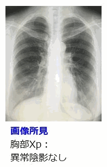
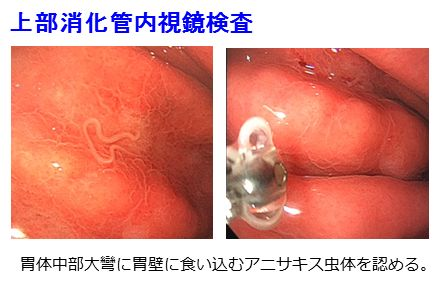
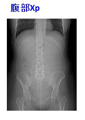
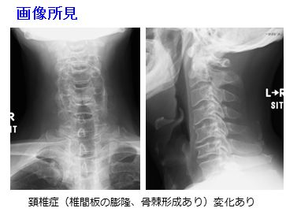
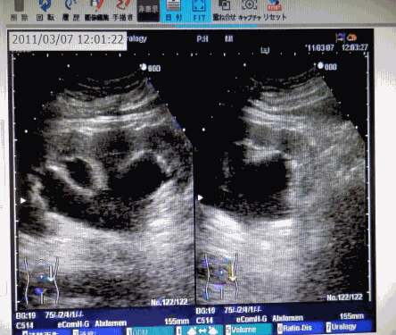

| 研修医のための外来必携 | |
| user | |
| Toshiba (2016) | |
第１章
総論
１）はじめに～研修医でも外来ができるようになろう！～
これまでの研修のシステムは、入院患者さんに対応することで様々なことを学ぶものでした。昔は、当直は別として、研修医が外来をするということはほとんどありませんでした。しかし、世界的な流れで、医療の現場が、入院から外来へと移行しています。よって医学教育の現場も、徐々に外来での研修を重視するようになってきています。
『外来は難しいから』『時間がないから』などと言わないで、積極的に外来に出て、学ぶことが重要と思います。外来研修では、入院患者さんの対応と違う面が多々あり、非常に勉強になります。
厚生労働省が示す初期研修の経験すべき疾患（レポート必須症例）30症例中、 20例 は、 外来の症例でも可能となっております。なにより、今後は、外来診療能力の高い医師を求められる時代となると思います 。外来は、怖い面もありますが、非常に勉強になり、楽しい面も多々あると思います。
本書は、プライマリケア外来における研修に関して書かれた本です。
専門外来やドクターＧのような総合診療外来のための本ではありません。
いわゆるウォークイン外来や一般外来などで、研修医が問診や診察を行い、指導医と共にオーダーをして治療にあたることを想定しております。
ぜひ、本書で、外来業務に興味をもって頂き、積極的に外来研修をして頂ければ幸いです。また、現場の指導医の先生にお役に立てれば幸いです。
執筆するにあたり、トロント大学家庭地域学科のHelen P Batty教授よりご指導を頂き、同科の研修プログラムを参考とさせて頂きました。
２）準備すること
入院患者さんに関しては、ゆっくりと時間をかけて話を聞いたり、熟考して検査オーダーをだせます。また、何度も話すことにより、医師患者関係を築くことができます。しかし、外来は、短時間で、様々なことをしなければなりません。
入院診療と異なることを意識として 、次のことを持って頂きたいと思います。
①時間の制約がある
たとえば、ひとり10分とか15分で問診から診察を済ませなければならない場合もあるし、30分かけてもよい場合もあります。しかしながら、外来時間は決められています。
午前であれば、9時～12時 午後であれば13時～17時が通常です。
この時間内に業務を終了することが求められます。
【ポイント】
☆必ず、時計を準備しよう
☆ひとり、何分で診察しているのか意識する
☆現在、診察待ち患者が何名いるか意識する
②決断する
オーダーをしなければ、先に進めません。
短時間に即断即決しなければならない場面が多くあります。医師がオーダーをしなければ、看護師やコメディカルや事務方は動けません。ぐずぐずしている暇はありません。
【ポイント】
☆ひとりで悩まない、すぐに相談する
分からない時は、指導医、看護師、事務方などに、聞く。他科にすぐコンサルトしましょう。聞くことは恥ではありません。患者さんのためになれば、自分のプライドは捨てて、誰にでも聞きましょう。
☆オーバーでもいい？
過剰な検査や治療はよくありません、しっかりとＥＢＭを踏まえれば過剰な検査はしないで済みます。しかし、時間がない場合などは、悩みに悩む場合は、オーダーをしてもいいと思います。よく、自信ある研修医で、『＊＊＊だから、このまま帰していい』と断言する人がいるが、それは非常に危険です。外来患者に対する基本姿勢は、「何か潜んでいるかもしれない」と疑うことが大事です。小心者でＯＫ、変な自信は捨てた方がいいと思います。
③一期一会
患者さんとは、その時に会い、その後その患者さんをフォローする可能性は低いと思います。よって、あなたの第一印象は、患者さんに大きなインパクトを与えます。
また、短時間で、医師患者関係を構築しなければなりません。
あなたの身なりや言葉遣い、態度が大きな影響を与えます。
ファッションと身だしなみは異なります。研修医は若い人ですが、患者さんは通常高齢者が多いです。プライベートであなたがカッコいい、かわいいと思うファッションを、患者さんは求めていません。世代間のギャップがあります。あなたが、プロならば、患者さん（高齢者）に不快を与えない落ちつた身だしなみと態度をとるべきでしょう。
【ポイント】
☆髪型、服装には気をつける
☆綺麗な白衣とスクラブ
白衣のボタンはしめる、スクラブの下は、胸のあいたシャツや、派手なＴシャツなど着ない。ジーンズは避ける。靴下ははく。スリッパは避ける。
女性の場合は、長い髪は結ぶ。男性の場合は、髪は整える。
☆言葉づかい、表情、態度に気をつける
患者さんからのクレームで最も多いのが、言葉づかいや表情です。
相手にわかるような説明に心がけ、柔らかい表情で、常に冷静な態度をとるように心がけてください。研修医であるので、＜診させて頂く＞という感謝の気持ちを忘れてはいけません。
☆自分の口癖に注意する。
「フツーに・・」「だいたい・・」「まあ・・・」「～みたいな」など、世代により人によ り様々な口癖がありますが、それを連発すると、患者さんに不安を与える可能性もあります。注意してください。
④基本的な事項の確認
【ポイント】
☆どのような病院かを知る
外来研修の場合、どのような地域で、どのような病院で、外来をするか把握しておいてください。どこに行っても、ほとんど同じ業務ですが、地域性がある場合があります。
また、その病院が、その地区でどのような役割を果たしているか知る必要もあります。
完全なプライマリなのか、2次までやるのか、3次までやるのか・・・。
☆その病院の外来のシステムを知る
病院により外来システムは異なります。
外来の時間、看護師の配置、秘書の配置などを把握してください。
検査がどこまでできるかを把握してください。また、できない検査を確認してください。
すぐに、採血ができるか、心電図が取れるか・・・・ＣＴがとれるか、ＭＲＩがとれるか、内視鏡ができるか・・・確認を行ってください。
☆外来で対応できない場合
外来では対応できなく、入院が必要な場合、誰に相談したらよいかを把握してください。
また、心筋梗塞や脳梗塞などの超急性期疾患が来た場合、その病院で対応できるのか、高次医療機関へ送るのかを確認してください。
⑤調べる本やサイトの準備
基本的には、わからないことは、すぐに調べる必要があります。悩むよりも調べる。
使い慣れた本やサイトを準備して下さい。
基本的には、診断に関する本（サイト）、治療に関する本、薬に関する本等を3種類用意してください。
下記に参考図書を示しますが、自分の使いやすいものでいいと思います。
３）業務
①問診
①－１問診の前に
必ず問診票を熟読する 。本人が書いたのか、看護師が書いたのかも確認する。
主訴がわかれば、その時点で鑑別をおおまかにあげておく。
既往、アレルギー歴などの欄は要注意。
時間があれば、診察の前に問診票の情報を事前にカルテに入力する。
①－２問診の手順
医療秘書が配置されていれば問診に集中できるが、基本的には、カルテを書きながら、行う。メモしてあとで、後でまとめて書くことはしない。現場では、そのような時間がない場合が多い。とにかくその場で記録することが大切である。 その日の外来業務が終わってから、カルテを追加修正することはできる。
＜１＞自己紹介 ：担当の＊＊＊です。（研修医と名乗るかどうかは、指導医に確認する。）
↓
＜２＞患者氏名の確認 ：失礼ですけど＊＊＊さんですね。
↓
＜３＞オープンクエッション ：今日はいかがしましたか？
ここで大事なことは、その患者さんが何を目的に来たか ということを把握することである。
主訴と来院目的が異なることも多々ある。（例、問診票には、風邪症状とあるが、実は、血圧の上昇が気になってそのことに関して聞きたいため来院したとか・・・）。
患者さんへ対する傾聴は重要であるが、プライマリケア外来では、診断を下して、早く治療をおこなうことも大事である。また、具合の悪い患者さんの待ち時間を短縮させることも重要な仕事である。よって、状況によるが、オープンクエッションは、3分以内と割り切る 方法もよいと思う。
↓
＜４＞クローズドクエショッン
診断がつくかつかないかの勝負の分かれ目である。本をみながらでもよいので、数多くの質問をする。山中先生の「攻める問診」をそばにおいて診療することをお勧めします。
【ポイント】
☆最も重要なものの一つには、痛みに関する質問
・O(Onset)：発症様式
・P(palliative/provocative)：増悪・寛解因子
・Q(quality/quantity)：症状の性質・ひどさ
・R(region/radiation)：場所・放散の有無
・S(associated symptom)：随伴症状
・T(time course)：時間経過
＜５＞システムレビューを使う。
時間があれば下記のシステムレビューを使用する。これを使用すると疾患がかなり絞られます。時間がなくても、問診において、聞き忘れがないようにするために、確認用に用いる。
【ポイント】
システムレビュー あるものに○をつける。
②プライマリケア外来におけるカルテのまとめ方
プライマリケア外来は、時間がタイトです。
退院サマリーのように、詳細にまとめることはできないが、基本的には、次のようにまとめてください。電子カルテならば、フォーマットをつくっておくと楽です。
【主訴】頭痛 （主訴は、ひとつかふたつ）
【現病歴】
【ポイント】
☆現病歴は、4つのパートに分けて書く
（１）患者背景
・生来健康
・高血圧で当院フォロー中。
・うつ病で、＊＊＊メンタルクリニック通院中。
（２）時系列
14日前に頭痛出現・・・・
7日前に・・・
3日前に・・・
昨日・・・
（３）陰性所見（鑑別診断） ⇒（２）の中に入れていい。
吐き気（－）発熱（－）麻痺（－）光過敏（－）眼痛（－）・・・・・
（４）来院の具体的目的と誰とどうやって来院したか
例）頭部ＣＴを撮影希望にて、母親と共に、独歩来院。
【既往歴】
【家族歴】
【生活歴】
【身体所見】下記のように事前に電子カルテに入力しておき○をつけるようにすると早い。
バイタル
意識異常
顔貌異常
眼球結膜 黄疸
眼瞼結膜 貧血
咽頭発赤
咽頭腫大
舌 乾燥
頚部リンパ節 触知
頚部硬直
甲状腺腫大
肺呼吸音
呼吸音異常（減弱、消失、呼気延長）
副雑音<断続ラ音（水疱音、捻髪音）、連続ラ音（笛音wheezes、いびき音rhonchi）>
心音 Ⅰ音 減弱 亢進 Ⅱ音 減弱 亢進 Ⅲ音
心雑音
腹部聴診 減弱 亢進
手術痕
腹部圧痛
背部叩打痛
下肢浮腫
下肢静脈瘤
下肢 右足背動脈拍動
左足背動脈拍動
神経学的所見
髄膜刺激症状
筋力左右差あり
異常腱反射あり
【診察のポイント】
☆頭部から下に素早く行う。
素早く行うために、自分が立って、患者さんの背後に回る。胸部背側の聴診はしっかり行う。感染症などの場合、暴露されないように気をつける。所見の取り方に迷う場合は、保留してあとで指導医と共に確認する。
③アセスメント＆プラン
鑑別疾患は、最初は、大きくとらえてください。
例えば、女性の腹痛の患者さんならば、消化器系、循環器系、婦人科系などとおおまかに捉えます。指導医と議論をしながら、狭めていってください。
④指導医へのプレゼンの仕方
診察が終了し、オーダーを出す前に、指導医に必ずプレゼンテーションをしてください。
順序は、今まで述べてきたカルテの書き方と同じです。
１：氏名＊＊＊さん、女性、＊＊才。＊＊＊クリニックで高血圧にてフォロー中です。本日、腹痛を主訴に来院されました。この患者さんについてプレゼンを行います。
（最初にどのような患者についてプレゼンするか述べます ）
２：現病歴は～、既往歴は～、家族歴は～、身体所見は（陽性所見のみ伝える）～
（必ず主訴 は、現病歴 は、既往歴 は、などの頭出し をする。
３：アセスメント＆プラン
大きく鑑別を３つ挙げてください。
本命（もっとも考えられる）、対抗（次に考えられる）、大穴（重篤な疾患で、見逃すとま ずい）。アセスメントに関するプレゼンの仕方は、
＊＊の（病歴や所見）により、＊＊＊＊の疾患を考えて、＊＊＊＊＊の検査を行います。
例）心窩部痛の患者に関するアセスメントのプレゼン
過去の既往もあり、消化性潰瘍を考えて上部消化管内視鏡検査をオーダーします。（本命）心窩部痛の後に吐き気・食欲低下が出現しており、虫垂炎も考えて採血で白血球の上昇を確認し、腹部エコーにて虫垂をチェックします（対抗）。しかし、冷や汗も出ており、心筋梗塞の可能性も否定でませんので、最初に心電図をとります（大穴）。
↓
研修医のこのプレゼンにより、指導医とディスカッションして、範囲を狭めてゆき、適正な検査をオーダーする。研修医は、あらゆる角度から幅広く鑑別する訓練をしてください。
【ポイント】
プレゼンは、患者情報を指導医とディスカッションするためのものです。
できるだけ簡潔に、わかりやすくしてください。研修医はよく現病歴と身体所見を混ぜたりしてプレゼンします。非常にわかりにくいです。必ず、 ｢現病歴は~｣とか、｢身体所見は~｣と、頭だしをすると間違えません。
⑤患者さんへの説明
検査の結果がでたら、患者さんへ説明します。
まず、説明する内容を指導医と相談して、カルテに記載してください。
記載を見ながら説明すると抜けがなくなります。
最後に、説明の追加を書いてカルテを確定させてください。
下記のようの順で説明すると抜けがなくなります。わかりやすい言葉で、丁寧に説明してください。入院と違い、外来患者さんは普通の生活に戻ります。家に帰って、注意すべきことも伝えましょう。
例）感冒の患者の生活指導：うがい、手洗い、マスクをして、水分を十分にとりできるだけ安静につとめてください。
【検査結果説明】
1.［検査結果］
2.［診断］
3.［治療方針、次回受診など］
4.［生活指導やアドバイス］
5.「増悪時の対応」＊＊＊＊の時は、すぐに来院して下さい。
⑥病名をつける
私達はほとんどの場合、保険診療をおこなっております。よって、必ず導医と一緒に保険診療に対する病名を付けてください。
⑦ふりかえり＆反省会
外来で経験した症例は、必ず控えておきましょう。（長崎大学病院の場合、携帯電話からアクセスするレジチェックへ登録）また、帰りに指導医と共に、ふりかえりをしましょう。
【ポイント】
症例のふりかえりだけでなく、業務のやり方のふりかえりも行いましょう。
次に行う外来業務までに、何を準備するか自分に課題を課してください。
第２章
厚生労働省が示す「研修医が経験すべき症状」よりレポート必須項目をピックアップ
１．不眠
不眠と全身倦怠感を主訴とした症例
年齢・性別等：男性 46歳 生来健康 主訴：不眠、全身倦怠感
受診の2か月ほど前より会社での仕事が忙しくなり、 疲れのたまり を感じるようになっていた。2週間ほど前より 寝つきの悪さ が見られ、睡眠薬の処方を希望して総合診療科外来を受診した。
理学所見
体温：36.4°C、血圧：130/72 mmHg、脈拍数：81 回/min、呼吸数：12 回/min、SpO2：99%（Room air）
頭頸部、胸部：特記事項無し。腹部：平坦、軟、蠕動音正常、圧痛なし。
四肢、神経学的所見：特記事項無し。
First impression＆Discussion
研修医 ：短時間型の睡眠薬であるブロチゾラムを処方しようと思いますが。
指導医 ：仕事の忙しさは具体的に どうだろう？
研修医 ： 半年前から営業部の部長 をしているそうです。
指導医 ：家庭での様子 はどうだろうか？
研修医 ：奥さま、小学生の子ども2人と暮らしています。
指導医 ：気になることが多いね。もっと詳しく社会生活歴に迫ってみよう。
問診の続き
研修医 ：お仕事はどのように大変です？
患 者 ：なかなか業績が上がらない し、部下もうまく使えていない 気がして。ちょっとこのポジションは 自分には向かない気がする んです。
研修医 ：残業や休日出勤はありますか？
患 者 ：ほぼ毎日2～3時間残業 します。土日も片方は会社に出てきます ね。
研修医 ：ご家族とはいかがお過ごしですか？
患 者 ：休日は子どもの遊びに付き合いますが、なかなかついていけなくて 。子どもにも怒られる始末で 自分が情けない ですよ。
血液検査所見（単位略）
WBC 7600 Hb 14.3 T-bil 1.1 TP 7.1
Neu 65.8％ Ht 40.5 AST 20 ALB 4.5
Ly 18.8％ PLT 21.5 ALT 16 BUN 9.8
RBC 4.70 ALP 211 CRE 0.77
Glu 98 CRP 0.16
プロブレムリスト
#1.不眠（入眠困難）#2.全身倦怠感
指導医 ：まず内科的・身体的な問題はありそうかな？
研修医 ：身体所見と血液検査上は指摘できなさそうですね。
指導医 ：追加しておきたい検査はある？
研修医 ：特に思い浮かばないです。
指導医 ：身体的には問題なさそうだよね。他に気になる点は？
研修医 ：ストレスの多い生活 できつそうですね。
指導医 ：しかも 「自分には能力がない」という思考 に陥っているね。
診断： うつ病の疑い
（その後の経過）
対症療法として睡眠薬を処方し、近医精神科クリニックに紹介した。
うつ病の診断でSSRI（エスシタロプラム10mg）を処方され、並行して認知行動療法も行われた。
抑うつ症状は徐々に改善し、それとともに仕事への取り組み方にも変化が見られ、現在は部長として順調に仕事をこなしているとのこと。
（処方例）
ブロチゾラム（0.25mg）（レンドルミン® ）1錠1x 就寝前 7日間
（実際に担当した研修医からの体験談、教訓となる点）
・この症例のポイントは？
→不眠という症状から、患者さんの生活背景を追い、うつ病のサインに迫った点。
・どの点で教育的？
→うつ病をはじめとした精神疾患も、プライマリケアの現場で扱う大切な領域だということを感じられた。適切に専門の医療機関につなぐという場面にも触れることができた。
TIPS
うつ病患者の多くは初めに内科を受診しているという事実を知っておく。
「なぜ不眠になっているのか」日常生活全体を見渡す姿勢が大事。
患者さんの生活の質を高めるという気持ちを持って診療しよう。
夜間の不眠に不穏興奮を伴った症例
年齢・性別等：女性 68歳 生来健康 主訴：夜間の不眠・不穏
受診の2か月ほど前より入眠困難と中途覚醒が目立っていた。受診前日に市販の睡眠薬を試しに飲んでみた ところ、夜中に うろうろと歩き回り 、天井に向かって叫ぶ などの異常な行動が見られた。翌朝、 本人はそのことを覚えていない 様子。驚いた家族に伴われ総合診療科を受診した。
理学所見
体温：36.7°C、血圧：138/84 mmHg、脈拍数：64 回/min、呼吸数：14 回/min、SpO2：99%（Room air）
頭頸部、胸部：特記事項無し。腹部：平坦、軟、蠕動音正常、圧痛なし。
四肢、神経学的所見：顔貌はやや 仮面様 。 小刻み歩行 あり。
First impression＆Discussion
研修医 ：市販薬によってせん妄が生じたんだと思います。
指導医 ：日中の様子 はどうだろう？
研修医 ：息子夫婦と暮らしていますが、2人とも仕事に出ている そうです。
指導医 ：せん妄の危険因子が他にもないか、 考えてみる必要がありそうだね。
問診の続き
研修医 ：普段はよく眠れていますか？
患 者 ：眠れる時もあるけど、眠れない時もあります。昼寝もよくする。
研修医 ：ご家族から見て何か変わったことはありましたか？
息 子 ：仕事から帰ったときにお茶と座布団が2人分用意されてて。
「お客さんが来た」 って言ってたけど、そんな形跡はなかったです。
研修医 ：お客さんはよくいらっしゃるんですか？
患 者 ：ええ、たまにですね。 きれいな赤い服 を着てます。
心理検査所見
長谷川式簡易知能評価スケール（HDS-R）:22点
血液検査所見（単位略）
WBC 5800 Hb 12.1 T-bil 0.9 TP 6.7
Neu 59.7％ Ht 37.5 AST 11 ALB 4.3
Ly 20.2％ PLT 18.7 ALT 15 BUN 16.8
RBC 4 . 10 ALP 190CRE 0.65
Glu 78 CRP 0.13
プロブレムリスト
#1.夜間の不眠・不穏 #2.幻視 #3.パーキンソン症状
指導医 ：単純にせん妄だけでは済まない感じがするね。
研修医 ：認知症が背景にある可能性は考えられると思います。
指導医 ：随伴症状も気になるところだよね。
診断： 薬剤性のせん妄・Lewy小体型認知症疑い
（その後の経過）
市販薬の服用を中止するよう指示し、睡眠覚醒リズムの安定化を図り、メラトニン受容体作動薬を処方した。認知症専門外来での精査でLewy小体型認知症の診断となった。抗認知症薬を調整し、幻視も消失した。
（処方例）
ラメルテオン（8mg）（ロゼレム ® ）1錠1x 就寝前 7日間
画像所見
脳血流シンチ（SPECT）：両側後頭葉に血流低下あり
MIBG心筋シンチ：取り込み低下あり
（実際に担当した研修医からの体験談、教訓となる点）
・この症例のポイントは？
→不眠に随伴する症状から、せん妄だけでなく、その背景因子としての認知症について考察できた。
・どの点で教育的？
→市販薬を含めた薬剤歴を確認し、有害な作用を及ぼしている薬剤を中止することの重要性を学んだ。
TIPS
夜間の不眠だけでなく、全体的な睡眠覚醒リズムを把握する。
高齢者はせん妄を起こしやすい。あらゆる危険因子に目を向ける。
認知症はcommon disease。家族の情報を含めた他覚的な所見も大切。
「その日の振り返り」
指導医 「今日はどうだった？」
研修医 「不眠の背景に様々な要因があることがよくわかりました。」
指導医 「何かに続発して不眠が生じていることの方が多いだろうしね。しかも不眠はＱＯＬを著しく損ねる から、適切に対応したいところ。一方で睡眠時無呼吸症候群とか、本質的な睡眠障害にも注意が必要だね。」
研修医 「睡眠薬って種類がとても多くて、使い分けが難しいです。」
指導医 「基本的には不眠のパターンに応じて、 作用時間で使い分ける といいと思う。入眠困難なら短時間型、中途覚醒なら中時間型、のようにね。それから、高齢者などせん妄を起こしやすい背景を持った方にはベンゾジアゼピン系を控える、とかね。」
研修医 「プライマリケアにおける認知症治療のコツってありますか？」
指導医 「ますは 認知症以外の疾患をルールアウト すること。電解質や栄養のバランスが乱れたり、軽微な外傷から慢性硬膜下血腫ができていたりして、似たような症状を呈することがある。食生活などのリズムや外傷歴など細かな問診が欠かせない ね。これらはTreatable Dementia とも言われていて、原疾患を治療すれば認知症症状も治る。
そのうえで、認知症があると推察されたら、 どのタイプの認知症か という段階まで考える。今回のように、色彩豊かな幻視やパーキンソン症状があればレビー小体型、性格ががらっと変化したり反社会的行動が目立っていれば前頭側頭型、といったようにね。」
研修医 「なるほど。問診の大切さ がよくわかりました！」
ポイント
1.睡眠障害のパターンに合わせ、作用時間によって睡眠薬を使い分ける。高齢者などせん妄を起こしやすい患者は要注意。
2.うつ病や認知症の患者は初めにプライマリケア医を受診していることが多い。不眠などの症状の背景を考え、詳しい生活歴の問診によって鑑別に迫る。
「もうひと頑張りの自習部屋」
■睡眠薬の使い分け
超短時間型（2-4時間の作用） ：ゾルピデム（マイスリー ® ）、エスゾピクロン（ルネスタ ® ）など
短時間型（6-10時間の作用） ：ブロチゾラム（レンドルミン ® ）、リルマザホン（リスミー ® ）など
中時間型（12-24時間の作用） ：フルニトラゼパム（ロヒプノール ® ）、エスタゾラム（ユーロジン ® ）など
長時間型（24時間以上作用） ：クアゼパム、フルラゼパムなど
※ゾルピデムやエスゾピクロンは非ベンゾジアゼピン系と呼ばれるが、作用機序は似通っており（GABA受容体の阻害）、せん妄を惹起するリスクもそれなりにあるので注意。上記のその他はすべてベンゾジアゼピン系
※上記と異なる作用を持った新しい睡眠薬
ラメルテオン（ロゼレム ® ）：メラトニン受容体作動薬
スボレキサント（ベルソムラ ® ）：オレキシン受容体拮抗薬
■ICD-10におけるうつ病の症状と具体的な聞き方
抑うつ気分 ：気分が何となく落ち込んで悲しい
興味と喜びの喪失 ：以前楽しいと思えたことが楽しめない
易疲労感と活動性の減退 ：ちょっと頑張っただけでひどく疲れる
集中力と注意力の減退 ：ものごとに集中できない・物忘れがひどい
自己評価と自信の低下 ：何をするにも自信がない・自分には能力がない
罪責感と無価値観 ：周囲に迷惑をかけている・自分には存在価値がない
将来に対する希望のない悲観的な見方 ：これから先に希望が持てない
自傷あるいは自殺の観念や行為 ：いっそのこと死んだ方がまし
睡眠障害 ：寝付けない・すぐに目が覚める・熟眠した感じがない
食欲不振 ：喉を通らない・おいしいと思わない・味を感じない
■認知症のサブタイプと症状
アルツハイマー型 ：記憶障害が前景に立つ・物盗られ妄想など
レビー小体型 ：色彩豊かな幻視・パーキンソン症状・レム睡眠行動異常など
前頭側頭型 ：性格変化・易怒性亢進・反社会的行動など
脳血管性 ：保たれている能力と障害された能力がはっきりしている（まだら認知症）
中核症状 ：記憶障害・見当識障害・遂行機能障害・失認・失行など
行動心理症状（BPSD） ：幻覚妄想・不安焦燥・抑うつ・徘徊など
※ 仮性認知症 ：うつ病患者は認知機能検査の点数が低くなる
→うつ病と認知症の鑑別は難しい ことであると認識する
２．浮腫
浮腫、呼吸困難を主訴とした症例
年齢・性別等：男性 76歳 主訴：浮腫、呼吸困難
高血圧、糖尿病にて20年ほど前より近医通院加療中。受診の1か月ほど前より徐々に両下肢のむくみ、労作時の息苦しさ を自覚していた。1週間ほど前より就寝時の息苦しさ も見られるようになり、精査を希望して内科外来を受診した。
理学所見
体温：36.4°C、血圧：162/92 mmHg、脈拍数：84 回/min、呼吸数：14 回/min、SpO 2 ：94%（Room air）
黄疸なし。貧血あり。頸静脈怒張あり。胸部：湿性ラ音あり。
腹部：平坦、軟、圧痛なし。四肢：両下肢に圧痕を残す浮腫あり。
First impression＆Discussion
研修医 ：短時間型の睡眠薬であるブロチゾラムを処方しようと思いますが。
指導医 ：仕事の忙しさは具体的に どうだろう？
研修医 ： 半年前から営業部の部長 をしているそうです。
指導医 ：家庭での様子 はどうだろうか？
研修医 ：奥さま、小学生の子ども2人と暮らしています。
指導医 ：気になることが多いね。もっと詳しく社会生活歴に迫ってみよう。
問診の続き
研修医 ：お仕事はどのように大変です？
患 者 ：なかなか業績が上がらない し、部下もうまく使えていない 気がして。ちょっとこのポジションは 自分には向かない気がする んです。
研修医 ：残業や休日出勤はありますか？
患 者 ：ほぼ毎日2～3時間残業 します。土日も片方は会社に出てきます ね。
研修医 ：ご家族とはいかがお過ごしですか？
患 者 ：休日は子どもの遊びに付き合いますが、なかなかついていけなくて 。子どもにも怒られる始末で 自分が情けない ですよ。
血液検査所見（単位略）
WBC 5400 T-bil 0.9 TP 5.8 尿蛋白 ３＋
RBC 330 AST 12 ALB 2.0 尿潜血 －
Hb 11.0 ALT 16 BUN 63 尿蛋白/Cr 5.6
Ht 34.5 Glu 155 CRE 5.77
PLT 24.6 HbA1c 7.5 CRP 0.05
プロブレムリスト
#1.浮腫 #2.呼吸困難
指導医 ：検査所見の異常はありそうかな？
研修医 ：貧血で、腎不全、蛋白尿、低アルブミン血症を認めます。
指導医 ：追加しておきたい検査はある？
研修医 ：虚血性心疾患を否定するため、心電図・心エコーはしておきたいです。
指導医 ：そうだね、糖尿病があるので、無痛性の虚血性心疾患を起こしている可能性はあるよね。あと、呼吸困難があるので胸部単純レントゲンで心拡大や肺うっ血、胸水の有無も確認しておいた方がいいかもね。
追加の検査所見
心電図：異常なし、心エコー：壁運動に異常なし
胸部単純レントゲン：心胸比５８％、肺血管陰影の増強、両側胸水あり
診断： 糖尿病性腎症、ネフローゼ症候群
（その後の経過）
心疾患、肝疾患による浮腫は否定的であったため、上記診断とした。
呼吸困難感強く、入院管理の上、腎臓専門医へ紹介した。
その後、利尿薬の調節、減塩指導などを行い、両下腿の浮腫は軽減、呼吸困難は消失した。しかしながら、徐々に腎機能は悪化したため、腎代替療法の説明、選択を行っていく方針となっている。
（処方例）
ラシックス ® （40mg）1錠1x～3錠3x 尿量に応じて増減
ダイアート ® （60mg) 1錠1x ルクラック ® （4mgまたは8mg)１錠1x
（実際に担当した研修医からの体験談、教訓となる点）
・この症例のポイントは？
→両側性浮腫という症状から、鑑別を進めていった点。
・どの点で教育的？
→糖尿病を基礎疾患とした両側性浮腫ということで、心臓、腎臓由来のささまざまな病態 を考え、鑑別することができた。
TIPS
両側性浮腫は、原則的に全身疾患が原因で起こる。
まず、心臓、肝臓、腎臓の症状および所見を探そう！
右下腿の浮腫を主訴に来院した症例
年齢・性別等：女性 42歳 主訴：右下腿疼痛、浮腫
SLEにてステロイド投与中。1週間ほど前より急に右下腿の浮腫が出現したため、内科外来受診した。
理学所見
体温：37.0°C、血圧：132/84 mmHg、脈拍数：72 回/min、呼吸数：12 回/min、SpO 2 ：99%（Room air）
頭頸部、胸部：特記事項無し。腹部：平坦、軟、蠕動音正常、圧痛なし。
四肢：右下腿から足背にかけて圧痛、発赤、熱感を伴う浮腫あり。
First impression＆Discussion
研修医 ：ステロイド投与中なので、蜂窩織炎や深部静脈血栓症が考えられます。
指導医 ：その二つを鑑別していくうえでは、どのような所見が有用？
研修医 ：発赤、熱感、疼痛を認めることから蜂窩織炎によるもののほうが可能性としては高いと思います。
指導医 ：そうだね。血栓性静脈炎を呈しているような場合は診察だけでの鑑別が難しい場合もあるのでも感染源や血栓形成の誘因についてもう少し病歴を詳しく聞いてみようか。
問診の続き
研修医 ：足が腫れる前に足に傷などなかったですか？
患 者 ：そういえば、2週間ほど前にかかとにあかぎれができて治りが悪かったことはありました。
研修医 ：最近、飛行機や列車、車などに長時間乗るなど足を動かさないようなことはなかったですか？
患 者 ：いいえ。特にそういった出来事はありませんでした。
血液検査所見（単位略）
WBC 11000 Hb 13.1 T-bil 1.2 TP 6.1尿蛋白 ー
Neu 82.7％ Ht 38.5 AST 11 ALB 3.6尿潜血 ー
Ly 17.3％ PLT 22.7 ALT 15 BUN 16.8
RBC 420 D-dimer 0.5 ALP 190 CR E0.65
Glu 78 CRP 5.62
プロブレムリスト
#1.右下腿浮腫
指導医 ：やはり血液検査からは炎症はありそうだね。
研修医 ：そうですね。病歴やD-dimerが正常であることからは、血栓性静脈炎より蜂窩織炎の方が可能性としては高いと思います。
指導医 ：追加でやったほうがいい検査はあるかな？
研修医 ：血栓を否定するために、下肢静脈エコーはしてみたいと思います。
画像所見
下肢静脈エコー：明らかな血栓なし
診断： 右下腿蜂窩織炎
（その後の経過）
抗菌薬点滴を行い、炎症反応低下とともに、右下腿浮腫、発赤、疼痛は改善した。
（処方例）
セファゾリンナトリウム（１g）1日3回点滴静注 7日間
（実際に担当した研修医からの体験談、教訓となる点）
・この症例のポイントは？
→ステロイド内服中といった患者背景を念頭に置きながら、片側性浮腫の鑑別を行う。
・どの点で教育的？
→片側性浮腫の鑑別を挙げ、診断に至るまでのプロセスを学ぶことができた。
TIPS
浮腫を見た場合は、片側性か両側性かで鑑別を進めていく。
感染徴候の有無、色調など、注意深く診察を行う。
患者の基礎背景なども重要な手掛かりになるので、詳細な病歴聴取が大切！
「その日の振り返り」
指導医 「今日はどうだった？」
研修医 「浮腫の鑑別方法について勉強することができました。」
指導医 「まずは、両側性か片側性かが重要な鑑別のポイントだよね。急性発症の片側性下腿浮腫は、深部静脈血栓症の可能性があり、早く治療介入しないと肺血栓塞栓症を発症して生命を脅かす場合もあるので、注意が必要だね。」
研修医 「あとは、糖尿病やSLEなど基礎疾患を持った人に対する浮腫のアプローチなども勉強になりました。」
指導医 「そうだね。患者さんの基礎背景によって、鑑別疾患として挙げる優先順位が変わってくるよね。頻度の高い疾患や緊急度の高い疾患から鑑別していくことが重要だね。そういう理由からすると、病歴聴取は、大切だよね。」
研修医 「そうですよね。病歴は大切ですよね。ちなみに、頻度は高くないけど、浮腫の鑑別疾患として考えたほうがいいものはありますか？」
指導医 「その他の浮腫をきたす原因としては、甲状腺疾患や薬剤性などは少し頭に入れておくといいかもね。甲状腺疾患は、機能低下症が教科書的にはよく知られているけど、機能亢進症でも時々いるよ。あと、最近、話題になっているのは、RS3PE (Remitting Seronegative Symmetrical Synovitis With Pitting Edema) 症候群とかかな。」
研修医 「いずれにしても、治療としては、原疾患の治療や利尿薬になりますか?」
指導医 「そうだね。心不全、肝硬変、腎不全などの体液量が増加している場合の浮腫は、利尿薬投与や塩分制限が治療になってくるよね。ただし、漫然と利尿薬を投与するのではなく、きちんと原因や病態を考えながら治療を行っていくことが重要だね。」
ポイント
1.病歴、診察（圧痕性/非圧痕性、片側性/両側性など）から、頻度の高い疾患、緊急度の高い疾患を鑑別にあげ、検査を進めていく。
2.何が原因で起きているのかを考え、原疾患に対する治療を行う。
「もうひと頑張りの自習部屋」
■浮腫の鑑別
■圧痕性浮腫(pitting edema)と非圧痕性浮腫(non-pitting edema)
圧痕の確認は，脛骨前面や仙骨，前頭部などの骨が皮下に ある部位を母指で圧迫して行う。指を離したあとも圧痕が残る 『pitting edema（圧痕性浮腫）』と，圧痕が残らずに速やか に回復する『non-pitting edema（非圧痕性浮腫）』に分類さ れる。圧痕の有無は，視診でなく示指の指先で表面をなで ることにより確認する。 圧痕性浮腫は，その回復時間により 40秒未満の fast edema と 40 秒以上の slow edema に分類されます。一般に回復時間は血清アルブミン値と相関し、 低アルブミン血症に伴う浮腫ではfast edema を呈する。
■RS3PE (Remitting Seronegative Symmetrical Synovitis With Pitting Edema) 症候群
RS3PE症候群は1985年McCartyが提唱した疾患である。１）予後が良い (Remitting)、２）リウマチ因子が陰性 (Seronegative)、３）対称性 (Symmetrical)、４）手背足背の圧痕浮腫を伴う滑膜炎 (Synovitis with Pitting Edema) の頭文字から名づけられた。60歳以上の高齢者 に好発し、比較的急性に発症 する。X線上関節破壊をきたさず、再発・再燃はまれである。患者の血清中のvascular endothelial growth factor (VEGF)濃度が著明に増加しており、このVEGFによる血管透過性の亢進がRS3PE症候群患者の手足の浮腫の発現に関与しているものと考えられている。ステロイドが著効 するが、悪性疾患の合併 が多い。
３．リンパ節腫脹
発熱、頸部リンパ節の腫脹を主訴とした症例
年齢・性別等：男性 21歳 生来健康 主訴：発熱、咽頭痛、リンパ節腫脹
受診7日前より 発熱 、 咽頭痛 を自覚していたが、昨日より 頸部リンパ節腫脹 を認めたため総合診療科を外来受診となる。
理学所見
血圧：112/63 mmHg、脈拍数：106 回/min、呼吸数：19 回/min、SpO2：99%（Room air）、 体温：38.8°C
両頸部に２cm大のリンパ節腫脹あり 、 扁桃腫大あり 、 胸部：特記事項無し。
腹部：平坦、軟、四肢、神経学的所見：特記事項無し。
First impression＆Discussion
研修医 ：経過からは急性扁桃炎 ですかね？
指導医 ：そうだね、だけど、リンパ節の腫大の程度が少し気になるね。リンパ節の性状は？伝染性単核球症 の可能性は？
研修医 ：有痛性 で、リンパ節は柔らかかったです。最近の唾液感染を示唆する病歴はありません。
指導医 ：じゃあ、採血してみようか。
血液検査所見（単位略）
WBC 2100 T-bil 1.3 ALB 3.9
Neu 55.7% AST 220 BUN 11.2
Ly 37.0％ ALT 161 CRE 0.70
RB 450 ALP 311 CRP 8.32
Hb 12.9 TP 7.1 Glu 120
Ht 38.1
Plt 19 . 7
プロブレムリスト
#1.発熱 #2.リンパ節腫脹 ＃3.扁桃腫大 ＃4.CRP異常高値 ＃5.肝機能異常
この時点での鑑別診断は？
→ウイルス感染症（伝染性単核球症）、悪性リンパ腫、など。
また、追加する必要がある検査は？
→胸部単純写真、異系リンパ球、LDH、sIL-2R、ウイルス抗体価
血液検査追加（単位略）
異型リンパ球なし
抗核抗体 陰性
EBNA抗体 陽性
VCA-IgM抗体 陰性
CMV-IgG抗体 陽性
CMV-IgM抗体 陰性
LDH234
sIL-2R 781
画像検査
胸部単純写真異常なし
腹部エコー異常なし
診断： 亜急性壊死性リンパ節炎（菊池病）
（その後の経過）
ステロイド内服によりリンパ節は縮小した。以降プレドニンは漸減中止した。
（処方例）
プレドニン® 30mg 2x（朝4錠、昼2錠）14日間
（実際に担当した研修医からの体験談、教訓となる点）
・この症例のポイントは？
→診察のポイントは、リンパ節腫脹部位や、腫脹リンパ節の性状（大きさ、圧痛、癒着）など。
→リンパ節腫脹の鑑別（反応性か腫瘍性）、初診のみでは診断確定が困難な症例がある。生検検査にて診断がついた。
・どの点で教育的？
→若年者の原因不明のリンパ節腫脹の鑑別として重要。
TIPS
若年者で、発熱、扁桃炎を認める原因不明の有痛性リンパ節腫脹では亜急性壊死性リンパ節炎を鑑別に挙げる。その場合、組織学的な検査（リンパ節生検）を考慮する。
「その日の振り返り」
指導医 「今日はどうだった？」
研修医 「急性扁桃炎と思った外来患者さんの血液検査で、白血球数が低かったのでびっくりしました。」
指導医 「細菌感染とウイルス感染の鑑別で白血球数は参考になるね。今回、はじめの血液検査で出し忘れてたけど、異型リンパ球の出現はウイルス感染を強く示唆する所見だよね。」
研修医 「はい、ですが異系リンパ球も正常で結局決め手となる所見がありませんでした。LDHの上昇、体重減少や盗汗などのB症状はなさそうでしたので、緊急性はなさそうと判断しました。」
指導医 「この症例は初診で診断を確定させることは難しい症例だね。外来では診断がつかない症例も多いんだ。その時は、臨床経過で判断する必要があるね。悪性リンパ腫であれば、確かにLDHやsIL-2R等の数値やリンパ節が進行性に上昇するし、ウイルス感染症であれば自然寛解する。また、病歴で自己免疫性疾患の既往、薬剤の服用歴、ペット飼育歴、HIV感染症の有無を確認することも大事だね。」
研修医 「今回は病理組織学的検査が診断のポイントでしたね。」
指導医 「そうだね、この症例は最終的に生検で診断がついたので、適切な治療を行うことができた。鑑別診断に挙がらない疾患は、診断することができない。知っているか、知っていないかが大きな違いなんだ。」
研修医 「教科書でいくら勉強していても、実際の外来診療の場に出ると病気が思いつかないです。このように外来で経験すると絶対忘れないですね。」
指導医 「リンパ節腫脹は特に鑑別が多岐にわたるので、この際しっかり勉強して次の診療に役立てよう。」
ポイント
1.初診のみで診断が確定しない症例は意外に多い。全身症状、血液検査から緊急性があるかどうかを見極めよう。
2.適切な診断を下すことで、適切な診療ができる。生検検査も考慮に入れる。
3.リンパ節腫脹の鑑別は多岐にわたるので、系統だてて学習しよう。
「もうひと頑張りの自習部屋」
ポイント
1.数日のうちに急速に腫脹し、有痛性の場合は反応性のことが多い。
2.3cmを超える場合、無痛性の場合は悪性の可能性が高い。
3.4-6週間以上持続しているリンパ節腫脹は生検適応
４．発疹
皮膚掻痒感・湿疹を主訴とした症例
年齢・性別等：女性 34歳 生来健康 主訴：皮膚掻痒感・湿疹
16歳頃より四肢および体幹の掻痒感を自覚したことはあったが多忙を理由に受診したことはなかった。長期の坐位と発汗により掻痒感が増悪し、掻破することにより落屑が増加、四肢体幹より出血や滲出液も認めたために受診となった。特別な布などが掻痒部に接触した経緯もない。気管支喘息の既往あるも発作なく、医療機関の受診は10年以上なし。薬剤の内服もなし。
理学所見
・発熱なし（36.5℃）脈拍77回/分 血圧121/86mmHg
・四肢および体幹に 湿疹あり 膨疹ではない
First impression＆Discussion
研修医 ：うーん、かゆいんですね。かゆみの鑑別は・・・知らなくて・・・。
指導医 ：うーん、かゆみの鑑別というよりは、発疹の鑑別なのではないかな。
研修医 ：なるほど。ん？でも湿疹じゃないですか？
指導医 ：湿疹と発疹の違い もわかったほうがいいね。この疾患のポイントは？
研修医 ：えーっと・・・。かきむしる？気管支喘息？？
指導医 ：そうそう。いいところをついているね！さあ、鑑別していこう。
血液検査所見（単位略）
白血球 6800( 好酸球11% )
診察所見
・広範囲にわたり 乾いた慢性湿疹
・ 白色皮膚描記
・表面から 白い粉 を吹いている
・手指先端の湿潤した部分から滲出液あり
その他身体所見
異常所見なし
プロブレムリスト
#1.慢性湿疹 #2.気管支喘息 ＃3.好酸球高値
この時点での鑑別診断は？
→接触性皮膚炎(かぶれ)・薬疹・アトピー性皮膚炎など。
問診上は、明らかな接触歴なく、薬剤内服もなし。
喘息の合併、採血での好酸球高値から、アトピー素因が疑われる。
⇒詳細なアレルギー検査(RAST・RIST)の提出が必要！！
採血：RAST( Radioallergosorbent test 選択的特異的IgE検査)
ハウスダスト6+ ダニ6+ スギ２+ ヒノキ1+
ブタクサ 0 カモガヤ0 ムコール（カビ） 0 （最高値は6+）
採血：RIST(Radioimmunosorbent test 非特異的IgE検査)
IgE 1340 IU/ml（正常170以下）
診断： アトピー性皮膚炎
（その後の経過）
外来にて、局所への抗炎症薬の塗布(ステロイド外用薬：Strongest)および保湿を指導し、掻痒感に対する抗ヒスタミン薬の内服、皮膚刺激因子の除去のために生活指導をおこなった。具体的には室内の清潔・皮膚の清潔（発汗時は早めにタオルでの拭き取りなど)や家事の際の厚手のゴム手袋使用で手指の刺激の除去をおこなった。あと、かきむしらない様に徹底指導した。治療開始後2週間で皮膚掻痒感は改善し、皮膚からの出血・滲出液もなくなった。
（処方例）
デルモベート0.05%軟膏 ® 1日4回 適量を塗布
アレロックＯＤ内服錠5mg ® 2錠2x14日間
ヒルドイドローション ® 頻回に使用 保湿のために
※発疹と湿疹は違う！！
発疹：皮膚に生じた肉眼的変化の 総称
湿疹：表皮の炎症( 皮膚炎 ) 赤くてかゆみがあるもの
（実際に担当した研修医からの体験談、教訓となる点）
・この症例のポイントは？
→特徴的な皮膚所見および病歴からアトピー性皮膚炎を疑い、アトピー性皮膚炎の診断
および治療法を学ぶこと。
・どの点で教育的？
→湿疹と発疹の違い、問診および採血からアトピー素因をみつけ、診断治療につなげる
ことが大切だということがわかった。
TIPS
アトピー性皮膚炎はⅠ型とⅣ型アレルギーからなり、診断は問診・視診・採血などから絞り込むことができる。アトピー素因を持つ患者におきやすく、アレルゲンを探索することで、皮膚刺激因子となりうるアレルゲンから回避できる可能性がある。IgEが低くてもアトピー性皮膚炎のことがあり、この場合、菌状息肉腫・ATL・リンパ腫の鑑別が必要となってくる。
発疹・右顔面痛を主訴とした症例
年齢・性別等：男性 59歳 生来健康 主訴：右顔面痛・発疹
最近仕事が忙しく、疲労がたまっていた。睡眠時間も十分に取れていない。本日朝激痛とともに起床。右顔面に発赤と水疱を伴う発疹を認めた。疼痛が強く、我慢ができないために受診した。既往に糖尿病と高脂血症あり
理学所見
・発熱なし（36.8℃）脈拍82回/分 血圧138/87mmHg
・左顔面上方に発赤と水疱を伴う発疹あり。
・左外耳道入口部にも発赤と水疱を伴う発疹あり。
First impression＆Discussion
研修医 ：結構ひどい発疹ですね。痛そう・・・。
指導医 ：痛い、もポイントで、発疹の中でも痛みを伴うものは限られている。この疾患は、見慣れれば一発で診断がつくんだ。どういう特徴がありそうかな？
研修医 ：えっと・・・。何かに沿って・・・発疹がある？
指導医 ：いいところをついてきたね！では、病歴で大切そうなところは？
研修医 ：うーん・・・。疲労がたまっていた？？
指導医 ：オッケー。何を意味しているのかな？！さあ、確認していこう。
診察所見
・右顔面上方に発赤を伴う発疹あり
・上眼瞼発赤・腫脹あり
・左耳は外耳道入口部にのみ発疹あり
・ 発疹は三叉神経第一枝に沿っている
・発疹は一部痂皮化している
・鼓膜は正常
その他身体所見
異常所見なし
血液検査所見（単位略）
白血球 9200・ CRP 1.4
プロブレムリスト
#１ . 左一側性顔面急性発疹 #2.左顔面痛 ＃3.左耳介部湿疹 ＃４ . 疲労
この時点での鑑別診断は？
→疼痛を伴う発疹は少ない。一番有名なのは"帯状疱疹"
その他、疼痛を伴うものは皮膚感染症(蜂窩織炎や丹毒)：特徴的な発疹はない
⇒また、疲労＝免疫力の低下、と考えることができる。
上記から、帯状疱疹を念頭において 追加検査・追加診察⇒VZV抗体価など
採血( VZV (Varicella-Zoster Virus：水痘・帯状疱疹ウイルス)抗体価測定)
VZV-IgM 7.4(陰性)・ VZV-IgG 111.2(陽性)⇒ウイルスの再活性化を示唆
顔面神経麻痺の精査：柳原法(40点満点)
額のしわ寄せ、閉瞼は可能。口角・頬部の左右差などなく、40点(顔面麻痺なし)
診断： 左顔面帯状疱疹
（その後の経過）
同日より入院。抗ウイルス薬の点滴を一週間とNSAIDsの点滴を使用して経過を見た。発疹には直接抗ウイルス薬の軟膏を塗布した。徐々に疼痛および発疹は消失し、退院。入院加療により疲労も取れたとのこと。現在は疼痛にも悩まされず元気に活動されている。
（処方例）
・ゾビラックス注射薬 ® 1回5mg/kg 1日3回 7日間 腎機能にあわせて(外来であれば、バルトレックス(500mg)錠 6錠3x7日間)
・アセリオ静注薬 ® 1回500～1000mg 1日3回 5日間(症状にあわせて)(外来であれば、ロキソプロフェン(60mg)錠 6錠3x5日間)
・アラセナ-A軟膏 ® 1日4回 適量を塗布
※顔面神経麻痺があった場合・・・Ramsay-Hunt症候群 と呼ぶ
上記処方に、ステロイドの追加が必要。
・ソル・コーテフ静注用 ® 300mg 1日1回2日間、200mg 1日1回2日間、100mg 1日1回2日間、その後プレドニン ® 20mgに切り替え徐々に減量する。
（実際に担当した研修医からの体験談、教訓となる点）
・この症例のポイントは？
→疼痛を伴う一側性の発疹から、特徴的な帯状疱疹の所見をよみとること。また、帯状疱疹の原因から治療法、顔面神経麻痺が出た場合はどうするかまで深く学ぶこと。
・どの点で教育的？
→特徴的な発疹を覚えることで、診断の時間を短縮させることができる。
また、採血でVZVの抗体価を測定する意義を学ぶことができる。
TIPS
帯状疱疹は免疫力が低下している状態(膠原病やHIV、骨髄疾患など)でかかりやすいものといわれるが、このように疲労などで免疫力が落ちていても罹患しやすい。帯状疱疹の疼痛は強く、発疹消失後も疼痛が持続する(帯状疱疹後神経痛：PHN)ことがあるので、早期診断・早期治療が望ましいとされている。
「その日の振り返り」
研修医 「皮膚疾患は馴染みがなくて・・・。今回もあたふたしました。」
指導医 「一例目は掻痒感。きちんと診断できたみたいだね。追加で勉強してほしいのは、ステロイド外用薬の強さと抗ヒスタミン薬の種類かな。」
研修医 「ニガテに思っていた部分ですが、今回を契機に頑張ります。」
指導医 「二例目は疼痛を伴う発疹。今後はすぐに診断できるよね？」
研修医 「帯状疱疹が神経に沿って発疹をつくるなんて、知ってたつもりでしたが、勉強になりました。こんなに痛いんですね・・・。」
指導医 「そう。この症例では残らなかったが、帯状疱疹後神経痛(PHN：Post-Herpetic Neuralgia) で悩まされる患者さんは多いよ。」
研修医 「勉強になります。リリカ ® ( プレガバリン)の投与でしたっけ？」
指導医 「そう。その他にも抗うつ薬の投与や神経ブロックもある。皮膚科やペインクリニックに相談してもよいと思うよ。ところで、顔面神経までこのウイルスがおよぶとどうなるか勉強したかな？」
研修医 「はい。この水痘・帯状疱疹ウイルスによって高度の顔面神経麻痺が出ます。」
指導医 「この、Ramsay-Hunt(ラムゼイ・ハント)症候群という顔面神経麻痺は本当に治りにくい。必要があれば、耳鼻咽喉科にも紹介を厭わないことだね。 」
研修医 「はい！今回もありがとうございました。｣
ポイント
1.発疹と湿疹は違うということ、治療法が異なることを知る。
2.ステロイド外用薬の強さ、使用方法を学ぶ。
3.抗ヒスタミン薬の種類・効果を学ぶ。
4.帯状疱疹という、疼痛を伴う発疹の特徴をとらえる。
5.帯状疱疹原因検索のためのウイルス抗体検査の意義を知る。
6.耳性帯状疱疹顔面神経麻痺を伴った場合はステロイド投与は必須となる。(Ramsay-Hunt症候群 )
「もうひと頑張りの自習部屋」
５．発熱
発熱、臀部〜大腿後面の痛みを来した症例
年齢・性別等：女性 70歳 生来健康 主訴：発熱、右臀部〜大腿後面の痛み
受診４日前より悪寒が出現、ほどなく39度台の発熱を認めた。その数日前から右臀部〜大腿後面の痛みもあり、解熱も期待して手持ちの解熱鎮痛薬を服用し一時的に改善あるが再燃するため受診。
理学所見
36.3 ℃ （受診前に解熱鎮痛薬服用）、血圧119/75mmHg 脈拍97/分, SpO2:98%
咽頭発赤なし 頭頸部・胸部：異常なし。
腹部：平坦・軟、圧痛なし、腸蠕動音正常、CVA（肋骨脊椎角）叩打痛なし。
下腿浮腫なし、皮膚：異常なし、神経学的異常なし。
First impression＆Discussion
指導医 ：どう思う？
研修医 ：診察では特に異常もなく鑑別疾患が全く思いつきません 。臀部〜大腿後面の痛みも発熱との関連で思いつくものはないですね。
指導医 ：受診直前に解熱鎮痛薬を飲んでいるし、高齢者では症状がはっきりしない症例も良く遭遇するのでまずは一般検査をしてみよう。
血液検査所見（単位略）
WBC 11400 T-bil 0.8
stab 14％ AST 27
seq 79％ ALT 37
CRP 16.05 ALP 189
TP 6.9
ALB 4.0
BUN 27
CRE 0.99
検尿
濃黄色混濁
比重1.015
白血球 (3+)
蛋白 (-)
糖 (-)
沈渣
赤血球 多数/HPF
白血球 多数/HPF
細菌 多数/HPF
プロブレムリスト
#１ . 発熱・炎症反応高値 #２ . 検尿異常 ＃3.臀部〜大腿後面の疼痛
追加する必要がある検査は？
→尿培養、血液培養、エコーもしくは腹部CTでの腎〜膀胱の評価
診断： 急性腎盂腎炎
（その後の経過）
高い炎症反応を認め同日入院とした。解熱鎮痛薬の効果が切れた翌日より左CVA叩打痛を認めた。尿培養と血液培養から大腸菌陽性の所見を認めた。腹部CTでは水腎症や尿管結石は認めなかったが左腎周囲の脂肪織濃度上昇あり腎盂腎炎の所見として矛盾しない。抗生剤CAZ点滴にて軽快した。
（処方例）
モダシン ® １回2g １日２回
（ちなみに）
右臀部〜大腿後面の痛みは、腰椎Xp・MRI施工したところ腰椎椎間板ヘルニアを認め、それによる座骨神経痛と考えられた。
（実際に担当した研修医からの体験談、教訓となる点）
・この症例のポイントは？
→解熱鎮痛薬を服用していたため身体所見で異常所見が指摘しにくかった。
・どの点で教育的？
→解熱鎮痛薬服用で本来認めていた左CVA叩打痛がマスクされていたこと、腎盂腎炎とは関連のない臀部〜右大腿後面の痛みに惑わされてしまった。高齢者では併存症が多くなり惑わされやすい。病歴・診察所見だけで安易に判断しないことも重要。
TIPS
外来診療においては、事前に解熱鎮痛薬などを服用してから受診することもあり、症状がマスクされてしまうこともあるので注意が必要である。
また、服用していなくても高齢者は症状が現れにくいことも頭に入れておこう。
発熱、咽頭痛、頸部リンパ節腫脹を来した症例
年齢・性別等：女性 22歳 生来健康 主訴：発熱、咽頭痛
１週間前に発熱と全身倦怠感が出現した。発熱は最高 38.2 ℃ で３日間市販の解熱鎮痛薬を服用した。倦怠感の改善なく、また前日より咽頭痛・頸部リンパ節腫大も出現したため受診。
理学所見
体温 37.2 ℃ , BP109/57mmHg 、P96bpm、SpO2:99%
結膜：貧血・黄染なし、咽頭：咽頭扁桃腫大あり、白苔付着あり、2-3cm大の頸部リンパ節を両側で多数触知、甲状腺腫大なし、胸部・腹部：異常なし、下腿浮腫なし、皮疹なし、神経学的異常なし
First impression＆Discussion
研修医 ：扁桃腺が腫れて発熱があるので、扁桃炎でしょうか？
指導医 ：だとすると、どうする？
研修医 ：抗生剤を出して経過を見る...でいいんじゃないでしょうか？
指導医 ：両側頸部リンパ節が腫れているのと熱の割に倦怠感が強いのが少し気になるなあ。採血してみようか。
血液検査所見（単位略）
WBC 6600 T-bi l0.9
Seg 37％ AST 131
Ly 48％ ALT 300
At-ly 3% ALP 701
CRP 2.05 LDH 401
γGTP 128
プロブレムリスト
#１ . 発熱 #２ . 咽頭痛 ＃3.頸部リンパ節腫脹 ＃4.異型リンパ球
この時点での鑑別診断は？
→急性化膿性扁桃炎、急性肝炎、伝染性単核球症、悪性リンパ腫など
また、追加する必要がある検査は？
→肝炎ウイルス検査、EBV, CMVの各種抗体、sIL-2R、腹部エコーorCTなど
血液検査
A型肝炎ウイルス 陰性
B型肝炎ウイルス 陰性
C型肝炎ウイルス 陰性
腹部CT：肝臓・胆のうに異常なし。軽度の 脾腫 あり。
血液検査
EBV IgM 20倍(+)
EBV IgG 80倍(+)
EBV EA-IgG 40倍(+)
EBNA (-)
CMV IgM (-)
CMV IgG 80倍(+)
診断： 伝染性単核球症
（その後の経過）
解熱および咽頭痛の緩和目的でロキソプロフェン屯用で経過観察とした。咽頭痛および肝機能は軽快し、２週間後のペア血清でEBV IgMの陰性化とEBNAの陽転化を確認した。
（処方例）
ロキソプロフェン 60mg 1錠1x 屯用
（実際に担当した研修医からの体験談、教訓となる点）
・この症例のポイントは？
→扁桃腫大および白苔を認める際の鑑別
・どの点で教育的？
→異型リンパ球と肝機能障害を認める場合はウイルス疾患が考えられ、その代表的なものが、EBウイルスとサイトメガロウイルス(CMV)である。EBウイルス感染の測定項目を覚えておく。
TIPS
異型リンパ球を認める代表疾患がEBVとCMV感染症である。
EBVは咽頭・頸部リンパ節腫脹の症状が強く、扁桃白苔を認めることもある。
その他、倦怠感・皮疹・頭痛・眼窩周囲浮腫など多彩な症状を呈することがある。
「その日の振り返り」
指導医 「腎盂腎炎の症例どうだった？」
研修医 「鎮痛薬を使っているせいで CVA叩打痛もなくて 診断が難しかったです。」
指導医 「この症例では、鎮痛薬の効果が切れたらCVA叩打痛が出てきたけど、そもそもCVA叩打痛ってどのくらい診断に有用だと思う？」
研修医 「国家試験の勉強の限りでは、かなり有効というイメージがあります。」
指導医 「調べてみると、 陽性尤度比が1.7、陰性尤度比0.9 しかないんだよ。通常、陽性尤度比3~5以上、陰性尤度比0.2以下で有用と言われてるので、あっても少ししか確率を上げないし、なくても除外するのは難しいね。」
研修医 「EBMですね、次から疑問を自分で調べれるようにしたいです」
指導医 「CVA叩打痛が出るのはそもそも腎臓が後腹膜臓器で場所が近いからであって腹側に炎症が波及すれば、腹部圧痛や吐き気などの症状が起きてもおかしくないね」
研修医 「キーワードだけ覚えておけば診断できるわけではないんですね。非典型例を含めて機序やEBMを駆使して考えないといけないんですね。」
ポイント
腎盂腎炎に関するEBM
・CVA叩打痛：陽性尤度比：1.7,陰性尤度比0.9
→ 所見あれば多少確率上がるがあてにならない、所見がなくても否定できない
・腎盂腎炎の40%に菌血症を伴う
・随伴症状として、側腹部痛、悪心・嘔吐、下痢など（周囲への炎症波及の結果）
・膀胱症状はあることもないこともある
参考文献）Beut S et. al. Does this woman have an acute uncomplicated urinary tracry infection?
JAMA, 2002. May 22-29; 287(20): 2701-10.
指導医 「伝染性単核球症の症例はどうだった？」
研修医 「風邪症状で 異型リンパ球 が出た症例を初めて経験しました。風邪症状でも採血で確認しないと怖いですね。」
指導医 「でも結局は対症療法なので、症状が遷延するとか、頸部のリンパ節が腫れているとか扁桃の白苔などの症状から疑ったときに採血をしてみるので十分だと思うよ。伝染性単核球症の白苔は写真のようにベタッとした白苔が特徴とは言われるけど見分けがつきにくいことも多いからこれだけで判断するのは難しいかもね。」
研修医 「異型リンパ球を認めたときの鑑別疾患の見分け方はどうしたらいいでしょう？」
指導医 「異型リンパ球を認める可能性がある疾患は、ウイルス感染を中心に多くあるけど、その代表疾患はEBVとCMVで肝機能異常を認めることも共通してるけど、咽頭症状がない場合にはCMVのことが多いかな。有名なティアニー先生のクリニカル・パールにも 「Think CMV in ''mononucleosis'' absent a sore throat」 とあるからね。覚えておくといいよ。」
研修医 「分かりました、次に活かしたいと思います。」
指導医 「あと、重要なことは細菌性の扁桃炎などとの鑑別が難しく抗生物質を処方する際には、 ペニシリン・セフェム系は皮疹 を起こすので他の系統を処方することを忘れずにね。」
６．頭痛
頭痛を主訴とした症例(1)
年齢・性別等：男性 42歳 生来健康 主訴：頭痛、呼吸困難
受診2日前に 頭痛 が出現したが、市販の鎮痛剤で軽快していた。本日、狭い空間で塗装作業中に 突然の強い頭痛 を自覚し、 過換気 となったため同僚が救急車をコールして救急外来に来院した。
理学所見
血圧： 165/103 mmHg、脈拍数：106 回/min、 呼吸数：35 回/min 、SpO2：99%（Room air）、体温：36.4°C
浅く早い呼吸 で不穏のため 項部硬直 は不明、指先の痺れはあるが四肢麻痺なし。
First impression＆Discussion
研修医 ：経過からは片頭痛などの激しい痛みによる過換気症候群ですかね？
作業に使ったシンナーなどの影響があるかもしれません。
指導医 ：頭痛の発症様式、頻度、持続時間、前兆の有無 などは？
研修医 ：奥さんによると、頭痛の既往は2日前にテレビを見ている時に突然起きたのが初めて だそうです。
指導医 ：緊急性の高い 疾患の可能性があるね。急ぎましょう。
プロブレムリスト
#１ . 頭痛 #２ . 過換気 #3.閉鎖空間での塗装作業
この時点で鑑別すべき緊急処置を必要とする疾患は？
→脳血管障害、化学物質の暴露、激しい痛みを伴う一次性頭痛、一酸化炭素中毒など。
この時点で優先する検査や処置は？
→酸素投与、末梢ルート確保、頭部単純CT、動脈血ガス分析
室内気吸入時血液ガス
pH 7.590
PO2 95.1mmHg
PCO2 24.1mmHg
HCO3 -23.1mEq/l
COHg 1%
診断： くも膜下出血
（その後の経過）
直ちにミダゾラム及び塩酸ペンタゾシン静注で鎮痛・鎮静を行い、収縮期血圧が125mmHgに低下したのを確認し、呼吸は保たれていることを確認した。アイマスクを付け酸素投与を継続して、脳外科が即時対応できる病院へ研修医同乗で転院搬送し、緊急手術となった。
（実際に担当した研修医からの体験談、教訓となる点）
・この症例のポイントは？
→過換気症候群の症状に惑わされず、ポイントを絞った問診と診察で頭痛の緊急度を確認すること
・どの点で教育的？
→目立つ症状に引きずられ、緊急性の高い頭痛への検査・診断を遅らせてしまうところであったが、家族への問診で回避することができた。
TIPS
"突然 に起こるこれまで経験のない 頭痛"はくも膜下出血を強く疑い、急変に備えながら頭部単純CT検査を行う。痛みの程度は必ずしも強くなく、意識障害，痙攣，CPAの状態で来院 することもある。
くも膜下出血と診断したら、脳外科医の管理となるまでは、直ちに鎮痛・鎮静を行って刺激を避けながら、舌根沈下や呼吸抑制に注意を払う。それでも血圧が高い時は、降圧薬の静注でｺﾝﾄﾛｰﾙする。
管理の基本は、"再破裂と2次的脳障害の予防 "である。
頭痛を主訴とした症例(2)
年齢・性別等：男性 36歳 生来健康 主訴：頭痛
昨夜、 激しい頭痛 を主訴にウォークインで救急外来を受診。 頭部単純CT検査 を 行って 異常なく 鎮痛薬を処方されて帰宅した。本日も晩酌中に再び激しい頭痛が起こり、救急外来をウォークインで受診となる。
理学所見
血圧：115/ 75mmHg、脈拍数：65 回/min、呼吸数：22 回/min、SpO2：99%（Room air）、体温：36.2°C
右眼が充血し、涙を流している 。
四肢、神経学的所見、髄膜刺激症状：特記事項無し。
First impression＆Discussion
研修医 ：処方された鎮痛剤は効かなかったそうで、今も 泣く ほど痛そうです。
指導医 ：昨日のCTでは異常はなかったようだけど、他に随伴症状はないの？
研修医 ： 鼻水 もすすって目も腫れぼったい。感冒様症状もあるようです。
指導医 ：二次性頭痛との鑑別が必要だね。
プロブレムリスト
#１ . 連夜の激しい頭痛 #２ . 流涙、鼻汁
この時点での鑑別診断は？
→感染性または非感染性炎症性疾患、一次性頭痛、薬物乱用や離脱
追加する必要がある検査や処置は？
→頭痛の詳細な問診、採血、酸素吸入
血液検査所見（単位略）
WBC7 100 T-bil 0.2
Neu 61.7％ AST 26
Ly 31.2％ ALT 19
RBC 460 TP 7.9
Hb 15.6 ALB 4.9
Ht 42.6 BUN 8.2
PLT 27 . 8 CRE 0.63
Glu 20 CRP 0.03
詳細な病徴取歴による頭痛のまとめと処置
・右の眼の奥から側頭部 にかけて、きりきり と痛む
・拍動性ではない
・夜（晩酌時） に起こる
・鎮痛剤の使用は今回が初めて
・晩酌 を始めると、頭痛が起きる
・ 酸素７L/分を15分吸入→頭痛消失
診断： 群発頭痛
（その後の経過）
酸素吸入による鎮痛とともに結膜充血や流涙、鼻汁などの自律神経症状 が改善された。
カルシウム拮抗薬 （ベラパミル 360mg/ 日）を処方し、帰宅となった。
（実際に担当した研修医からの体験談、教訓となる点）
・この症例のポイントは？
→"がっしりとした男性が泣くほどの激しい頭痛を主訴に救急外来を再来"したので、危険な疾患を次々考えてかなり焦った。
・どの点で教育的？
→症状をクリアカットにまとめる事で、有名だが頻度は少ない群発頭痛の診断と効果的な処置を経験することができた。
*頭痛のレッドフラッグをクリアできたあとは、的確な病歴徴取と身体診察で原因を一次性，二次性，その他に絞り込んでさらに鑑別していくと、必要最小限の検査で迅速な処置を行える。
TIPS
頭痛の原因となる疾患やイベントは多く、知るほどに病歴徴取や身体診察に時間がかかってしまう。まずは"危険な疾患"を否定することを最初の10分で行おう。
群発頭痛の診断基準
A. B～Dをみたす発作が 5回以上ある
B. 未治療の場合、重度～きわめて重度の一側の痛みが眼窩部、眼窩上部または側頭部の いずれか1つ以上の部位に、15～180分間持続する
C. 以下の1項目以上を認める
1. 頭痛と同側に少なくとも以下の症状あるいは徴候の1項目を伴う
a) 結膜充血または流涙（あるいはその両方）
b) 鼻閉または鼻漏（あるいはその両方）
c) 眼瞼浮腫
d) 前額部および顔面の発汗
e) 前額部および顔面の紅潮
f) 耳閉感
g) 縮瞳または眼瞼下垂（あるいはその両方）
2. 落ち着きのない、あるいは興奮した様子
D. 発作時期の半分以上においては、発作頻度は 1回/ 2日～ 8回/ 1日である
ほかに最適な ICHD-3 の診断がない
「その日の振り返り」
指導医 「今日は頭痛を主訴とした2症例を経験したけど、どうだった？」
研修医 「救急外来で激しい頭痛を訴える患者を前にすると、悪い疾患が次々浮かび、何から手を付けて良いのか頭が真っ白になりました。」
指導医 「確かに、激しい頭痛は最悪のシナリオがたくさんかけるから、見落としがないようにと慎重になるのは当たり前。いずれにしても、バイタルサインのチェックと気道 , 呼吸 , 循環の安定化を図る基本が先決ですよ。」
研修医 「はい、それにどちらもがっしりとした比較的若い男性で、過換気や泣くほどに激しい頭痛は鑑別を急がないといけないと焦りました。」
指導医 「最初の症例は過換気と不穏で髄膜刺激症状の有無がはっきりしなかったので、すぐに頭部CT検査をするか正直迷ったね。作業環境の影響も考えられたし、頭痛の患者へ安易にCT検査を行うというのも抵抗がある。そこで奥さんに頭痛の状態を詳しく聞いたのは、かなりのヒントになったと思う。頭痛の発症様式で、疾患の絞り込みがある程度できるからね。」
研修医 「2日前に起こった頭痛を、最初は"繰り返す頭痛"と誤解して危うく一次性頭痛と思いこむところでした。また、CT検査でくも膜下出血がわかった瞬間、スタッフが手分けして脳外科への連絡や患者への処置を素早く行っていたのは、非常に勉強になりました。」
指導医 「そうだね。脳外科の専門医でなくても、くも膜下出血の患者管理の基本は、必ず学んでおいてください。」
研修医 「2例目の患者は、痛みが強くて泣いていると思いました。」
指導医 「群発頭痛は、内頸動脈が拡張して起こる と考えられているから、自律神経の刺激症状が特徴的。そう考えると随伴症状は丸覚えしなくても分かり易いが、緑内障発作 などとの鑑別が必要かも。あと、もし酸素吸入で症状が改善しなかったら、君はどうした？」
研修医 「前日の頭部CT検査では異常なしでしたが、1例目のこともあるので、再度CT検査を行うことも考慮したいです。」
指導医 「確かに、頭痛の原因は一つと考えず、時系列で判断すべきと思います。実際、オーバートリアージはウェルカムと脳外科医も言ってます。」
ポイント
1.頭痛は最初の10分で、二次性頭痛に潜む"危険な疾患"を探す。
2.一次性頭痛の特徴をまとめ、合理的な病歴聴取に活かす。
「もうひと頑張りの自習部屋」
くも膜下出血
■症状
急に起こった （数分でピークに達する）経験のない 頭痛
※痛みの場所が局所的だったり、鎮痛剤や自然軽快することもある。また、局所神経症状を伴わない場合、髄膜刺激症状のみの場合もあり。したがって、発症時の様子をしっかりと把握して疑う。
■診断
・頭部単純CTで出血確認
・頭部単純CTで確認できない場合は、脳脊髄液検査で血性またはキサントロミー（発症６時間～2週間）により診断。
■治療
・呼吸状態を保ち再破裂予防（鎮静・鎮痛・降圧）を行いながら、直ちに脳外科専門医へ連絡。
オタワくも膜下出血基準
※ 15歳以上、意識清明で、非外傷性の今までに経験のない強い痛みが1時間以内にピークに達した患者に適応
以下のひとつ以上が該当する場合は検査が必要と判断
①40歳以上
②頸部痛みまたは硬直
③目撃者のいる意識消失
④運動時に発症
⑤雷鳴頭痛（即座位にピークに達する痛み)
⑥診察での頸部屈曲制限
※以上に該当しない場合、くも膜下出血の除外に有用。
ポイント
1.急にピークに達した未経験の頭痛が、軽快したところで外来受診した場合、発症時の様子からくも膜下出血を疑って検査を行う。
2.頭部単純CT検査で出血が確認できない場合でも、臨床的に疑いがあれば、脳外科専門医へ直ちにコンサルトを行う。
７．めまい
回転性めまいを主訴とした症例
年齢・性別等：女性 26歳 生来健康 主訴：めまい、嘔吐
受診1週間前より 感冒症状 を自覚していたがいったん改善していた。 本日起床時より突然の回転性のめまいと頻回の嘔吐 を認め、立っていられないため救急車で受診した。
理学所見
血圧：132/83 mmHg、脈拍数：79 回/min、呼吸数：16 回/min、SpO2：99%（Room air）、体温：36.5°C
自発眼振あり。嘔吐あり。
First impression＆Discussion
研修医 ：と、突然の急激のめまいで、救急車･･･。どうしてよいかわかりません。
指導医 ：まあまあ、落ち着きなさいな。かなり急激なめまいのようだね。
研修医 ：そ、そうです。怖くって・・・
指導医 ：どうして怖いのかな？怯えているのかな？ めまい診療で大切なことは？
研修医 ：ん、脳梗塞かな？あ、 中枢性めまいを見逃さないことです！
指導医 ：そうそう。では、 ひとつづつ中枢性めまいを鑑別していこうか！
血液検査所見
異常所見なし
眼振所見
自発眼振(+)
右一方向性水平回旋混合性眼振
(垂直眼振成分なし)
頭位・頭位変換眼振は嘔吐のために不可
その他身体所見
異常所見なし
脳神経症状なし・四肢麻痺なし・瞳孔不同なし
プロブレムリスト
#１ . 回転性めまい #２ . 嘔吐 ＃3.一方向性水平性眼振(回旋成分あり)
この時点での鑑別診断は？
→まずは、中枢性めまいか、末梢性めまいか、心因性めまいか、に鑑別。
眼振があるので、心因性めまいは否定的。
追加する必要がある検査は？
→可能であれば、 頭部MRI 。聴力低下の有無を音叉で判別。
聴力検査（音叉による簡易検査）
Weber検査で正中
音叉音の聴取で左右差なし
（＝難聴の所見なし）
カロリック検査（落ち着いてから）
耳内に冷水をいれ、眼振が誘発されるかをみる。
眼振誘発＝正常
前庭機能が廃絶されていれば眼振でない⇒"前庭神経炎"の特徴
（つまりカロリック検査陰性＝前庭神経炎）
診断： 前庭神経炎
（その後の経過）
入院にて補液を行い、安静臥床とする。徐々に離床を促し、めまい・嘔気の症状が消失した7日後に自宅退院となる。
（処方例：入院時）
ヴィーンD ® 輸液 500ml 1日3回(8時間ペース)
メイロン静注用8.4% 20ml ® 1回2A 静脈内注射 1日3回
（処方例：退院時）
メリスロン内服錠6mg ® ３錠3x ７日間
ドラマミン内服錠50㎎ ® 1錠1x 頓用 ふらつきがあるとき
ナウゼリン内服錠10㎎ ® 1錠1x 頓用 嘔気があるとき
（実際に担当した研修医からの体験談、教訓となる点）
・この症例のポイントは？
→めまいの鑑別、特に中枢性めまいを見逃さない姿勢を身につけること
・どの点で教育的？
→まず、眼振を確認することができた。水平性の眼振は末梢性めまいを示唆するものだということを、今回の疾患を通して経験することができた。
TIPS
めまい診療において、一番大切なことは"中枢性めまい"を見逃さないこと。
疑わせる所見があれば迷わずMRI、または高次医療機関への搬送を辞さない。
抗めまい薬は汎用性が高く、覚えておいたほうが良い。
「その日の振り返り」
指導医 「今日は大変だったね。お疲れ様でした！」
研修医 「本日の外来研修ではまさかのまさか、終わる寸前に救急車でめまいが搬送されてくるなんて夢にも思いませんでした。いい勉強になりました。」
指導医 「めまいは日常にありふれているようにも思うけれど、こんな救急車で搬送されてくるめまいもあるんだ。今回は前庭神経炎だったけれど、一番気をつけなければいけないのは、もう覚えたよね！？」
研修医 「はい、小脳梗塞や小脳出血などの中枢性めまい です。ただ、国試では脳梗塞などといえばめまい症状以外のことばかり羅列して対策していたので、、、言い訳ですね。」
指導医 「そうだね。救急車で来るめまいは実は多いんだ。末梢性めまいでも結構な頻度で来ているよ。他にはどのような疾患があると思う？？」
研修医 「勉強不足で・・・。メニエール病 とかですか？？」
指導医 「そう！ よく勉強しているね。メニエール病は繰り返す回転性めまいの筆頭疾患で、蝸牛症状(難聴など)を必ず伴うんだ。他には、良性発作性頭位めまい症(BPPV) もありうるよ。」
研修医 「えっ！？頭を振るとなるめまいですよね？症状は軽いものばかりではないかと思っていました。」
指導医 「そんなことないんだよ。BPPVでも救急車で運ばれてくるような重症例はある。その他にも、診断がつかないようなめまいもあるんだよ。」
研修医 「診断がつかない・・・？？」
指導医 「そう。実は耳鼻咽喉科のめまい専門医の先生でも診断がつけられないようなめまい疾患は多数あるんだ。心因性めまいでも重症感が強いものはあるし、抗てんかん薬の薬物中毒でのめまいで、本人が薬物内服を隠していて診断がなかなかつかなかったケースもある。」
研修医 「信じられないようなお話ですが、勉強になります。」
指導医 「それで、一番大切なことはなんだったかな？しつこいようだけど。」
研修医 「えっと、 中枢性めまいを見逃さない 、これでよいですか？
でも、中枢性めまいを疑わせるようなサインはどのようなサインなんでしょうか。」
指導医 「教科書的には、"垂直性眼振"とか"注視方向性眼振" がサインとして挙げられているね。注視方向性眼振というのは、右を向いたら右へ眼振がでて、左を向いたら左向きに眼振がでるということです。その他にも麻痺や構音障害、失調症状、瞳孔不同などの中枢疾患を疑わせる合併症状もあるかもしれない。」
研修医 「国家試験で勉強したはずなんだけれどなぁ・・・。新鮮なことばかりです。」
指導医 「眼振は診れば診るほど奥が深いよ。眼振を見ただけで中枢性か末梢性か一発でわかるようになるのが恰好はいいけれど、それは熟練を要するし、むしろ危険なこともあるから総合的に判断するのが一番いいと思うね。」
研修医 「なるほど！よくわかりました。めまい診療ではいつも念頭に置いておきます。」
指導医 「診療ではいつも謙虚に、見逃さないようにする姿勢が大切なんだ。そうすれば、めまい診療も怖くなくなると思うよ。」
ポイント
1.めまい診療では、 "中枢性めまい" を見逃さないようにする！
(中枢性めまい見逃しによる医療訴訟もある)
2. 末梢性めまいと診断できたら、患者の状態に応じて入院加療か外来加療かを判断する。
３ . 末梢性めまいであれば、抗めまい薬などを駆使して、対症療法をおこなう。(メリスロン ® ・ドラマミン ® など)
「もうひと頑張りの自習部屋」
良性発作性頭位めまい症(BPPV；Benign Paroxymal Positional Vertigo)
■症状
回転性のめまいだが、難聴は伴わない。振り向いたとき、寝返りを打った時などを契機にすることが多い。原因は半規管内の耳石の脱落によるリンパ流であるといわれており、治療に関しても耳石の位置整復を目指すものもある。
■診断
・問診で耳石脱落に至るような行動(振り向き・寝返りなど)を聴取する。
・難聴がないことを確認する(音叉で簡易聴力検査、問診で耳症状の有無)
・可能であれば眼振を確認する。 注視眼振はない 。
・頭位、頭位変換時に眼振が出現する(可能であればFrenzel眼鏡で)
・眼振は潜時(潜伏時間のこと)があり、出現後、徐々に減衰する。
・眼振が体位によって方向が変化するが、確認できないこともある。
■治療
・安静、はむしろ禁止。動いてもらったほうが改善が早い。
・めまい体操（俗にいう、バーベキュー回転式体操、寝返り体操など）
・患側がはっきりとわかれば、Epley法(半規管浮遊耳石置換法)が有効
・メリスロン ® 内服などで対症療法
メニエール病
■症状
激しい回転性のめまいであるが、必ず難聴・耳鳴・耳閉感 が同時に現れる。そしてめまいを反復する(反復しないとメニエール病の診断基準を満たさない)。フランスの医師、プロスペル・メニエール (Prosper Ménière ）が報告したことからこの名前がついている。
■病態
蝸牛内の"内リンパ水腫" と呼ばれるもの。
蝸牛における内リンパの浮腫によって、 難聴とめまいが起こるといわれている。
■診断
・激しい回転性のめまい：眼振は 水平性もしくは水平回旋混合性眼振
・注視眼振を認めるが、一定方向で眼振の向きの変化はない。
・難聴を必ず伴う。 低音部の難聴であり、音叉(128Hzの音)で診断可能
・メニエール病自体の有病率は低い(以前"メニエール"といわれた・・・はガセのことが多い)
■治療
・病気が完成してしまうと難治であり、早期の治療が重要である。
・治療薬の第一選択は、内リンパ水腫を軽減させる 浸透圧利尿薬のイソソルビド （イソバイド ® ）
・その他は、内耳血液循環改善薬(ATP;アデホス ® )やビタミンB12製剤(メチコバール ® )が使用される。
・難聴の症状がなかなか改善されないときにはステロイド剤が多く使われる。
・強いめまい発作時には嘔気を伴うことが多いために、炭酸水素ナトリウム注射液(メイロン ® ) 、トラベルミン ® 、制吐剤(プリンペラン注 ® )などが点滴静注される。また、入院治療にてステロイドの点滴静注が行われることもある。
・難治・重症例には手術(内リンパ嚢開放術や前庭神経切断術）が行われる事もある。
８．視力障害・視野狭窄
視力低下、視野欠損を主訴とした症例
年齢・性別等：女性 51歳 主訴：右眼が見えにくい、右眼が痛い
6日前より 右眼視力低下 、 眼痛 が出現した。 視野の中心が欠けるようになり 、視力低下が急速に進行したため、本日脳神経内科を紹介受診となる。
理学所見
血圧：126/83 mmHg、脈拍数：72 回/minSpO2：99%（Room air）、体温：36.2°C
一般身体所見：特記事項無し。
神経学的所見：以下、（右/左） 視力 光覚弁 /1.0、瞳孔4mm/4mm、対光反射 遅鈍 /迅速、 右眼RAPD陽性
First impression＆Discussion
研修医 ：視力が数日で急激に低下していますね。緑内障発作ですか？対光反射も遅鈍ですね。
指導医 ：いいところに気がついたね。
研修医 ：対光反射が遅鈍ということは視神経がおかしいんですかね？
指導医 ：そうだね、頭部造影MRIを撮影しよう。眼科の先生にも診て頂こう。
血液検査所見（単位略）
WBC 3700 T-bil 0.6
RBC 396 AST 18
Hb 11.8 ALT 13
Ht 38.1 γ-GTP 9
PLT 19.0 TP 7.2
ALB 3.7
BUN 11
CRE 0.83
CRP 0.33
プロブレムリスト
#１ . 視力低下・視野欠損 #２ . 眼痛
この時点での鑑別診断は？
→視神経炎、急性閉塞隅角緑内障、ぶどう膜炎など。
また、追加する必要がある検査は？
→視野検査、頭部造影MRI
髄液検査
細胞数 8 /μl（単核球 87.5 %） , 蛋白 46 mg/dl, 糖44mg/dl, IgG index 0.47
オリゴクローナルバンド陰性, ミエリン塩基性蛋白36.7pg/ml
診断： 視神経脊髄炎関連疾患（NMO spectrum disorders）
（その後の経過）
入院にてステロイドパルス療法、単純血漿交換療法を行った。後日、抗アクアポリン4抗体が陽性と判明し視神経脊髄炎関連疾患（NMO）と診断した。再発予防薬として経口ステロイドと免疫抑制薬内服を開始した。
（処方例）
プレドニン錠® 5mg 5錠2x（朝3錠、昼2錠）
プログラフ錠® 1mg 3錠1x
（実際に担当した研修医からの体験談、教訓となる点）
・この症例のポイントは？
→急性の視力低下、眼痛では急性緑内障発作を考えてしまいがちであるが、視神経炎も鑑別に挙げることは大切だと思った。
・どの点で教育的？
→対光反射遅鈍と特に相対的求心路瞳孔障害（RAPD）陽性に気づくことが大切で、RAPD陽性は視神経が病巣であることを示唆する所見であることが分かって勉強になった。
TIPS
視力低下、視野欠損の患者を診る場合、緑内障などの眼科疾患だけでなく、視神経炎も鑑別に挙げるべきである。対光反射遅鈍、RAPDを観察することが大切である。
「その日の振り返り」
指導医 「今日はどうだった？」
研修医 「はじめて視神経炎の患者さんを診ることができました。
研修医 「今回の症例は視力低下と視野欠損が主訴だったので、神経学的所見をとることが特に大事だと思うんですけど、神経学的所見のポイント みたいのものはありますか？」
指導医 「そうだね、今回の症例は対光反射を診た後にswinging flashlight test を行ってRAPD の確認をするといいね。」
研修医 「swinging flashlight testとRAPDってなんですか？」
指導医 「swinging light testは交互対光反応試験とも言って、ライトの光を左右の瞳孔に交互に入れて対光反射を確認するんだ。正常なら瞳孔は縮瞳する よね。だけど、患側眼ではライトの光を入れているうちに逆に散瞳する んだ。この現象をRAPD（ r elativea fferentp upillaryd efect）陽性 と言うんだ。日本語で言うと相対的求心路瞳孔反応障害 って言うんだ。」
研修医 「患側眼の対光反射は遅鈍なのに、どうしてswinging light testをすると患側眼は逆に散瞳するんですか？」
指導医 「いいところに気がついたね。それは直接対光反射 と間接対光反射 がポイントなんだ。患側眼の求心路が障害されるのが、直接対光反射だよね。この患者さんは直接対光反射が遅鈍だったよね？じゃあ患側眼の間接対光反射はどうなる？」
研修医 「迅速です。」
指導医 「その通り。つまりswinging flash light testで健側眼から患側眼に光を当てると健側眼の間接対光反射の方が強いために、患側眼は光が当たると逆に散瞳して見える んだ。RAPD陽性であれば、病巣が視神経に存在している ことが分かるんだよ。」
研修医 「とても大切な神経学的所見ですね。それにしても患者さんかなり視力悪かったですね。良くなるでしょうか？」
指導医 「視神経炎は早期診断、早期治療が非常に重要 なんだ。そうしないと高度の視力低下、視野欠損を残し失明することもある んだ。実は視神経炎の中には様々な鑑別疾患 があるんだよ。どんなものがある？」
研修医 「多発性硬化症 があります。」
指導医 「その通り。視神経炎が多発性硬化症の初発症状になる ことも多いんだよ。他には視神経脊髄炎 、ヘルペスウイルスや梅毒などの感染症 や全身性エリテマトーデス、シェーグレン症候群、サルコイドーシスなどの膠原病 、虚血性視神経症 、バセドウ眼症 （外眼筋腫大による視神経の圧迫）など多岐に渡るんだ。疾患ごとに治療方針や視力予後が異なる から診断をつけることは重要なんだ。」
研修医 「眼科の先生との連携も大切 ですね。」
指導医 「その通りだよ。矯正視力 や視野検査 、中心フリッカー検査 など眼科医の診察は欠かせないんだ。」
ポイント
1.対光反射を観察し、減弱していればswinging flashlight testを行うこと。RAPD陽性であれば病巣が視神経にあることが分かる。
2.視神経炎は早期診断、早期治療をしないと高度の視力低下、視野欠損を残してしまう。
3.眼科医と連携して診療にあたることが大切。
「もうひと頑張りの自習部屋」
視神経脊髄炎（Neuromyelitis Optica spectrum disorder（NMOSD）
■概念
多発性硬化症（multiple sclerosis：MS）の中で視神経炎と脊髄炎を起こすものは視神経型多発性硬化症（opticospinal MS:OSMS）と呼ばれていた。血清中に抗アクアポリン（AQP4）抗体 の発見によりOSMSの中にNMOが含まれることがわかり、MSとは異なる病態である ことが報告されている。
■症状
1.重度の視神経炎 を起こし、しばしば高度の視力低下、視野欠損を残し失明する こともあ る。脊髄炎 を起こすこともあり、重度の対麻痺、感覚障害、膀胱直腸障害を残す。
2.延髄、視床下部など脳病変 を呈することもある。
3.再発することが多い ため、再発予防薬の長期内服 を要する。
■診断
・頭部造影MRI （視神経症状を呈している場合）
・髄液検査 （急性期に細胞数、蛋白が軽度増加することが多い）、MSと異なりオリゴクローナルIgGバンドやIgG indexの陽性率は低い。
・脊髄造影MRI （脊髄症状を呈している場合）
・血清抗AQP4抗体測定
■診断基準（Wingerchukら 2006年）
①視神経炎
②急性脊髄炎
及び
③以下の3項目のうち2項目以上を満たす3椎体以上の連続性の脊髄病変
Patyの脳MRI基準を満たさない
NMO-IgG（AQP4抗体」陽性
2007年NMO spectrum disorders（NMOSD） として、視神経炎や3椎体以上の脊髄炎のみの症例も同じ範疇の疾患 として捉えられるようになった。
■治療
1.急性増悪期はステロイドパルス療法を行う。無効なことも多いので早期から血漿交換療法を行う。
2.長期間の再発予防薬内服を要する。経口プレドニゾロン、免疫抑制薬が用いられる。
3.多発性硬化症の再発予防薬の第一選択薬であるインターフェロンβは無効でむしろ再発率を増加させるため使用しない。
視力低下、視野欠損を主訴とした症例
年齢・性別等：女性 69歳 主訴：左眼が一時的に見えなくなった
自宅で化粧をしていたところ、突然、 左眼が「黒いカーテンがおりてくるように」真っ暗になり 、全く見えなくなった。しかし10分ほどで症状はおさまった。翌日眼科を受診し異常はなかったものの心配になり、同日脳神経内科を受診した。
理学所見
身長155㎝ 体重56㎏ BMI 23.3 血圧：157/101 mmHg、脈拍数：72 回/min、整、S pO2：99%（Room air）、体温：36.5°C
一般身体所見：特記事項無し。
神経学的所見：瞳孔3㎜/3㎜、対光反射 迅速/迅速、その他特記所見無し。
First impression＆Discussion
研修医 ：今は全く症状がありませんね。神経学的所見も異常ありません。
指導医 ：特徴的な病歴から何か思いつくことはありませんか？
研修医 ：あっ！これはとても重要な、緊急を要する症状かもですね？
指導医 ：そのとおり！すぐに入院、精査をしましょう。
血液検査所見（単位略）
WBC 7500 T-bil 0.4 TG 306
RB C450 AST 25 TC 252
Hb 14.2 ALT 16 LDL-C148
PLT 24.4 γ-GTP 46 CRP 0.04
PT-INR 0.99 TP 6.7Glu 132
APTT 21.1 BUN 18 HbA1c5.6%
D-dimer 0.4 CRE 0.65
FDP 1.6
頭部MRI所見
両側大脳半球には慢性虚血性変化あり、他には特記所見無し。
プロブレムリスト
#１ . 一過性の視力低下 #２ . 高血圧症、脂質異常症
この時点での鑑別診断は？
→ 一過性脳虚血発作（TIA）、視神経症、片頭痛など。
また、追加する必要がある検査は？
→頸動脈エコー、心エコー、ホルター心電図など
心エコー
ホルター心電図
異常なし
診断： 左内頸動脈狭窄による一過性黒内障
（その後の経過）
緊急入院として精査を行い、原因は左内頸動脈狭窄部からのartery-to-artery embolismが考えられた。再発予防のため抗血小板薬を開始した。また脂質異常症に対してスタチンを開始した。
（処方例）
バイアスピリン錠200㎎® 1錠1x
プラビックス錠75㎎® １錠１x
リピトール錠5㎎® 1錠1x
（実際に担当した研修医からの体験談、教訓となる点）
・この症例のポイントは？
→特徴的な症状から一過性脳虚血発作（TIA）の可能性を疑うこと。
・どの点で教育的？
→一過性黒内障はTIAの一症状で、脳梗塞の前ぶれとして非常に重要である。診察で異常がないと見逃しがちだけれど、病歴聴取の大切さを改めて感じた症例だった。
TIPS
一過性黒内障は一過性脳虚血発作（TIA）の症状の一つとして極めて重要であり、直ちに検 査を行いすぐに治療を始めることが大切である。
「その日の振り返り」
指導医 「今日はどうでした？」
研修医 「診察したときは、何も症状がなくて、神経学的所見も異常はなかったのですが、、」
指導医 「TIAかもしれないって、よく気づいたね」
研修医 「黒いカーテンがおりてきて眼が一時的にみえなくなる 」症状は教科書で勉強していました。でもTIAの症例は初めての経験でした。」
指導医 「今回は、病歴聴取をしっかり行うことが診断にとても大事だ ということを学ぶよい機会でもあったね。TIAは、脳の血管が詰まる場所によって色々な症状が現れるけれど、多くは数分から数十分で症状は完全に消えてしまうから、患者さんも「気のせいかな？」と思って様子をみることもしばしばあるようです。」
研修医 「でも脳梗塞の重要な「警告発作」 なんですよね」
指導医 「その通り。だから我々も症状がすぐ良くなったからといってTIAを見過ごさないようにすることが大事だね。TIAを治療しないで放っておくと、3か月以内に15～20％の人が脳梗塞を発症し、そのうちの約半数はTIAを起こしてから48時間以内に脳梗塞を発症することが研究でわかっているよ。だから直ちに入院、精査加療が必要なんだ。」
研修医 「なるほど。今回の症例は、高血圧と脂質異常症を合併していましたが、そのままにしてたら脳梗塞をすぐに発症したんでしょうか？」
指導医 「 TIA後に脳梗塞を早期に発症するリスクの評価としてABCD2 スコア が知られています。各項目の点数を合計したスコアが高いほど、TIA後、早期に脳梗塞を起こす危険性が高いとされているよ。最高7点で、特に4点以上はハイリスクとして迅速に血管系の評価と予防的治療の開始が必要です。ちなみに今回の症例では3点になるね。」
研修医 「わかりました。それにしても、患者さんが来た時には症状がなくなっていることも多いわけで、どんなときにTIAを疑うのか、難しいなと思ったりします。」
指導医 「多くみられるのは、片麻痺や、構音障害、失語といった言語障害だけど、これら が「突然起こり、突然消える 」のが特徴だね。今回のように眼に関する症状では同名性半盲 もありますね。一方、回転性めまいだけ、複視だけとか、他の症状を伴わない意識障害はTIAではないかな」
研修医 「 TIAの鑑別疾患って、どのようなものがありますか？」
指導医 「Todd麻痺を伴う焦点性てんかんや、片麻痺性片頭痛、低血糖発作などがあげられます。鑑別が難しいところもあるけれど、ほかにはっきりとした原因のない場合にはTIAとして治療したほうが安全だと思います。」
研修医 「ありがとうございます。今回の症例は頸動脈狭窄が原因でアスピリンで治療しましたけど、心原性の場合には抗凝固療法になりますよね。」
指導医 「その通りだね。発症機序と治療は基本的に脳梗塞に準じて行うことになります。頸動脈狭窄が高度の場合には頸動脈内膜切除術（CEA）やステント留置術を考慮します。」
ポイント
1.脳梗塞の前ぶれ 一過性脳虚血発作（TIA）の症状を見逃さない。
2.視力、視野に関するTIAの症状として一過性黒内障、同名性半盲がある。
3.TIAを起こした直後は脳梗塞を起こすリスクが高く、疑った場合は直ちに入院、精査加療を行うこと。
「もうひと頑張りの自習部屋」
一過性脳虚血発作（Transient Ischemic Attack（TIA））
■概念
脳の虚血により生じた局所神経徴候で24時間以内に完全に消えるものをいう。脳梗塞の警告発作として重要である。頸動脈や脳動脈のアテローム効果および心弁膜由来の微小血栓が原因として最も多い。
■症状
1.発症は急で、突発的に起こり、多くは15分以内で短期間で回復することが多い。
2.内頸動脈領域か椎骨脳底動脈系かで異なる。
内頸動脈系 片麻痺もしくは単麻痺、半身の感覚障害、構音障害、失語、視力低下（一過性黒内障）など。
椎骨脳底動脈領域 半身ないし両側の運動障害、感覚障害、視野障害（同名性半盲）、回転 性めまい、運動失調など。
■診断に必要な検査
・頭部MRI、MRA
・頸動脈エコー、頸部MRA
・心エコー、心電図、ホルター心電図
・血液凝固系の異常検索
■ABCD2 スコア
TIA後の脳梗塞発症リスクの評価に有用である。
■治療
1.TIAの可及的速やかな発症機序の確定と脳梗塞再発予防の治療を直ちに開始することが必要である。
2.非心原性のTIAに対してはアスピリンなどの抗血小板療法が、心房細動を中心とする心原性のTIAではワルファリンなどによる抗凝固療法が使用される。
3.高度の狭窄を伴う頸動脈病変によるTIAに対しては頸動脈内膜剥離術が推奨される。
９．結膜の充血
頬部痛、結膜充血、鼻汁を主訴とした症例
年齢・性別等：男性 32歳 生来健康 主訴：左頬部痛・左結膜充血・左鼻汁
現病歴：突然の今までに経験したことがないような左頬部痛を主訴に受診。頸部痛あり。頬部痛もあるが、頭痛も左前頭部から頭頂部にかけて認める。鼻水もどんどん出る。透明な気もするし、色がついているような気もする。視力低下や視野障害はなし。特記すべき既往なし。
理学所見
血圧：121/86 mmHg、脈拍数：77 回/min、呼吸数：11 回/min、SpO2：99%（Room air）、体温：36.5°C
左眼痛あり 左眼球結膜充血あり
頸部痛あり 項部硬直はっきりしない jolt accenturation（±）
採血：WBC 9800 CRP 4.21
First impression＆Discussion
研修医 ：今まで経験したことない、でくも膜下出血を考えてしまったのですが・・・。鼻汁がだらだら、で髄液漏？でも、主訴は左頬部痛？？もう訳が分からない・・・。
指導医 ：いいところに目をつけているね！この症例は、一側性の症状がポイントですね。
研修医 ：確かに、片方だけのくも膜下出血はないですよね・・・？緑内障は？？
指導医 ：うん。眼球結膜充血 の理由も考えながら、少しずつ精査をしていきましょうか！！
プロブレムリスト
#１ . 左頬部痛 #２ . 頭痛 ＃3.左結膜充血 ＃４ . 左膿性鼻汁
この時点での鑑別診断は？
→くも膜下出血、髄液漏、急性副鼻腔炎、緑内障発作など。
また、追加する必要がある検査は？
→副鼻腔レントゲン2方向、頭部(副鼻腔)CT、テステープ、細菌培養
検査所見
テステープ：糖(－)
視力障害・視野異常なし
細菌培養：肺炎球菌
診断： 左急性副鼻腔炎による頬部痛・眼球結膜充血
（その後の経過）
外来にて抗菌薬の内服加療をおこない、徐々に左頬部痛および膿性鼻汁の軽快を得た。眼球結膜充血も点眼(抗菌薬・ステロイド)によって改善した。
（処方例）
ジェニナック内服錠200mg® 2錠1x5日間
ムコダイン内服錠500mg® 3錠3x5日間
フルメトロン点眼液0.1%® 1回1滴 1日4回
クラビット点眼液0.5%® 1回1滴 1日4回
（実際に担当した研修医からの体験談、教訓となる点）
・この症例のポイントは？
→頭痛、特に"今までに経験したことない"、というフレーズから逆に重症度を上げてしまいがちだが、診察所見(頬部痛・片側性の症状・膿性鼻汁・眼球結膜発赤)および頭部CT撮影からくも膜下出血を否定した上で最終的に急性副鼻腔炎の診断に辿り着くこと。(順番があることを学んだ)
・どの点で教育的？
→まず、急性副鼻腔炎でこんなに痛いんだ！！ということを知ることができた・また、急性副鼻腔炎で眼球結膜が充血することがあるということをはじめて学んだ。
TIPS
原因不明の頭痛や頬部痛を見つけた場合は、頭部CTで重症度の高い疾患は否定すべき。緑内障発作も、症状は片側で結膜充血を伴うので注意。
眼球結膜充血で症状を伴う場合は点眼薬を上手に使用し、症状緩和をはかる。
結膜充血・掻痒感、鼻閉・鼻汁を主訴とした症例
年齢・性別等：女性 22歳 生来健康 主訴：両結膜充血・掻痒感、鼻閉・鼻汁
現病歴： 今まで2月頃になるときまって 目のかゆみと充血、鼻閉および鼻汁を認めていた。あまり気にしないようにしていたが最近症状が持続するために精査加療目的に受診。
既往：気管支喘息 その他特記なし
理学所見
Vital sign 特記なし 体温35.9度
両眼球結膜充血あり 眼脂なし 咽頭痛なし 口腔咽頭発赤なし
透明鼻汁多く、診察中も鼻すすりを続けている。
口呼吸気味 鼻汁好酸球 あり(Hansel染色)
採血：WBC 6200( 好酸球9% ：正常値 0 ～4%)
First impression＆Discussion
研修医 ：うーん。風邪ですかね・・・。眼はごみが入った・・・？あれ？
指導医 ：あらら、咽頭痛もなければ発熱もないよ。その上、好酸球が上昇 している。この症例は、今まで2月頃になると症状がでる、ということがポイントですね。季節性のものです。2月に飛び始めるといえば！？
研修医 ：あっ！スギ花粉でしょう！
指導医 ：だいたい、検討はついてみたいだね。必要な検査と治療を考えましょう。
診察所見
プロブレムリスト
#１ . 両結膜充血 ＃２ . 両眼掻痒感 ＃3.両鼻汁 #４ . 両鼻閉
この時点での鑑別診断は？
→流行性角結膜炎、感冒性鼻炎、アレルギー性結膜炎、アレルギー性鼻炎など。
追加する必要がある検査は？
→問診や採血より、季節性のアレルギーが疑われる。RASTとRISTの追加を。
採血：RAST( Radioallergosorbent test 選択的特異的IgE検査)
ハウスダスト 0 ダニ 0 スギ6+ ヒノキ2+
ブタクサ 0 カモガヤ 0 ムコール（カビ） 0 （最高値は6+）
採血：RIST(Radioimmunosorbent test 非特異的IgE検査)
IgE 520 IU/ml（正常170以下）
診断： スギ花粉・ヒノキ花粉によるアレルギー性結膜炎・鼻炎
（その後の経過）
外来にて抗ヒスタミン薬の内服加療をおこない、さらに点眼薬(抗ヒスタミン薬)・点鼻薬(ステロイド)を使用することによって徐々に症状改善を得た。
アレルギー検査の結果説明を受け、スギ・ヒノキ花粉飛散時期はマスクや眼鏡の装着をおこなったところさらに症状の緩和を得た。
（処方例）
アレロック内服錠5mg® 2錠2x 14日間
アラミスト点鼻薬27.5µg® 56噴霧用 1日1回 1回2噴霧
パタノール点眼液0.1%® 1回1滴 1日4回
（実際に担当した研修医からの体験談、教訓となる点）
・この症例のポイントは？
→鼻汁や結膜充血など、馴染みがあるようであまり馴染みがない疾患を診察し、系統たててきちんと診断すること。そのためにアレルギー疾患は問診によって診断を絞り込むことができるんだとと、好酸球が上昇することを学ぶ。
・どの点で教育的？
→問診で季節性の症状であることを把握したうえで採血をおこなうことで、アレルゲンを発見することができることを学べる。アレルギー性の疾患は、アレルゲンからの回避で症状を緩和することができることを学べる。
TIPS
アレルギー性の疾患を理解し、アレルゲンを探索し、回避することで患者自身のQOLの向上が図れることを知る。
抗ヒスタミン薬の点眼薬、ステロイドの点鼻薬を使用することで局所制御が可能になることを知る。(ステロイド点眼長期使用は角膜潰瘍の原因になる)
「その日の振り返り」
研修医 「１例目ははじめて頬部痛、を診察させていただきました。眼球結膜の充血まで出るなんて、副鼻腔炎は奥が深いですね・・・。」
指導医 「そう。このように急性副鼻腔炎が重症化すると眼球まで炎症が波及するし、放置していると"眼窩骨膜下膿瘍" といって、緊急手術をおこなわないと症状が改善せず、失明に至ることもあるんだよ。」
研修医 「・・・。絶句です。きちんと診断できてよかったです。今回はくも膜下出血のような重症疾患を考えてとったCTでもあったのですが、これで診断できたといっても過言ではないですよね？」
指導医 「そうだね。外来で一番大切なことは重篤になりうる疾患をまず否定すること。 テステープで髄液漏も否定しているし、ＣＴでクモ膜下出血も否定した。危険な鑑別診断を否定しながら、適切な診療をおこなうことができたね。他に、一側性の頭痛、眼痛で見落 としてはいけない疾患はわかるかい？」
研修医 「 ズバリ、緑内障発作 です！」
指導医 「そう。こちらも結膜充血があるが、初診時に視力低下を訴えてくれないこともある。見落としやすい疾患なので学んでおくように。」
研修医 「２例目は、予想もしなかったアレルギー疾患でした。アレルギーは自分では身近だと思っていましたが、あまり知識がありませんでした。」
指導医 「俗に言う"花粉症"だ。気管支喘息もアレルギー疾患だけれど、治療方法はまったく違う。アレルギーといっても奥が深いよ。巷にあふれている花粉症も、適切に治療をしないと集中力、生活の質の低下につながる。」
研修医 「はい。結膜充血といっても、様々な疾患があることがわかりました。今回は大収穫でした。ありがとうございました。」
ポイント
1.眼球結膜充血に、鼻腔副鼻腔疾患の炎症波及があることがある。
2.眼球結膜充血は眼球そのものの炎症をとることが重要ではあるが、アレルギーによるものでは、アレルゲンからの回避が重要である。その後、対症的に抗ヒスタミン点眼薬を使用する。感染性疾患であれば抗菌薬の点眼薬を使用する。抗炎症作用のあるステロイド点眼薬であるが、長期間の使用は角膜潰瘍の原因となるために推奨されていない。(短期間ならOK!)
「もうひと頑張りの自習部屋」
急性原発性隅角閉塞緑内障：俗にいう、緑内障発作(glaucomatous attack)
■概要
緑内障は、眼球内の圧力（眼圧）の高まりによって視神経に異常がおき、視野が狭くなったり視力が落ちたりする病気である。
緑内障のなかでも、
急激に眼圧が上昇し、急に視力低下や充血、痛み、眼の充血や痛み、頭痛、吐き気など激しい症状を起こすものを急性原発性隅角閉塞緑内障(緑内障発作)
と呼び、時間がたつほど視力、視野が失われていき、最悪の場合は失明に至ることがある
ので、すぐに治療をおこない、眼圧を下げる必要がある。このタイプは緑内障全体の10%といわれているが、
受診時に頭痛と嘔気のみを主訴に受診し、視症状を訴えないこともある
ので注意が必要である。
■診断
・視力の低下： 明らかな左右差 を認める。角膜浮腫による霧視・視野狭窄など。
・散瞳：対光反射は消失ないしは遅延
・結膜充血：毛様充血といい、角膜の周囲が充血する。
・角膜浮腫：高度の眼圧上昇時には混濁し、くもりガラス様になる。左右差あり。
・眼圧測定：シエッツ眼圧計・ゴールドマン眼圧計などを使用。眼科医に依頼。
※診断・治療は、眼科医に依頼するのが定説かつ鉄板。
しかし、眼科医の到着が３０分以上かかる場合は・・・・
■治療(応急処置的に・・・)
1.縮瞳点眼薬 ：
2%サンピロ点眼薬 ® (ピロカルピン塩酸塩)を５分ごとに点眼
(※白内障手術既往がある場合は逆に眼圧を高めてしまうことがあり使用不可！)
2.浸透圧利尿薬の投与：
20%マンニット ® (D-マンニトール) 300mlを2時間かけて点滴静注または、グリセオール ® (グリセロール) 300～500mlを30～60分で点滴静注
3.炭酸脱水素酵素阻害薬の投与：
ダイアモックス注 ® (アセタゾラミド)500mg静注１回
4.患眼の冷却、鎮痛(ペンタジン15mg ® 1A 筋注)
※散瞳薬(ミドリンP点眼薬 ® ・サンドール点眼薬 ® )の使用は禁忌！！
失明のリスクになります。
参考文献）
寺沢秀一：研修医当直御法度 症例帖 . 三輪書店
１０．胸痛
胸背部痛を主訴とした症例(1)
年齢・性別等：女性 ５8歳 生来健康 主訴：心窩部～胸背部痛
受診５日前から 心窩部 左に違和感と痛みを感じ、3日前より歩行時に 呼吸苦 が出現した。徐々に食欲が低下し、昨夜、寝返り時に胸背部痛を認め冷汗もあったため、徒歩で休日外来受診となる。
理学所見
血圧：137/93 mmHg（左右差なし）、脈拍数：112 回/min、呼吸数：26 回/min、SpO2： 95% （Room air）、体温：36.4°C
呼吸音 右＞左 ラ音なし 咳嗽軽度あり 左胸部圧痛なし
First impression＆Discussion
研修医 ：経過からは、亜急性 で左胸に何かイベントが起きていると思います。
指導医 ：亜急性と判断した理由は？
研修医 ：体動時の呼吸苦と疲労感 が5日間で徐々に 強くなっていることです。
指導医 ：大動脈疾患や気胸などの緊急性の高い疾患も考慮して、まず急いで採血とポータブル胸部単純X線の検査をしてみよう。
血液検査所見 （単位略）
WBC 7900 T-bil 0.8 ALB3.3
RBC 463 AST 15 BUN 14.4
Hb 14.2 ALT 7 CRE 0.55
Ht 40.6 ALP 230 CRP 2.94
PLT 30 . 5 TP 6.2
室内気吸入時血液ガス
pH 7.43
PO2 68.9mmHg
PCO2 19.0mmHg
HCO3 -19.0mEq/l

プロブレムリスト
#１ . 左胸水 #.２胸背部痛 ＃3.呼吸困難、疲労感
この時点での鑑別診断は？
→肺炎、胸膜炎、悪性腫瘍など。
また、追加する必要がある検査は？
→エコー、胸腹部CT（可能ならば造影）
診断： 卵巣悪性腫瘍による癌性胸水
（その後の経過）
胸腔ドレナージを挿入して呼吸状態を安定させ、その後婦人科へ転科して卵巣腫瘍の治療を行った。
（実際に担当した研修医からの体験談、教訓となる点）
・この症例のポイントは？
→胸背部痛、冷汗、左呼吸音低下などの症状，診察所見から、緊急度・重症度の高い疾患（大動脈解離，大動脈瘤破裂，気胸など）が考えられ、素早い鑑別が必要であること。
・どの点で教育的？
→胸部単純X線写真が、症例の早期鑑別に有用な情報を得ることができた。
TIPS
胸（背部）痛の患者は、緊急度・重症度が高いと思われたら、最初の10分が勝負救急外来でできる検査で、12誘導心電図に加え、エコー、胸部単純写真は有効
左胸痛を主訴とした症例(2)
年齢・性別等：男性 65歳 既往歴：慢性心不全 主訴：左季肋部痛
朝4時頃、左胸～季肋部痛で目が覚め、救急車で来院。
理学所見
血圧：131/85 mmHg、脈拍数：96 回/min、SpO2：96%（Room air）、体温：35.8°C 冷汗なし
左季肋部 で、吸気時に圧痛の増強 あり、腹満なし、腸蠕動音正常、嘔気なし
First impression＆Discussion
研修医 ：年齢や既往歴 , 左胸～季肋部痛から、鑑別にACSをまず考えたいです。
指導医 ：バイタルや胸痛の性状 は？
研修医 ：バイタルは問題なく、痛みは吸気時に増強 しています。
指導医 ：いずれにしても、胸痛のレッドフラッグを鑑別するために、採血，12誘導心電図，胸部単純X線の検査をしてみよう。
血液検査所見（単位略）
WBC 4800 T-bil 0.9
好中球 62.4% AST 19
RBC 523 ALT 13
Hb 16.4 ALP 186
Ht 48.3 TP 7.7
PLT 16 . 3 ALB 4.1
BUN 21.8
CRE 1.12
CRP 0.47
12誘導心電図所見
心房細動でP波は不明瞭
CRBBB
ST変化は明確でない
プロブレムリスト
#１ . 左季肋部痛 #２ . 右胸心!?
この時点での鑑別診断は？
→胆石、急性膵炎、消化性潰瘍、肋骨痛など。
また、追加する必要がある検査は？
→腹部エコー、腹部CT
診断： 胆石胆嚢炎、内臓逆位
（その後の経過）
入院にて補液・抗生物質投与を行い、1か月後に大学病院へ転院となり、外科的切除術を受けた。
（実際に担当した研修医からの体験談、教訓となる点）
・この症例のポイントは？
→左胸～季肋部痛の鑑別でまずACSを疑うことから始める。
・どの点で教育的？
→胆嚢は右にあるいう固定概念にとらわれずに、診察所見を積み重ねていくこと。
TIPS
・胸痛のレッドフラッグを問診や診察から完全に否定できないグレーゾーンの症例は、12誘導心電図、胸部x線写真、エコーの客観的所見が簡易で役立つ。
・内臓逆位は3000～5000人に１人の頻度でみられ、これに伴う右胸心は一般的に機能の問題はないが、右胸心に気管支拡張症と副鼻腔炎を伴うKartagener症候群は、不妊などの繊毛不動症候群を示す。
「その日の振り返り」
指導医 「胸背部痛を主訴とした２症例は、どうだった？」
研修医 「1例目ですが、ウォークインで重症な患者が来るんですね。外来トリアージから連絡を受け、急いで救急室のベッドへ移動させた意味が後でわかりました。2例目は、吸気時の圧痛増強がMurphy signだなんて、驚きです。」
指導医 「 "胸痛"は緊急で診断・処置をしないと致死的になる疾患がいくつか含まれているから、まずそこから除外したいよね。でも、胸背部痛を訴えて外来を受診する患者全てに濃厚な検査を行え、というわけではない。」
研修医 「はい、私もそう思います。ポイントを絞った病歴徴取や身体所見で、ある程度の絞り込みができると考えます。」
指導医 「さすがよくわかっているね。たとえば痛みに関して、発症，誘因，部位，性状，持続時間，放散痛，随伴症状 から、推定される疾患がある程度絞り込める。」
研修医 「それと、最初の段階で12誘導心電図は不可欠だし、ポータブルで胸部X線写真を撮影することは、情報量が多いと思いました。」
指導医 「そうだね。低侵襲で速攻に行えるのは魅力。それと、緊急度の高い疾患を疑った時は、静脈路の確保や酸素投与も率先して行おう。」
研修医 「ところで、結局、検査で異常はみつからなくても、胸痛が収まらない患者にはどう対処したら良いでしょうか？」
指導医 「緊急度・重症度が低いと考えられても、症状が治まらない場合は経過観察が必要 。その中には数日後に帯状疱疹が出現することもあるし、逆流性食道炎だったり、最後まで原因がわからないまま鎮痛剤投与だけで症状が軽快する場合もあるけどね。そしてACSは、歯痛や腹痛，嘔吐，倦怠感など、胸痛以外の症状で来院する事を肝に銘じておくこと」
研修医 「はい、肝に銘じます！」
ポイント
1. 胸背部痛をきたす疾患の原因は多岐にわたるが、まずは致死的疾患を＜的確な問診，バイタルサイン及び身体所見の評価 , 迅速・低侵襲で行える検査＞で鑑別すること。
2.緊急性が否定されても、症状が収まらない場合は経過を観察すること 。
「もうひと頑張りの自習部屋」
胸背部痛を訴え、緊急処置を要する疾患
1.急性冠症候群
2.急性大動脈解離，大動脈瘤破裂/切迫破裂
3.肺血栓塞栓症
4.不安定な頻拍/徐拍
5.うっ血性心不全
6.緊張性気胸
■レッドフラッグサイン
1.突然または急性発症の胸背部痛
2.痛みの放散，移動
3.冷汗，意識レベル低下，悪心嘔吐，呼吸困難，血痰，動悸
4.頸静脈怒張
5.血圧の左右差，下肢の血行障害
■専門医へ引き継ぐまでの処置
1.急性冠症候群：MONA（モルヒネ，酸素，硝酸薬，アスピリン）投与
2.急性大動脈解離，大動脈瘤破裂/切迫破裂：高血圧に対して降圧と鎮痛
3.肺血栓塞栓症：軽症例は抗凝固療法（ヘパリンナトリウム）開始。重症例はショックへの処置と血栓溶解療法の準備
4.不安定な頻拍/徐拍：徐拍→硫酸アトロピン 0.5mg静注 （３～５分毎に総量3ｍｇまで反復投与可）
5.うっ血性心不全：酸素 , 利尿薬（フロセミド10～20mg),硝酸薬，モルヒネ塩酸塩などの投与
6.緊張性気胸：直ちに胸腔ドレナージ
ポイント
1.胸背部痛のレッドフラッグサインがあれば、患者を救急室へストレッチャーで移動し、人手を集めて急変時に備えながら専門医へ連絡を行う。
2.その他の胸痛をきたす疾患には、筋骨格系、ウイルス性胸膜炎，軽症の肺炎，帯状疱疹，逆流性食道炎，不安神経症など多種多様にあり、処方の効果を含めてそれぞれの経過を追うことが大事である。
１１．動悸
外出時の動悸・気分不良を主訴とした症例
年齢・性別等：女性 39歳 生来健康 主訴：外出時の動悸・気分不良
１ヶ月前に近所のスーパーへ買い物に行った際に急に動悸が出現し頭が真っ白になり座り込んでしまい、結局買い物も出来ずに帰宅した。体調が良いと感じるときは大丈夫だが、しばしば同様のことが起こり不安になり受診。
理学所見
血圧：96/48 mmHg、脈拍数：72 回/min、呼吸数：19 回/min、SpO2：99%（Room air）、体温：35.8°C
頭頸部：結膜貧血なし、胸部：心雑音なし 心音リズム整。腹部：異常なし
四肢、神経学的所見：特記事項無し
First impression＆Discussion
研修医 ：女性で血圧も低めなので迷走神経反射（起立性調節障害）ですかね。
指導医 ：他には？
研修医 ：貧血とか、あとは無いとは思うのですが心臓疾患は否定したいですね。
血液検査所見（単位略）
WBC 6300 TP 6.8
Neu 65.7％ Alb 4.0
Ly 17.8％ BUN 16
RBC 450 Cr 0.77
Hb 12.9CK 127
Ht 38.1Glu 120
PLT 19 . 7HbA1c 5.2%
心電図所見
心拍数 74回/分
同調律
ST-T変化なし
プロブレムリスト
#１ . 動悸 ＃２ . 外出時の気分不良
この時点での鑑別診断は？
→神経調節性失神、不整脈、貧血、パニック障害
また、追加する必要がある検査は？
→シェロング試験（起立性低血圧の評価）
判定基準
1）収縮期血圧の低下21mmHg以上
2）脈拍の増加21回/分以上
3）拡張期血圧が5～10mmHg以上低下
4）脈圧の狭小化（16mmHg以上）
5）ふらつきや嘔気などの症状の自覚
追加の病歴聴取
症状は買い物などの外出時のみであること、人混みや公共交通機関が苦手であることなどの情報を得た。また夫の転勤に伴い引越しして間もないことや小さな子供の世話などのストレス因子があった。
診断： パニック障害、広場恐怖
（その後の経過）
SSRI投与および臨床心理士によるカウンセリングの導入により、パニック発作の頻度は軽減している。また、体調不良時などは無理せず外出を控えるなど自身の体調もコントロール可能となってきている。
（処方例）
ジェイゾロフト® 50mg 1錠1x（少量より漸増）
コンスタン® 0.5mg 1錠1x 屯用
（実際に担当した研修医からの体験談、教訓となる点）
・この症例のポイントは？
→症状が起こる状況をしっかり聞き取ることが大切。器質的疾患が考えにくいときには精神疾患を考え心理社会的要因を聞き出そう。
・どの点で教育的？
→精神疾患を診断するにあたり、可能性は低くても器質的疾患をきちんと検査などで除外することで、患者の疾患に対する受け入れがスムーズにいくことが分かった。
TIPS
病歴や身体所見で器質的疾患の説明がつかないときには精神疾患を疑う。
しかし、精神疾患を疑っても器質的疾患は非侵襲的な方法で除外すること。
発熱、咽頭痛に動悸をともなった症例
年齢・性別等：男性 60歳 生来健康 主訴：発熱、咽頭痛、動悸
受診10日前より 発熱・咽頭痛 を自覚し、市販の感冒薬を服用するも改善なく受診となる。気になる程ではないが、 動悸 と飲み込みにくさの自覚あり。軽い乾性咳嗽を通年性で認めている。
理学所見
血圧：144/83 mmHg、 脈拍数：111 回/min 、呼吸数：19 回/min、SpO2：99%（Room air）、体温：37.4°C
頭頸部：咽頭発赤軽度あり、扁桃腫大なし。
胸部・腹部：特記事項無し。四肢、神経学的所見：特記事項無し。
First impression＆Discussion
研修医 ：喉もあまり赤くないですし、感冒で症状が長引いているんですかね
指導医 ：熱の割に頻脈が気になるし、甲状腺は圧痛ははっきりしないけど少し大きいようなきがするね。
研修医 ：甲状腺は触っていませんでした...。
指導医 ：甲状腺機能も含めて採血してみようか。
血液検査所見（単位略）
WBC 8400 T-bil 0.4
Neu 70％ AST 27
Ly 18％ ALT 37
RBC 457 ALP 189
Hb 13.7 TP 7.3
Ht 40.2 ALB 3.3
PLT 27.3 BUN 19
CRP 5.12 CRE 0.82
甲状腺ホルモン（単位略）
FT3 11.84 ↑（正常:2.5－4.5）
FT4 5.76 ↑（正常:0.9-1.9）
TSH 0.011 ↓（正常:0.3-3.7）
胸部X線
心拡大なし
肺野異常なし
プロブレムリスト
#１ . 発熱 #２ . 咽頭痛・飲み込みにくさ ＃3.頻脈 ＃4.甲状腺機能亢進
この時点での鑑別診断は？
→バセドウ病、亜急性甲状腺炎、無痛性甲状腺炎
また、追加する必要がある検査は？
→血液：マイコプラズマ抗体、甲状腺各種抗体、甲状腺エコー

血液検査
TSHレセプター抗体：陰性
抗TPO抗体：陰性
抗Tg抗体：陰性
マイコプラズマ抗体：陰性
診断： 亜急性甲状腺炎
（その後の経過）
咽頭痛と動悸の自覚症状強く、プレドニゾロン20mgから漸減および頻脈にたいしてはβブロッカー屯用で対応した。βブロッカーは徐々に使用頻度が減り、１ヶ月後にはプレドニゾロン中止できた。
（処方例）
プレドニゾロン 5mg 4錠1x
プロプラノロール® 10mg 動悸時
（実際に担当した研修医からの体験談、教訓となる点）
・この症例のポイントは？
→甲状腺腫大と頻脈から甲状腺中毒を鑑別に入れること。
・どの点で教育的？
→感冒症状では頸部リンパ節は診察していたが、甲状腺までは触れていなかった。今後は、触れる必ず触れるよう習慣付けたい。
TIPS
感冒症状としてありふれた発熱・咽頭痛にも様々な鑑別疾患がある。
見逃さないよう診察では、口蓋扁桃・頸部リンパ節・甲状腺の診察も丁寧に。
「その日の振り返り」
指導医 「今日はどうだった？」
研修医 「まさかパニック障害のようないわゆる精神疾患が一般外来に来るとは...。」
指導医 「 精神疾患の大部分はまず内科を中心とした一般外来に来る んだよ。でもあくまで器質的疾患を除外してからになるので、鑑別疾患としてはいい線ついてたよ。」
研修医 「一般外来で精神疾患が疑われるときに患者にどう話を切り出すか難しいですね、自信がありません。」
指導医 「そうだね、一般外来に来ているということは、患者自身も精神疾患とは思ってい ないので、まずは侵襲の少ない方法で 器質的疾患を除外して から話を持っていくのが重要だね。」
研修医 「なるほど、病歴と診察だけで精神疾患と診断されるとすぐには受け入れられないかもしれませんね。」
指導医 「心理社会的要因などは初診時に聞き出しにくければ、器質的疾患を除外する過程で医師患者関係をしっかり構築してから聞き出すのも方法だね。」
研修医 「分かりました。患者との対話にも診察同様に技術があるとスムーズにいくんですね。」
ポイント
1.精神疾患を疑った時には心理社会的因子に関する病歴を聴取する。
2.器質的疾患を診察および検査で除外することで患者の疾患への受け入れが高まる。
指導医 「亜急性甲状腺炎の症例はどうだった？」
研修医 「熱が出ていれば脈も速いのも当たり前かなと考えていましたし、甲状腺疾患に当たったこともなかったので触る習慣がついてませんでした。」
指導医 「風邪症状も奥が深いんだよ。咽頭・扁桃の発赤、咳・痰の有無、頸部リンパ節が腫れていないか、それに加えて甲状腺も触れるくせをつけておこう。頻度は少ないけど風邪症状自体を診る機会は多いので必ずいつか遭遇するよ。ウイルス感染後に発症することが多いので、最初は単なるウイルス感染の症状しかないことが多いことも頭に入れておこう。」
研修医 「分かりました。甲状腺中毒状態を見つけてからの鑑別もややこしくて外来の場で鑑別できるか自身がありません。」
指導医 「まずは、バセドウ病、亜急性甲状腺炎、無痛性甲状腺炎の３つをしっかり頭に入れておこう。」
研修医 「分かりました、まず３つならどうにか頭に入りそうです。」
１２．呼吸困難
呼吸困難を主訴とした症例
年齢・性別等：女性 29歳 主婦 主訴：呼吸困難
受診１週間前より感冒症状（鼻汁、鼻づまり、軽度の咳、咽頭痛）を自覚していたが、３日前より咳、喘鳴、呼吸困難が出現し内科外来受診となる。
理学所見
血圧：128/74mmHg、脈拍：95回/min、呼吸数：20 回/min、SpO2 95%（Room air）、体温：36.8℃
頭頸部：咽頭発赤あり。胸部：両側で吸気・呼気にwheeze聴取。腹部：平坦、軟。四肢、神経学的所見：特記事項無し。
First impression＆Discussion
研修医 ：喘鳴を聴取しますので、喘息発作だと思います。
指導医 ：そうだね。発作の重症度は？
研修医 ：歩いて受診しているし、会話もできるので、軽症でしょうか。
指導医 ：なるほど。夜間の症状や、自宅での対応はどうかな？
これまでの喘息の状態も確認してみよう。
追加問診
小児喘息あり。妊娠を契機に再発し、２０歳より治療を再開。
吸入薬（シムビコート ® １日２回１回２吸入）を処方されていた。
半年前から多忙のため通院が途切れ、吸入も中断していた。
週に１回は夜間の咳で目覚めることがある。
昨晩は呼吸苦で横になって眠れず、気管支拡張薬の吸入を４回使用した。
プロブレムリスト
#１ . 気管支喘息発作
この時点での発作重症度は？
→中発作
喘息のコントロール状態は？
→軽症持続型
血液検査所見（単位略）
WBC 8200 AST 16
Neu 63％ ALT 9
Ly 25％ BUN8
RBC 402 CRE 0.68
Hb 13.4 CRP 0.89
Ht 40.2
PLT 23.6
診断： 気管支喘息発作（中発作）
（その後の経過）
ベネトリン0.3ml+生食5ml吸入を20分あけて３回、メチルプレドニゾロン40mg点滴静注を行い、 Wheezeは呼気時に残存していたが、 SpO2 98%, 呼吸苦の消失が得られ、帰宅、外来フォローとなった。
（処方例）
プレドニゾロン５mg ６錠１x 朝食後 ３日間
シムビコート ® １日２回 １回３吸入
３日後の外来で再評価、プレドニゾロンを漸減し、１週間で発作消失した。
発作が消失しても定期吸入を続けるよう指導した。
（実際に担当した研修医からの体験談、教訓となる点）
・この症例のポイントは？
→見た目は軽症に見えたが、発作としては中等症だった。患者さんが喘鳴に慣れていることが考えられた。
・どの点で教育的？
→発作重症度の正確な評価と、発作の誘因を確認し、それに合わせた対応をすること。
TIPS
喘息発作はまず発作の重症度を評価する。
重症度に基づいた治療と共に、普段のコントロール状態の確認、誘因の確認・除去の指導を必ず行う。
呼吸困難、発熱を主訴とした症例
年齢・性別等：男性 65歳 元タクシー運転手 主訴：呼吸困難、発熱
５−６年前より坂道を上るときの呼吸困難を自覚していた。受診２日前より咳、痰が出現し、少し動いても息切れするようになった。受診前日夕方より39℃台の発熱が出現したため受診した。
既往歴：胃潰瘍、狭心症 現在通院なし
理学所見
血圧：124/65mmHg、脈拍：128 回/min、呼吸数：21 回/min、SpO2：88%（Room air）→93％（経鼻酸素２L/分）、体温： 37.1℃
頭頸部：咽頭発赤軽度。呼吸音：全体的に低下。右側胸部にわずかなcrackle(+)。
心音：整、心雑音聴取せず。腹部：平坦、軟。四肢：浮腫なし。
First impression＆Discussion
研修医 ：けっこう痰のからんだ咳をしているので肺炎ですかね？
指導医 ：呼吸器感染はありそうだね。では前からの呼吸困難は何かな？
研修医 ：COPDや狭心症の既往から心不全も鑑別に考えます。
指導医 ：いいね。採血、胸部Xp、血液ガス、喀痰検査もしてみよう。
喫煙歴：30本×50年
追加身体所見：
Short trachea・呼気延長あり
血液検査所見（単位略）
WBC 11900 AST 47
Neu 81％ ALT 30
Ly 14％ γGTP 240
RBC 436 BUN 12
Hb 16.4 CRE 0.82
PLT 14 . 7 CRP 24.01
プロブレムリスト
#１ . 発熱 ＃２ . 呼吸困難、湿性咳嗽、低酸素 ＃３ . 炎症反応高値
この時点での鑑別診断は？
→肺炎、COPD急性増悪、感染に伴う心不全の増悪
追加で必要な検査は？
→喀痰グラム染色、尿中抗原、血液ガス、心電図
診断： 肺炎球菌性肺炎（市中肺炎）、Ⅰ型呼吸不全（COPD急性増悪の疑い）
（その後の経過）
入院のうえ、ABPC点滴静注（2g×4回/day）、酸素投与。入院後喘鳴が出現し、COPD急性増悪にたいしてステロイド投与も行った。翌日解熱、5日目頃より呼吸状態改善し、７日目に退院となる。
（処方例）
ビクシリン® 注 2g×4回/日 ７日間、メチルプレドニゾロン40mg ５日間
禁煙指導、肺炎球菌ワクチン接種
（実際に担当した研修医からの体験談、教訓となる点）
・この症例のポイントは？
→病歴をよくきくことで、呼吸困難の原因として、肺炎に加えてCOPDの存在を疑い対応できた。
・どの点で教育的？
→実際にグラム染色で起炎菌を推定し、比較的狭域な抗菌薬で治療を行った点。
TIPS
軽症に見える肺炎でも、COPDがある場合は感染を契機にCOPD急性増悪を合併し、呼吸不全が強くなることがあるので要注意。
喀痰が出る場合は、検査可能な施設では積極的に喀痰グラム染色を行おう。
「その日の振り返り」
指導医 「今日はどうだった？」
研修医 「呼吸が苦しいといえば、喘息か肺炎か、まあたまに心臓かなと思いますが、実際に来ると緊張しますね」
指導医 「そうだね。呼吸困難というのはあくまで自覚症状だから、気管支〜肺や心臓に原因があることも多いけど、耳鼻科や脳神経の疾患もあるし、敗血症やある種の中毒、不安や過呼吸など、鑑別はとても多いよね。」
研修医 「うわー、気が遠くなりそうです。」
指導医 「救急や外来においては、緊急処置をが必要な急性呼吸不全を伴う疾患をまず鑑別 するのが重要だけど、呼吸不全を伴わない胸痛、喉頭違和感、動悸などを呼吸困難感として意識している場合や、心因性の訴えなども除外する必要があるよね。そこで問診がとても重要になってくる。」
研修医 「確かに。どういう問診が一番ポイントですか？」
指導医 「難しく考える必要はないよ。OSCEを思い出すと、呼吸困難の程度、期間、増悪寛解因子、日内変動などあったよね。なかでも、突発性か、急性か、慢性かなど、呼吸困難がどのように始まったのかと、随伴症状が鑑別にとても有用だよ。」
研修医 「なるほど。急性に始まり、喘鳴を伴い、夜間に悪くなるのが喘息、とかですね。」
指導医 「そう。ちなみに夜間に呼吸困難で横になれないという症状でも、どちらかというと、心不全の人は枕を高くしたり背中に丸めた布団を入れたりして頭を上げた状態を好み、喘息では起き上がって前かがみのほうが楽、という人が多いんだ。重症だと心不全でも起き上がるけど」
研修医 「へえ。確かに心不全と喘息ってよく迷いますよね。」
指導医 「crackleの有無や胸部レントゲンも参考になるね。いずれにしろ、呼吸数の増加や、低酸素がある場合は、呼吸不全だから、酸素投与などの対応もしながら診察や検査を進めることになるね。」
指導医 「さて１例目の喘息の患者さんについて気づいたことはある？」
研修医 「見た目は軽症に見えたのに、喘鳴は強いし、夜間も眠れていなくて意外と中発作でした。帰宅するときも、喘鳴はまだ残っていたのに、本人はすごく良くなったと言っていて・・・」
指導医 「そう。喘息とか慢性の呼吸器疾患の患者さんは、症状に慣れていることも多いんだ。だから、受診時の本人の自覚症状だけでは重症度を見誤ることもある。」
研修医 「喘鳴があるのが当たり前になっている、ということですか」
指導医 「そう。そういう場合はとくに、普段のコントロール状態や治療歴、バイタルサイン、身体所見などを総合しての評価が重要だよ。入院・挿管歴のある人は重症化のリスクが高いし、日中に来た場合は必ず夜間の状態も確認しよう。」
研修医 「はい。わかりました。バイタルサインで呼吸数とか、身体所見でwheezeの強さとかもきちんと評価しないといけないですね」
指導医 「そう。呼吸数や心拍数はSpO2と同じかそれ以上に大事だね。心拍数>100では中等症、>120では重症だ。Wheezeの強さだけど、気道狭窄が進みすぎると呼気があまりできなくなって、wheezeは弱くなるよね。いわゆるsilent chestだ。そういう時はNPPVや挿管になるかもしれないから、すぐに酸素投与しつつ上級医をコールだね。」
研修医 「喘息ってこわいですね。」
指導医 「そうなんだよ。喘息は死ぬ病気だからね。最近は吸入のICS+LABAが普及してきたから喘息死は減ってきたけど、発作で受診した患者さんには、治療とともに、誘因の除去、とくに禁煙と、普段のコントロールの大切さをきちんと教育することがとても大事なんだ。
ポイント
1.呼吸困難ではまず処置の必要な呼吸不全を鑑別するが、呼吸不全を伴わない様々な原因があることを知る。
2.喘息では、まず発作重症度を見極める。病歴の長い人、普段のコントロールが悪い人は重症度を見誤らないように注意する。患者教育も大事。
「もうひと頑張りの自習部屋」
呼吸困難の鑑別
・頭頸部：血管浮腫、アナフィラキシー、咽頭・深頚部の感染（急性喉頭蓋炎など）、気道異物、頚部の外傷
・胸壁：肋骨骨折、フレイルチェスト
・肺：COPD増悪、喘息発作、肺塞栓、気胸、肺炎（肺感染症）、ARDS、肺挫傷や他の肺損傷、肺出血
・心臓：急性冠症候群（ACS）、急性心不全、肺水腫、心筋症、弁膜症、心タンポナーデ、不整脈
・脳神経：脳卒中、神経筋疾患
・中毒/代謝：有機リン中毒、サリチル酸中毒、一酸化炭素中毒、毒物服用、糖尿病性ケトアシドーシス、敗血症、貧血、甲状腺疾患
・その他：過換気、不安、縦隔気腫、肺腫瘍、胸水、腹水、妊娠
問診のポイント
・全身状態：症状の起こりはじめ、間欠的か持続的か、症状の増悪・寛解因子、病人との接触
・循環器系：胸痛・胸部圧迫感
・呼吸器系：咳、痰、喀血、胸痛の有無
・消化器系：GERDの症状
・既往歴：呼吸器疾患や心不全、冠動脈疾患、神経疾患、貧血
・社会歴：喫煙歴、粉塵・ヒューム吸入歴（職業曝露では休日に症状が軽快する）
・分〜時間の単位で出現・増悪する急性の呼吸困難は鑑別が限られ、付随する症状でさらに鑑別が絞れる。
・突発性の呼吸困難＋胸痛→虚血性心疾患、肺塞栓症、自然気胸
・急性呼吸困難＋発熱、咳、痰→呼吸器感染症
・急性呼吸困難＋じんましん→アナフィラキシー
・急性呼吸困難＋喘鳴→喘息、アナフィラキシー、気道異物
・身体所見：バイタルサイン、全身状態（チアノーゼ、呼吸困難の程度）、頭頸部（結膜蒼白、頸静脈圧上昇）、胸部（wheeze/crackle、stridor、心雑音・ギャロップリズム、副呼吸筋の使用）、腹部（腹水）、四肢（浮腫、ばち指）
■検査 ：胸部X線、心電図、動脈血液ガス分析は多くの場合に適応になる。採血（血算、生化学、必要に応じトロポニンやD-dimer）、喀痰検査、胸部CTなどを考慮する。
■治療 ：呼吸不全では酸素投与などの処置をしつつ、病態に応じた治療をおこなう。（CO2貯留のある人への酸素投与は要注意）
１３．咳・痰
咳嗽を主訴とした症例
年齢・性別等：女性 43歳 主婦 主訴：咳嗽、微熱
２週間前に咽頭痛、発熱、咳嗽が出現した。近医を受診し処方薬を３日分内服し、発熱は治まり、咳嗽も軽くはなったが続いていた。３日前より再度微熱があり、咳と痰が強くなったため、内科外来を受診した。
理学所見
全身状態良好。血圧：106/74mmHg、脈拍：88 回/min、呼吸数：14 回/min、SpO2：97%（Room air）、体温：37.4℃
頭頸部：咽頭発赤軽度。副鼻腔叩打痛なし。呼吸音：wheezeやcrackleを聴取しない。心音：整、心雑音聴取せず。腹部：平坦、軟。四肢：浮腫なし。
First impression＆Discussion
研修医 ：胸部聴診異常はないので感冒によるものだと思います。咳止めを出したらいいですか？
指導医 ：２週間は少し長引いているね。咳嗽ガイドラインをみてみよう。
研修医 ：一応感染性咳嗽に合いそうですが、咳嗽のピークを過ぎていないので、肺炎、結核などの除外のため胸部Xpを撮ろうと思います。

研修医 ：Xpは異常がなく、全身状態も良いので、対症療法でまず様子を見たいです。湿性咳嗽ですが、処方はリン酸コデインでいいですか。
指導医 ：方針はいいよ。湿性咳嗽の場合は、痰を喀出しやすくすることが大切だから、リン酸コデインよりも去痰作用のある薬で経過をみてみよう。
（処方例）
カルボシステイン（ムコダイン® ）500mg錠 ３錠３x 毎食後 5日分
咳、発熱を主訴とした症例
年齢・性別等：男性 42歳 知的障害にて施設入所中 主訴：咳、発熱
前日に咳嗽、鼻水があり、内科外来受診し総合感冒薬、咳止めを処方された。翌日昼頃38.7度の発熱に気づかれ、咳嗽の悪化も認めたため内科外来を再受診した。４ヶ月前に肺炎疑いにて外来治療歴あり。
理学所見
血圧：116/74mmHg、脈拍：120回/分、SpO2：96%（Room air）、体温：39.4℃ 呼吸数測定不可
呼吸音・心音：聴取可能な限りは明らかな異常なし
First impression＆Discussion
研修医 ：聴診するとき深呼吸してくれません。嫌がって咽頭も見られません。発熱１日目 ですが、頻脈があります。原因は呼吸器とは思うのですが・・・
指導医 ：診察困難な場合は周囲からの情報や検査に頼らざるを得ないよね。
研修医 ：職員の方は、食事はとれるが普段より具合は悪そうと言っています。
指導医 ：肺炎の既往もあるし、酸素も低めだね。胸部Xpと採血をしようか。
血液検査所見（単位略）
WBC 7800 Na 129
Neu 80％ K 4.1
Ly 9％ BUN 12.5
RBC 359 CRE 0.40
Hb 11.8 CRP 8.01
Ht 32.7
PLT 12.8
インフルエンザ抗原 陰性
喀痰・肺炎球菌尿中抗原 採取不可
研修医 ：Xpはあまり異常ないようにみえます。
指導医 ：以前のXpと比較しよう。心陰影に重なる索状の浸潤影があるよ。
研修医 ：確かにありますね。では、診断は気管支肺炎として、抗菌薬を投与した方がよさそうですね。A-DROPは０か１点なので外来でいいでしょうか。
診断： 気管支肺炎（左下肺野）: NHCAP（医療施設関連肺炎）
（処方例）
レボフロキサシン500mg 1錠 朝食後 ３日分（３日後フォロー）
咳嗽、喀痰、胸痛を主訴とした症例
年齢・性別等：女性 41歳 会社員 主訴：咳嗽、喀痰、胸痛
４ヶ月前 に風邪を引き、近医を受診し処方薬を内服し、発熱は治まったが、 咳嗽と喀痰が続いていた 。２日前より 咳をしたときの左側胸部の痛み があり、徐々に強くなったため、内科外来を受診した。
理学所見
全身状態良好。血圧：120/66mmHg、脈拍：70回/min、呼吸数：18回/min、SpO2：97%（Room air）、体温：37.1℃
頭頸部：咽頭発赤なし、頚部LN腫脹なし。呼吸音： 左下肺野呼吸音減弱 。心音：整、心雑音聴取せず。腹部：平坦、軟。四肢：浮腫なし。
First impression＆Discussion
研修医 ：左胸の痛みは咳で増強するので胸膜痛、胸膜炎が疑われると思います。
指導医 ：そうだね。４ヶ月続く咳もある。鑑別のための他の病歴は？
研修医 ： 1年前にインドに２ヶ月滞在 してます。1ヶ月前に他の病院で咳喘息と言われ、吸入薬をもらったが効かなかったそうです。胸の圧痛はありません。
指導医 ：本人はマスクしてるね。個室へ。Xpと採血、心電図も行っておこう。喀痰検査もしないといけないね。採痰ブースを使おうか。
血液検査所見（単位略）
WBC 7900 Na 138
RBC 484 K 4.1
Hb 12.3 Cl 105
Ht 38.8 BUN 7
PLT 38.2 CRE 0.51
CRP 7.28 LDH 164
Glu 97
プロブレムリスト
＃1.４ヶ月続く咳嗽 ＃２ . 胸水貯留、左胸膜痛
この時点での鑑別診断は？
→胸膜炎、膿胸、肺炎随伴性胸水、結核
追加で必要な検査と対応は？
→胸部CT、胸水検査、喀痰検査（一般細菌、抗酸菌）個室隔離（N95対応）

胸水検査（単位略）
色調：淡黄色やや混濁
WBC 4300
(Neut22%, Ly60%)
TP 4.9 Alb 2.4
LDH 429 Glu 78
→リンパ球優位の浸出性胸水
診断： 肺結核、結核性胸膜炎
（その後の経過）
検査結果判明後、結核病床のある病院へ転院となる。
（処方例）
イソニアジド100mg 3錠、リファンピシン150mg 3カプセル、エタンブトール250mg 3錠、ピラジナミド散 1.2g 1日1回 朝食後
（実際に担当した研修医からの体験談、教訓となる点）
・この症例のポイントは？
→病歴で４ヶ月咳が続き、喘息や他の治療が効かなかったという点と、インドへの渡航歴があり、結核患者との接触がありうると考えられた点。
・どの点で教育的？
→長引く咳は結核を疑え！というのが本当に外来であり得るという点。マスクと個室隔離を早めにしてよかった。
TIPS
長引く咳は必ず結核を否定する！
外来診療においても結核は鑑別にあげる必要がある。結核患者との接触歴、幼少時の結核 （昔は肋膜と呼んだ）の既往、途上国への渡航歴、糖尿病・透析などの細胞性免疫不全があればハイリスク。
「その日の振り返り」
指導医 「今日はどうだった？」
研修医 「外来患者でよく咳の患者さんはみますが、咳止めくらいしか思い浮かばなかったので、咳嗽のガイドライン1) があるのを知って、読んでみようと思いました。」
指導医 「そうだね。外来では感冒による咳嗽が多いと思うけれど、その中から抗菌薬の必要な、例えば気管支炎や肺炎、副鼻腔炎といった細菌性感染、あるいはマイコプラズマ肺炎などを鑑別する必要があるよね。」
研修医 「どうやって鑑別するんですか？」
指導医 「病歴だと、鼻水や咽頭痛など他の感冒症状があるとき、また周囲に感冒の人がいる場合は、ウイルス感染が疑われるよね。長引く場合、よくなったのに発熱、湿性咳嗽がぶり返した場合には、肺炎、気管支炎や副鼻腔炎などの細菌性の二次感染を考えよう。
以前に肺炎の既往があり、発熱を伴う湿性咳嗽があり、sickだったら最初から考えることになるよね。ではマイコプラズマ肺炎はどうかな？」
研修医 「子供や割と若い人で、咳が強く、接触歴や流行があれば疑います。」
指導医 「いいね。では、身体所見で大事なのは？」
研修医 「呼吸音で異常があるかどうか、ですか？」
指導医 「そうだね。深呼吸をさせて、吸気全体に聞こえるのはcoarse crackle。細菌性肺炎や心不全などだね。吸気終末はfine crackleで間質性肺炎などだね。Wheezeを聞くには強制呼気をさせてみよう。少しでも聞こえたら喘息の可能性が高まる。あとは呼吸数だ。大事なバイタルサインの１つだね。」
研修医 「そうでした。呼吸数も忘れないようにします。でも呼吸音の聴診って時々難しいですよね。最初の患者さんみたいに」
指導医 「そう。呼吸音は大切だけど、指示に従えない人もいるし、例えば結核の場合はcr ackleが聞こえないことも多い。そう言う場合は検査に頼ることになるね。特に長引く咳は必ず胸部レントゲンを撮るべきです。」
研修医 「そうですね。今日は身にしみました。まさか結核の患者さんが外来に来るなんて想像もしませんでした。しかも、若いし結構元気そうだったので、指摘されてもまさか本当に結核とは思いませんでした。」
指導医 「画像ではけっこう陰影があったよね？それでも症状に乏しいのが結核の特徴なんだ。もちろん、高齢者や細胞性免疫不全のある人のほうが罹患率は高いよ。でも一見健康な若い人でも、結核菌との接触があれば、発症することは十分あるからね。」
研修医 「本当に個室対応してよかったです。疑うことは大切ですね。」
指導医 「日本はまだ結核の中蔓延国だから、結核は忘れてはいけないんだ。
日本では結核罹患率は人口10万人あたり15.4、これはアメリカ（2.8）の5.5倍にあたる２) 。ちなみにインドは100以上、200程度というデータもある。アジアやアフリカの国々ではまだ結核は大きな問題だから、滞在歴のある人、またそれらの国々出身の場合には、リスク因子になるね。」
研修医 「なるほど。そういう疫学も外来の役に立つんですね。最近は海外の方も受診するので、忘れないようにします。」
指導医 「咳といっても、感冒から気管支炎、肺炎、結核、また非感染性の疾患でいえば、咳喘息や胃食道逆流、薬剤の副作用（ACE阻害薬など）、COPD、間質性肺炎、肺癌など、さまざまな原因があるよね。咳があるから鎮咳薬を出せばいいや、と思っていると、重大な疾患を見逃したり、症状を悪化させることもある。まずは病歴や身体所見でそれらの鑑別をしようとする姿勢を大切にね」
研修医 「はい、わかりました。そして感冒だと思っても、「症状が悪化したり、続くときはまたいらしてください」の一言を加えます！」
ポイント
1.問診では咳の持続期間、随伴症状、既往歴、内服歴、接触歴、渡航歴など、鑑別診断を考えた病歴をとろう。
2.身体所見では呼吸数、深呼吸や強制呼気での呼吸音を。
3.長引く咳は一度は画像検査を。
4.重大な疾患を否定したら、時間軸で経過を診ていくのも有効。
１）日本呼吸器学会：咳嗽に関するガイドライン第２版
https://www.jrs.or.jp/modules/guidelines/index.php?content_id=57 よりダウンロード可能
2)厚生労働省：平成26年結核登録者情報調査年報集計結果（概況）
「もうひと頑張りの自習部屋」
咳の患者が来院したら（成人の場合）
■分類
3週間未満 ：急性咳嗽、 3〜８週間 ：遷延性咳嗽、 ８週間以上 ：慢性咳嗽
※急性咳嗽は急性上気道炎と感染後咳嗽が多くを占め、持続期間が長くなるにつれ感染症の頻度は低下し、慢性咳嗽では非感染症が主体。
●感染性咳嗽（急性上気道炎、感染後咳嗽） ： 感冒症状の先行 、 周囲に同様の症状の人がいる 、 自然軽快傾向 、 経過中に性状の変化する膿性痰 （白色痰→膿性痰→膿性度の低下）があるときに考える。
①咳嗽の強度がピークを過ぎている→対症療法で経過観察
②咳嗽の強度がピークを過ぎていない
→マイコプラズマ、肺炎クラミジア（周囲に同じ症状がいる）、百日咳（whooping cough、嘔吐を伴う咳）を疑う場合→画像、抗原/抗体検査、マクロライド系抗菌薬を追加
→ １〜２週以上続く咳嗽では、肺炎、結核、感染症以外の肺病変を鑑別するために胸部X線検査を行う
※発熱、呼吸困難、血痰、胸痛、体重減少などに注意。
※喘息を見落とさないこともポイント。夜間や早朝の喘鳴症状の有無。
※既往歴、喫煙歴/粉塵曝露、接触歴、渡航歴などはもちろん大切。
●遷延性・慢性咳嗽 ：まず問診、身体所見、胸部X線写真
○問診により 明確な誘発因子 （ACE阻害薬、喫煙）があればその除去
○ 自覚症状（喘鳴など） 、聴診による ラ音の聴取 や 胸部Xpでの異常 があれば、それらの異常に対する特異的な検査（胸部CT、血液・喀痰・抗原検査、呼吸機能など）や治療を進める。
○それらが異常ない場合：
・喀痰あり→喀痰培養、細胞診、好酸球の有無を検査
・喀痰なし→頻度の高い疾患に特異的な所見は？
① 咳喘息 ：症状の季節性、夜〜明け方に強い、アトピー素因、受動喫煙や温度変化で増悪→吸入ステロイド
② GERD ：胸やけ、呑酸、胃喉頭違和感 →PPI
③ 感染後咳嗽 ：感冒症状の先行、自然軽快傾向、他疾患の除外
→対症療法 ※いずれも２週間改善なければ再検査、専門医紹介
対症療法の例 ：
乾性咳嗽 ：咳嗽そのものを治療対象とする→症状がQOLを障害するなら中枢性鎮咳薬（リ ン酸コデイン、デキストロメトルファンなど）
湿性咳嗽 ：気道の過分泌の減少を治療対象とする→去痰薬（ブロムヘキシン、カルボシステイン、アンブロキソールなど）、細菌感染があれば抗菌薬。漢方薬（小青竜湯、麦門冬湯など）も有効。
１４．嘔気・嘔吐
嘔気・嘔吐、腹部膨満感を主訴とした症例
年齢・性別等：男性 ７３歳 生来健康 主訴：嘔気・嘔吐、腹痛
２ヶ月ほど前から、 便柱の狭小化 を自覚していた。昨日朝より腹部膨満感、 腹痛 が出現し、周期的に増強するようになった。同日夕方から 嘔気 が続いており、今朝1回 嘔吐 したとのことで、救急外来へ受診。
理学所見
血圧：112/84 mmHg、脈拍数：96 回/min、SpO2：98%（Room air）、体温：36.8°C
頭頸部、胸部：特記事項無し。腹部： やや膨隆 、軟、 腹部全体に圧痛あり 。
腸音亢進あり 。 四肢、神経学的所見：特記事項無し。
First impression＆Discussion
研修医 ：嘔気、腹痛、腹部膨隆、腸音亢進からイレウスを疑います。
指導医 ：そうだね、採血と腹部Xpを追加しよう。イレウスとすると 機械性か麻痺性 か判断する必要があるけど、どちらだろう？
研修医 ：う～ん、腸音亢進があるから機械性でしょうか？
ここ数年で２～３度強い腹痛を自覚した ことがあるそうです。
指導医 ：何か関連があるかもしれないね。
血液検査所見（単位略）
WBC 16400 T-bil 1.2
RBC 356 AST 18
Hb 16.1 ALT 11
Ht 28 ALP 361
PLT 31.6 TP 7.4
Glu 106 ALB 4.1
BUN 12.1
CRE 0.59
CRP 5.55
プロブレムリスト
#.１嘔気・嘔吐 ＃２ . 腹部膨満感、腹痛 ＃3.CRP異常高値
腹部単純Xpで多発ニボーを伴う大腸ガス像を認めており、大腸イレウスの診断となった。
イレウスの原因は？
診断： 大腸イレウス（原因：繰り返す憩室炎による大腸良性狭窄）
入院にて経肛門イレウス管を挿入。
補液、絶食にて腸管安静を行った。
大腸内視鏡では、狭窄部の口側に縦走潰瘍と憩室が散見された。
5日後、待機的に大腸部分切除術を行った。
（実際に担当した研修医からの体験談、教訓となる点）
・この症例のポイントは？
→イレウスの原因を検索すること。
・どの点で教育的？
→以前にも腹痛があったということから、憩室炎を繰り返した疑いがわかり、病歴聴取が原因検索の役に立った。
TIPS
1.嘔気・嘔吐の原因は70％が消化管疾患。まず、問診や診察によって 消化器かそれ以外かの判断が必要。
2.イレウスの鑑別は重要（下表）
嘔気、嘔吐を主訴とした症例
年齢・性別等：男性 65歳 大酒家 主 訴：嘔気、嘔吐、心窩部痛
受診2日前より 嘔気、嘔吐、上腹部痛、背部痛 を認め症状がかなり増悪してきたとのことで、家族に連れられ、緊急受診となった。
理学所見
血圧：158/75 mmHg、脈拍数： 113 回/min、呼吸数： 28 回/min、意識清明、 SpO2：93% （O2 2L）、 体温：38.2°C
眼球結膜：黄疸なし、腹部： やや膨隆 、軟、 心窩部から臍上部に圧痛 。 腸音減弱 。
四肢、神経学的所見：特記事項無し。
First impression＆Discussion
研修医 ：かなり嘔気と腹痛が強いようです。どうしたらいいのでしょうか？
指導医 ：緊急性はどう思う？腹膜刺激症状はないかな？
研修医 ：腹膜刺激症状ははっきりしないです。嘔気、嘔吐、腹痛があるので、消化管疾患を考え、いそいで内視鏡をしたほうがいいかと思うのですが。
指導医 ：消化管疾患とも限らないよ、鑑別のためには何の検査をすればいいかな？
血液検査所見（単位略）
WBC 15000 PT-INR 1.35 T-bil 1.３ ALB 3.7
RBC 450 Glu 120 AST 20 BUN 36.0
Hb 15.3 Na 143 ALT 16 CRE 2.3
Ht 38.1 K 3.8 ALP 211 CRP 17.00
PLT 19.7 Cl 109 TP 7.1 Amy 960
Ca 7.8 LDH 460 P-amy 950
プロブレムリスト
#１ . 腹痛、嘔吐 ＃２ . 高アミラーゼ血症 ＃3.炎症反応高値（WBC、CRP）＃4.高K血症 ＃5.LDH高値
この時点での鑑別診断は？
→急性膵炎、消化管穿孔、イレウス、腸間膜動脈閉塞、腎不全など
また、追加する必要がある検査は？
→血液ガス、リパーゼ、腹部エコー、腹部（造影）CT、胸部Xp
血液ガス
pH7.429
pCO2 38.7%
pO2 170mmHg
HCO3 35.6mmol/L
BE 1.2mmol/L
(重症)
①予後因子4点
Cr、LDH、CRP、SIRS
②造影CT grade2
診断： 重症急性膵炎
レペタン ® を初回投与0.3mg静注、以降0.3mg/h
大量輸液、ラクテック ® 3000ml/6h投与。以降血圧、尿量みながら調整。
（緊急入院にてエフオーワイ ® 、チエナム ® の投与が行われた。）
※重症例では蛋白分解酵素阻害材の投与による生命予後や合併症発生率への明らかな改善効果は証明されていない
（実際に担当した研修医からの体験談、教訓となる点）
・この症例のポイントは？
→嘔気、嘔吐の鑑別として、鑑別を考えながら問診、診察を行うこと。緊急性を考えながら診療を進めること。急性膵炎でも症状や理学所見に乏しいことがある。
・どの点で教育的？
→腹痛が強く、全身状態が不良なわりに腹部の理学的所見が乏しいことがある。
（同様に、症状に比し腹部所見に乏しい疾患として上腸間膜動脈閉塞症も覚えておこう）

TIPS
急性膵炎
急性膵炎では、原則、造影CT にて評価する必要がある。
（重症度は繰り返し評価する）
急速に増悪する可能性があるため、基本的には入院加療が必要。
重症の場合には、速やかに専門施設へ紹介しよう。
「その日の振り返り」
指導医 「今日はどうだった？」
研修医 「外来患者で、嘔気・嘔吐の患者さんはときどき会うのに、今日の患者さんはきつそうで、あせってしまいました。」
指導医 「そうだね、嘔気・嘔吐は重篤な原因疾患が隠れていること があるから、慌てず原因の鑑別が重要だよね、何が考えられるだろう？」
研修医 「以前、『 NAVSEA 』で覚えよう、と習いました。
N ：Neuro CNS; 頭蓋内圧亢進（クモ膜下出血、髄膜炎、脳腫瘍）、
A :abdominal；消化管腹膜系、
V :vestibular；前庭神経刺激、
S ：somatophychiatric/sympathetic；心因性・精神疾患/交感神経系の亢進、
E ：electrolyte/endocrine；電解質異常、内分泌疾患、
A ：addiction；薬物中毒でしたよね。」
指導医 ｢お、よく知っているね！他にも、たとえば 急性冠症候群 や 緑内障 も考えたほうがいいね。」
研修医 「でも～、実際どうやって見分けるかは自信がないです･･･」
指導医 「まず、腹膜刺激症状を確認しよう。イレウス、腹膜炎、腸間膜動脈閉塞、膵炎などが原因になるけど、緊急の手術や治療が必要になる疾患だよね。排便回数や腹部手術歴、イレウス症状の既往は参考になるので必ず問診しよう。腹部症状が強ければ、一般採血に加えて血液ガスや腹部造影CTを追加しよう。でも、高齢者や糖尿病患者は症状に乏しいことがあるので注意！女性の場合は妊娠の可能性も考えよう。」
嘔気・嘔吐をきたす疾患
1.末梢性 （自律神経を介して嘔吐中枢を刺激）
①腹腔内疾患：消化器疾患、尿路系疾患、婦人科系疾患
②腹腔外疾患： 内耳や前庭疾患、心疾患、眼科系疾患、呼吸器科疾患
2.中枢性
①嘔吐中枢への物理的刺激：脳圧亢進、脳血流障害
②CTZを刺激：薬物、電解質異常、代謝、中毒、妊娠悪阻
③精神的要因
研修医 「そういえば、以前、嘔吐でいらっしゃった外来患者さんは心筋梗塞でした。消化器疾患以外も常に鑑別に挙げておかないとつい忘れてしまいますね。」
指導医 ｢そうなんだよ。鑑別には随伴症状も役立つよ。外傷歴、頭痛、神経学的所見を伴う場合は中枢性、頭部CTを考慮しよう。発熱やjolt accentuationを伴う頭痛は髄膜炎を疑い、腰椎穿刺を行おう。糖尿病治療歴や大酒家であれば、血糖値や血液ガスをみてケトアシドーシスを鑑別しよう」
研修医 「外来で、緊急性の的確な判断と、原因検索が重要ってことですね。｣
指導医 ｢治療の基本は①原因の治療、②輸液、③病態に合わせた対症療法（薬物療法）だよ。｣
研修医 「対症療法はどんな薬品をつかったらよいでしょうか？｣
指導医 ｢病態によって使う薬剤は変わってくるよ。今回の症例のように、機械性イレウスを疑う場合には、プリンペランなど消化管運動促進薬は禁忌だったよね。原因を考えることはとても重要なんだ。」
ポイント
1.消化器疾患か非消化器疾患か考えよう。｢NAVSEA」など、鑑別疾患を思い浮かべながら問診しよう。
3.腹部所見が強い場合、緊急性を判断するために腹膜刺激症状、血液ガス、腹部造影CTを考慮する。
3.女性を見たら、妊娠を考えよう。
参考図書）
レジデント P22-23 医学出版，2014
消化器疾患 最新の治療2015-2016 P79-83 南江堂，2015
効果的に使う!消化器系の治療薬 P18-24 羊土社，2012
「もうひと頑張りの自習部屋」
イレウス
■分類
・機械的イレウス
単純性イレウス：血行障害（ー）、
絞扼性イレウス：血行障害（＋）
・麻痺性イレウス：神経性、代謝性、薬剤性、感染性、偽性腸閉塞症など
■症状
嘔気・嘔吐、腹痛、排便・排ガスの停止
腹痛は通常間欠的であるが、絞扼性になると持続性の強い腹痛となる。
■診断
【問診】
排便・排ガスの有無、腹部手術の既往、薬剤服薬歴（止痢薬、鎮痙薬、抗うつ薬など）
※婦人科手術歴や放射線照射歴、腹腔内の高度の炎症の既往が癒着性イレウスの原因となることがあり、聴取しておくとよい。
【理学所見】
機械的イレウスでは、通常腸蠕動音は亢進、金属音を聴取するが、麻痺性イレウスは減弱する。
腹膜刺激症状（反跳痛、筋性防御など）
脱水所見（皮膚・舌乾燥、頻脈、頻呼吸、ショック）
【検査】
採血：脱水（HB、Ht、BUNの上昇）、WBC、CRP高値、低K血症、アシドーシス、CK、LDH上昇（腸管壊死を反映）
腹部Xp：ニボー形成があれば診断は容易だが、腸液貯留により腸管ガスがとらえられない 場合があり、注意が必要。
腹部エコー、腹部CT：拡張した小腸内でkerckring襞がピアノの鍵盤状に見える変化（keyboard sign)、腸管径の急な変化（caliber change)、限局性の腸管拡張（closed loop sign)など。腹水、腸管壁肥厚は、絞扼性イレウスを疑う所見。是非、造影CTを施行しよう。
■治療
保存的加療VS緊急手術の判断、絶飲食・補液が重要！
1.絶飲食・補液：イレウス管からの排液量や尿量を参考にする。
2.イレウス管留置。十二指腸下行脚Treitz靭帯を超えた肛門側まで挿入する。左側結腸癌などによる機械的イレウスでは経肛門的にイレウス管を挿入する。
3.絞扼性イレウスでは緊急手術。イレウス管挿入後改善がなければ手術を考慮。
4.麻痺性イレウスでは蠕動亢進薬で加療
例）プロスタルモン・F® 1mg 1回1~2A、
5%ブドウ糖 1回250~500ml 1日1~2回 1~2時間かけて
急性膵炎
■症状
1.典型的な症状は上腹部痛93％、嘔気・嘔吐20％、背部痛10％。
2.原因として多いのは、①アルコール(33.5%）、②胆石（26.9％）③特発性（16.7％）が三大成因。
3.再発率は、アルコール性で46％だが禁酒は再発のリスクを大きく減少させる。胆石性では処置が行われなかった場合に32~61％。
■診断
・診断の要はアミラーゼ、リパーゼ、造影CT
・急性膵炎の予後は臓器不全と膵壊死により決定される。
・重症膵炎の死亡率はいまだ10.1％にのぼる。
・ALTが正常値の3倍以上なら膵炎の原因は胆石を疑う。
■治療
1.急性膵炎の診断がついたら基本的に入院。
2.急速補液が重要。臓器血流の維持のために、脱水の程度に応じ150～600mL/kg/日投与する。平均動脈圧65mmHg以上と尿量0.5mL/kg/hr以上を維持するよう、輸液量を調整する。（推奨度２、エビデンスレベルC)
3.軽症例では予防的抗菌薬は必要ない。（推奨度１、エビデンスレベルA）重症例では、膵移行性が高いチエナムなどの発症後72時間以内の予防的投与により生命予後を改善する可 能性がある。（推奨度2、エビデンスレベルB）
4.胆石性膵炎で黄疸などの胆道通過障害や胆管炎の合併がある場合は緊急内視鏡的逆行性胆管造影／乳頭切開術。専門医のいる施設に依頼する。
5.早期の経腸栄養は、腸管合併症のない重症例に適応があり実施すべき（推奨度1、エビデンスレベルA）
6.早期より十分な除痛が必要。軽症から中等症ではレペタン ® を初回投与0.3mg静注、続いて2.4mg/dayの持続静注。
7.軽症、中等症では有用性は認められていないが、重症例ではFOY ® 2400mg/dayの持続点滴静注を7日間、あるいは900-4000mg/dayを4-12日間投与で有効性が認められている（しかし、保険診療上の用量は600mg/dayまで）。フサン® 20mg/day、ミラクリッド® 50000単位はFOY® 200mg/dayに匹敵。
参考図書）
急性膵炎診療ガイドライン2015、金原出版株式会社
トップジャーナルから学ぶ総合診療アップデート、2014、株式会社シービーアールp159-160
消化器内科レジデントマニュアル P.219-222、医学書院、2011
１５．腹痛
腹痛を主訴とした症例
年齢・性別等：男性 54歳 生来健康 主訴：腹痛
深夜帯より 上腹部痛 を認めたため総合診療科を外来受診となった。
下痢なし、嘔吐なし。夕食は家族で外食していたが、同様の症状のものはいない。
理学所見
血圧：135/68mmHg、脈拍数：76回/min、SpO2：99%（Room air）、体温：36.8°C
頭頸部、胸部：特記事項無し。腹部：平坦、軟、 上腹部に軽度の圧痛あり 。
四肢、神経学的所見：特記事項無し。
First impression＆Discussion
研修医 ：心窩部痛なので胃潰瘍でしょうか？
指導医 ：既往はある？健診歴とかどうかな？
研修医 ：健診では、先日胃カメラをうけたそうですが、何も指摘されなかったそうです。
指導医 ：それは重要な情報だね。急性疾患を考え、もう少し病歴聴取しよう。
研修医 ：昨日は外食で、お刺身の盛り合わせを食べたそうです。
血液検査所見（単位略）
WBC 7800 T-bil 1.1 TP 8.4
RBC 450 AST 18 ALB 3.8
Hb 14.9 ALT 14 BUN 9.8
Ht 38.1 ALP 121 CRE 0.6
PLT 32.0 Glu 86 CRP 0.10
プロブレムリスト
#１ . 腹痛
この時点での鑑別診断は？
→胃十二指腸潰瘍、薬剤性胃腸炎、感染性腸炎、胆道系疾患、虫垂炎など
また、追加する必要がある検査は？
→腹部エコー、腹部CT、上部消化管内視鏡検査

診断： 胃アニサキス症
（その後の経過）
外来にて上部消化管内視鏡検査施行。アニサキス虫体の摘出を行い、症状は速やかに消失し、帰宅した。
（実際に担当した研修医からの体験談、教訓となる点）
・この症例のポイントは？
→消化器疾患を疑ったとき、食事の内容・時間を聴取することで、胃アニサキス症を疑い、診断に近づくことができた。
・どの点で教育的？
→『生来健康』といっても、健診受診の有無を確認することは重要。
上部消化管内視鏡検査を受診したばかりとのことで、ピロリ菌感染の可能性は低くなり、上腹部痛の頻度として多い胃十二指腸潰瘍の可能性もやや低くなる。ただしNSAIDsなどの内服歴は必ず聞いておこう。
TIPS
1.腹痛をみたら、食事内容や随伴症状をしっかり把握しよう。病歴でかなり鑑別がしばられる。
2.緊急内視鏡が必要になりうる「腹痛」をしっかりおさえよう。胃アニサキス症、胃十二指腸潰瘍、S状結腸捻転、腸重積、急性胆管炎、胆石性膵炎など
腹痛を主訴とした症例
年齢・性別等：女性 42歳 生来健康 主訴：腹痛、発熱
今朝から 上腹部痛 が出現、午後から 嘔吐発熱 を認めたため外来受診となった。
理学所見
血圧：98/60 mmHg、脈拍数：92回/min、呼吸数：18回/min、SpO2：99%（Room air）、 体温：38.4°C
頭頸部、胸部：特記事項無し。腹部：平坦、軟、腹部全体だが 右下腹部優位に圧痛あり 、反跳痛なし、四肢、神経学的所見：特記事項無し。
First impression＆Discussion
研修医 ：発熱を伴う腹痛で、感染性腸炎を疑います。
指導医 ：そうだね。鑑別に挙がるね。痛みの部位も参考になるよね。
研修医 ：あ、上腹部痛が主訴でしたが、いまは右側優位に圧痛を認めています。
指導医 ：そうだね、右下腹部痛で頻度の高い疾患を挙げてみよう。
血液検査所見（単位略）
WBC 8100 T-bil 1.2 TP 6.4
Neu 75％ AST 21 ALB 3.7
Ly 17％ ALT 27 BUN 12
RBC 428 ALP 261 CRE 1.09
Hb 12.6 CRP 3.86
Ht 38.1
PLT 20.0
Glu 92
プロブレムリスト
#１ . 発熱 #２ . 腹痛、下痢 ＃3.CRP異常高値
この時点での鑑別診断は？
→虫垂炎、感染性腸炎、大腸憩室炎、骨盤内炎症、尿路結石、子宮外妊娠など。
また、追加する必要がある検査は？
→腹部エコー、腹部CT、便培養
診断： 虫垂炎
（その後の経過）
入院のうえ、絶食・補液を行った。
（処方例）
セフメタゾン ® 4g／日 点滴静注
翌日、腹腔鏡下に虫垂切除術を行った。
（実際に担当した研修医からの体験談、教訓となる点）
・この症例のポイントは？
→腹痛の部位が移動しており、腹痛の機序を考えながら原因疾患を絞り込むことが必要であった。
・どの点で教育的？
→疼痛部位に原因があるとは限らない。急性虫垂炎、大動脈解離、尿路結石などは疼痛部位の移動が診断に役立つ。内臓痛・体性痛・関連痛のいずれであるか考える。上腹部痛の性状から内臓痛と考え、虫垂炎（の初発症状）を鑑別に挙げる必要がある。
消化器疾患以外も必ず考慮し、女性では妊娠も念頭に置くこと。
TIPS
どんな疾患でも病初期は症状が軽いもの。
（軽症にみえても、帰宅とする場合には必ず次回の診察日を指定するか、受診が必要な状況、症状を説明しておこう。）
女性であれば、妊娠の可能性を考えよう。
「その日の振り返り」
指導医 「今日はどうだった？」
研修医 「虫垂炎なのに、上腹部痛とは意外でした。」
指導医 「そうだね、腹痛の起きる機序には３種類あった。覚えている？」
研修医 「はい、内臓痛、体性痛、関連痛ですよね？」
指導医 「さすがよく知っているね。内臓痛は腸管の過進展などが自律神経を介し、交感神経幹などを経て生じるもの。体性痛は壁側腹膜や腹壁に由来する痛みで、体性神経を介して鋭い限局性の痛みが生じるもの。
関連痛は強い内臓痛刺激が脊髄後角で隣接した神経も刺激されて対応する皮膚分節に痛みが投影されるもの。胆石発作の右肩痛などだね。」
研修医 「痛みの原因が違うからブスコパン ® やロキソニン ® が効いたり効かなかったりするんですね？」
指導医 「そのとおり。痛みの機序を考えるだけでも、治療方針が変わってくるんだ。」
腹膜刺激徴候の診察
筋性防御 咳嗽試験
筋強直 蹴落とし試験
反跳痛
打診痛
指導医 「痛みの種類、腹膜刺激症状の有無を確認したら、鑑別疾患を考えよう。」
研修医 「はい、腹痛の鑑別をする際に、問診のポイントはありますか？」
指導医 「OPQRSTの順に考えるといいよ。」
研修医 「なるほど！これなら聞き逃しがないですね。使ってみます！」
ポイント
1.腹痛をみたら、まず腹膜刺激症状の有無を確認し、緊急性を判断する。
2.痛みの機序を考える（内臓痛・体性痛・関連痛）
3.OPQRSTに沿って問診しながら鑑別疾患を考え、検査・治療を決めていく。
参考図書）
レジデント・コンパス 消化器病編 第3版 P15,16 ライフサイエンス、2011
効果的に使う！消化器の治療薬 P10-17、羊土社、2014
急性腹症診療ガイドライン P34-38、医学書院、2015
「もうひと頑張りの自習部屋」
胃アニサキス症
■症状
刺身（サバ、イカ、イワシなど）摂取後2~8時間で発症。
上腹部痛、嘔気、嘔吐。
※アニサキス症の症状は、主にアレルギーの機序によるもの。したがって、初感染だと無症状のことが多く、健診でたまたまみつかることもある。
■診断
・腹部エコー、腹部CT：胃壁肥厚
・上部消化管内視鏡：胃壁の浮腫性肥厚と胃壁内に食い込むアニサキス虫体の確認。
・血清抗アニサキス抗体：発症時と7日後の抗体価を比較。
■治療
上部消化管内視鏡で虫体を確認後、生検鉗子で摘出する。
※胃壁に食いついている部分もしっかり把持して完全に摘除することが重要。
※完全摘出しても改善しない場合には、ほかにも虫体が遺残している可能性を考える。
※腸アニサキス症 もある。
小腸や大腸に食いつくことにより発症。原因不明の腹痛として扱われやすく、開腹手術になることも。
摂取後、数時間～数日で発症。腹部全体の痛みや嘔気・嘔吐。
アニサキスが死滅するまで数日～10日間かかる。
イレウスを起こすこともあり、その際にはイレウスに準じて治療。
対症療法：痛みに対し、ソセゴン ® （15mg)１A注射や、浮腫軽減のため強力ネオミノファーゲンC ® 40mL静注などにて対応。
ポイント
1.アニサキス症を鑑別に挙げること。疑ったら、必ず食事内容・時間を詳細に問診すること。
2.速やかに上部内視鏡を行い、虫体を摘出しなければ症状改善はない。
急性虫垂炎
■症状
心窩部ないし臍部を中心にはじまり（内臓痛）、より表在、局在性になり、圧痛や皮膚の痛 覚過敏がおきる（内臓痛、関連痛）。
その後、炎症が管腔から外側、すなわち臓側腹膜に波及すると、右下腹部に限局した鋭い痛みとなる（体性痛）多彩な症状を呈する。嘔気、嘔吐、食欲不振、発熱、便秘、下痢。虫垂が盲腸背側を走行する場合は、背部痛や歩行困難となり、psoas徴候陽性となる。
※psoas徴候：右股関節を進展させると痛みが強くなる。
■診断
・腹膜刺激症状に注意
→陽性の場合は、緊急手術を考慮し外科に連絡を。
・McBurney圧痛点 ：右下腹部の圧痛。
・Blumberg徴候 :圧痛点を押している手を急に離すと疼痛が著明になる（反跳痛）。
・Rovsing徴候： 左下腹部を圧迫すると、右下腹部の痛みが増強する。
・Rosenstein徴候： 左側臥位でMcBurney点を圧迫すると仰臥位より疼痛が増強する
・腹部エコー：虫垂の外径8mm以上。糞石の存在（→写真）。
・腹部CT：虫垂の腫大・肥厚、虫垂周囲の脂肪織濃度上昇、液体貯留、膿瘍形成。虫垂の造影効果増強。

■治療
原則は手術。
補液と抗生剤投与を行い、外科へ紹介する。
※interval appendectomy：炎症性腫瘤あるいは膿瘍形成を伴うComplicated appenditisでは、保存的治療（抗菌薬投与）を先行し、炎症が鎮静化した6~8週後に待機的虫垂切除を行う有用性が報告されている。
腹膜刺激症状がなく、虫垂腫大なく、発熱や白血球増多も経度の場合にはカタル性虫垂炎として保存的治療も可。
絶飲食・補液と抗生剤投与（セフメタゾン ® 2~４g/日 点滴静注）
→再燃性の場合には手術を。
参考：消化器病診療 第２版、 p83~85、医学書院、2014
急性腹症診断ガイドライン2015、P34～55、医学書院、2015
突然、発症した右下腹部痛を主訴とした症例
女性 35歳 主訴：下腹部痛
現病歴：本日午前6時頃より 下腹部痛 を自覚し、増強するため、午前8時頃、当院救急外来を受診した。痛みは軽快することなく持続している。
既往歴：特記事項なし
理学所見
血圧：102/54mmHg、脈拍数：93回/分、体温：36.1℃
意識清明、表情苦悶様、側臥位で膝を曲げている。
腹部：平坦、軟、 下腹部に圧痛あり 、 反跳痛なし 。
頭頸部、胸部、四肢、神経学的所見：特記事項なし。
First impression＆Discussion
研修医 ：結構、痛みが強いようです。まず思いつくのは急性虫垂炎ですが...。
指導医 ：確かに鑑別疾患の一つだね。ただ、女性の下腹部痛なので...
研修医 ：あっ、 産婦人科疾患 も鑑別にあげる必要がありますね。
指導医 ：OK！まずは救急外来でできる血液検査、尿検査、経腹超音波検査 を行ってみましょう。
最終月経：本日から10日前に開始。量も持続期間も普段と著変なし。
妊娠分娩歴：3経妊3経産
尿中hCG定性検査
陰性
血液検査所見（単位略）
WBC 9790 T-bil 1.7
Hb 12.9 AST 20
PLT 19 .0 ALT 18
Na 143 γ - GTP 21
K 4.2 LDH 275
Cl 109 TP 7.0
BUN 7 CRP 0.20
Cr 0.6 Glu 98
プロブレムリスト
#１ . 突然の下腹部痛 #２ . 下腹部腫瘤
この時点での鑑別診断は？
→卵巣腫瘍茎捻転、卵巣嚢腫破裂など
今後の方針は？
→腹部骨盤CT、産婦人科へコンサルト
診断： 左卵巣腫瘍茎捻転による急性腹症
（その後の経過）
緊急腹腔鏡下左付属器摘出術を施行した。左卵巣は12㎝大に腫大し(赤矢印)、表面はうっ血し、赤紫色に変色していた。左卵巣提索が720度捻転していた(黄矢印）。
経過は良好で術後3日目に退院した。
【病理組織診断】
左卵巣成熟嚢胞性奇形腫
（実際に担当した研修医からの体験談、教訓となる点）
・この症例のポイントは？
→女性の下腹部痛は消化器疾患に加え、産婦人科疾患も鑑別に挙げ、問診、 診察、検査を進める必要がある。（まずは救急外来でできるものから。）
・どの点で教育的？
→バイタルサインや血液検査に異常がなくても、痛みが強い場合は、やはり、何かあるぞと考えないといけないと改めて感じた。
TIPS
卵巣は腫大しているだけではほとんどが無症状であり、痛みを伴う時は捻転しているか、破裂して内容液が漏出し腹膜刺激症状を起こしているか、のどちらかであると考えられます。経腹超音波検査で腫瘤像がはっきりしない場合、産婦人科医に依頼し、経腟超音波検査を行うと卵巣腫大の有無がはっきりするでしょう。
参考文献）
1）山下博，林茂徳，新井宏治，他:卵巣茎捻転．産婦人科治療Vol.100 2010年増刊号 産婦人科救急のすべて:342-346,2010.
2）百枝幹雄:急性腹症．産科と婦人科，78増刊号:144-149,2011.
突然、発症した右下腹部痛を主訴とした症例
女性 24歳 主訴：右下腹部痛
現病歴：本日、夕飯中に突然の 右下腹部痛 を自覚し、増強するため、当院救急外来を受診した。痛みは軽快することなく持続している。
既往歴：19歳人工妊娠中絶 最終月経：本日から20日前 月経周期30～35日
理学所見
血圧：92/45mmHg、脈拍数：90/分、体温：36.9℃ SpO2：98%（RA)
意識清明、表情苦悶様、冷汗あり
腹部：平坦、 右下腹部に圧痛あり 、 反跳痛あり 、 筋性防御あり
頭頸部、胸部、四肢、神経学的所見：特記事項なし。
First impression＆Discussion
研修医 ：痛みが強く、腹膜刺激症状ありです。妊娠の可能性についても聞きましたが、月経は今月もあって、妊娠の可能性はないそうです。
指導医 ：それが本当に月経だったかどうかはわからないよ。不正出血を月経と思っていることもあるからね。それから、本人の「妊娠の可能性はない」は鵜呑みにしてはいけません。
研修医 ：わかりました。まずは血液検査、尿検査をしてみます。
指導医 ：OK！それと、ショックインデックス(脈拍数/収縮期血圧)が1に近いね。採血と同時にルートを確保して、モニターも装着しましょう。
尿中hCG定性検査
陽性
血液検査所見（単位略）
WBC 8600 Hb 10.1 PLT 19 .0
Na 141 K 3.4 Cl 110
T-Bil 0.5 AST 23 ALT 18
LDH 181 γ - GTP 14 TP 5.4
BUN 12 Cr 0.7 CRP 0.02
PT-INR 1.18 Fib 158 AT-Ⅲ 72
プロブレムリスト
#１ . 右下腹部痛 #２ . 妊娠反応陽性 ＃３ . 貧血 ＃４ . プレショック
この時点での鑑別診断は？
→異所性妊娠破裂、流産、正常妊娠に何らかの急性腹症が合併...など
今後の方針は？
→産婦人科へコンサルト
血中hCG定量検査
5,248mIU/ml
診断：異所性妊娠(右卵管妊娠)破裂
（その後の経過）
緊急腹腔鏡下手術を施行した。
肝周囲にまで及ぶ腹腔内出血を認めた。
右卵管峡部妊娠で、右卵管破裂を起こしており
同部位からの出血を認めた。
右卵管切除術を施行した。
腹腔内出血量：1,800g
赤血球-LR 4単位輸血
術後経過は良好で術後4日目に退院した。
（実際に担当した研修医からの体験談、教訓となる点）
・この症例のポイントは？
→本人の自覚がなくとも、異所性妊娠はありうる。バイタルサインが不安定な場合は診察、検査と同時進行で静脈路確保や輸血の準備が必要。
・どの点で教育的？
→本人が言う最終月経や、妊娠の可能性の有無を鵜呑みにせず、女性の下腹部痛ではやはり、妊娠反応はまず調べるべきだと痛感した！
TIPS
正常妊娠でも異所性妊娠でも、予定月経の時期に少量の性器出血を見ることは稀ではなく、その出血をもって最終月経と誤る場合もある。量や持続日数が普段の月経と比較し、どうであったか詳細に聴取する必要がある。異所性妊娠が鑑別に挙がる場合、自己採尿できないなら導尿してでも採尿する積極さが必要である。
参考文献）
1）森田峰人:子宮外妊娠．産婦人科治療Vol.100 2010年増刊号 産婦人科救急のすべて:631-636,2010
2）宇野雅哉，久保田俊郎:腹腔内出血 . 産科と婦人科，78増刊号:192-197,2011.
｢その日の振り返り｣
指導医 「お疲れ様でした。今日はどうだった？」
研修医 「救急外来に産婦人科疾患の患者さんも結構来るんですね。」
指導医 「そうなんだ。産婦人科の救急疾患は主訴が性器出血だと産婦人科を受診するけれ ど、主訴が腹痛だと、患者さんも産婦人科疾患とは思わず、内科や救急外来を受診することが多いんだよね。」
研修医 「なるほど。妊娠反応検査は次回から忘れずに行おうと思います。それにしても、卵巣腫瘍茎捻転も異所性妊娠破裂もかなり痛そうでしたね。あまり話してくれなくて、問診や診察がしづらかったです。」
指導医 「そうだね。確かに卵巣腫瘍茎捻転も異所性妊娠破裂かなり痛みの強い疾患で、初診時と術後とで別人のように感じることがあるくらいだよ。ただ、そういう症状の強い疾患ほど、重症度や緊急性が高いことが多いので、頭の中で的を絞りながら、クローズドクエスチョンで素早く情報を集める必要があるし、診察も痛がるからといって遠慮していては正しい所見が取れないので、的確に行う必要がある。ただし無用な痛みを与えない様にだらだらとは行わないこと。」
研修医 「わかりました。産婦人科がない病院の救急外来の場合、産婦人科がある病院に搬送しないといけない可能性もありますしね。」
指導医 「その通り。自院で対処できない疾患をまず鑑別することは大事なことだね。」
研修医 「卵巣腫瘍茎捻転と異所性妊娠破裂の他には、産婦人科領域で急性腹症を来して救急外来に来る可能性がある疾患は何かありますか？」
指導医 「そうだね、卵巣嚢腫破裂、卵巣出血、急性骨盤内感染などが挙げられるかな。」
研修医 「わかりました。次回から鑑別に挙げられるよう勉強しておきます。」
指導医 「うん。頑張れ！」
もうひと頑張りの自習部屋
卵巣腫瘍茎捻転
■症状
突然発症する下腹部痛。消化器症状として嘔気や嘔吐を伴うことがある。
腹膜刺激症状は比較的まれである。
■検査所見
経腹もしくは経腟超音波検査、CTで卵巣腫大を確認することが診断の手がかりとなる。超 音波のドプラ法や造影CTで血流の減少など捻転を直接疑う所見を得ることは困難で、最終的には手術所見で診断を確定することが多い。臨床検査所見は正常であることも多い。
■治療
鎮痛剤無効例は緊急手術を行う。鎮痛剤有効例は年齢や、悪性所見の有無等を考慮して、緊急手術を行うか、待機的手術を行うかを判断する。
異所性妊娠破裂
■症状
突然発症する下腹部痛。腹腔内出血のため腹膜刺激症状を伴うことが多い。
近年は高感度hCG検査薬(市販の妊娠検査薬)と経腟超音波検査の普及により、未破裂で無症状で診断される症例も増えている。
■検査所見
尿中hCG定性検査(妊娠反応検査)陽性であり、経腟超音波検査で子宮腔内に胎嚢を認めない。腹腔内出血の所見を認める。ただし、正常妊娠初期や流産の可能性もある。鑑別方法として、血中hCG値が2,000mIU/mlを超えていて、子宮腔内に胎嚢が見えない場合は、異所性妊娠の可能性が極めて高くなる。
■治療
緊急異所性妊娠手術(腹腔鏡、開腹)
※原因として、クラミジア、淋菌等の感染が関与している可能性があるため、検査を行い、陽性であれば、パートナーとともに内服治療を行う。
ポイント
1.女性の下腹部痛の鑑別には、 妊娠反応検査（尿中hCG定性検査） を忘れずに。
2.本人が言う最終月経は、 月経ではない（不正出血） かもしれない。
本人が言う 「妊娠の可能性はありません。」 は鵜呑みにしない。
3.産婦人科疾患が鑑別に挙がる場合は、遠慮せず、産婦人科医を呼びましょう。
経腟超音波検査 は簡便で、骨盤内の情報が多く得られます。
(腫瘤の有無、腹腔内出血の有無、妊娠の有無)
１６．便通異常
下痢、腹痛、発熱を主訴とした症例
年齢・性別等：女性 38歳 生来健康 主訴：発熱、腹痛、下痢
受診2日前より 発熱 を自覚していたが、昨日より 下痢（水様便） 、 腹痛 を認めたため総合診療科を外来受診となる。
理学所見
血圧：102/63 mmHg、脈拍数：96 回/min、呼吸数：19 回/min、SpO2：99%（Room air）、 体温：38.4°C
頭頸部、胸部：特記事項無し。腹部：平坦、軟、 腹部全体に圧痛あり 。
四肢、神経学的所見：特記事項無し。
First impression＆Discussion
研修医 ：経過からはいつもの嘔吐下痢症（ウイルス性腸炎 ）ですかね？
指導医 ：海外渡航歴、抗生剤の内服歴、生ものの摂取歴、周囲の流行状況 は？
研修医 ： 1週間前からH. pylori の除菌療法 を行っているそうです。
指導医 ：細菌性腸炎の可能性を考慮して採血と単純Xpの検査をしてみよう。
血液検査所見（単位略）
WBC 12900 T-bil 1.7
Neu 85.7％ AST 20
Ly 7.8％ ALT 16
RBC 450 ALP 211
Hb 12.9 TP 7.1
Ht 38.1 ALB 3.7
PLT 20.0 BUN 9.8
Glu 120 CRE 0.77
CRP 22.00
プロブレムリスト
#１ . 発熱 #２ . 腹痛、下痢 ＃3.CRP異常高値
この時点での鑑別診断は？
→感染性腸炎、胆道感染症、虫垂炎、嘔吐下痢症など。
また、追加する必要がある検査は？
→腹部エコー、腹部CT、ノロウイルス、ロタウイルス抗原、CDトキシン
便検査
CDトキシンA 陽性
便培養 clostridium difficile (+)
大腸内視鏡検査
S状結腸~直腸に
黄色調の偽膜を認める
診断： ヘリコバクターピロリ菌除菌治療による偽膜性腸炎
（その後の経過）
入院にて補液、絶食にて腸管安静を行い、メトロニダゾールの内服加療にて症状、炎症所見は軽快し5日後に自宅退院となる。
（処方例）
フラジール ® 内服錠250mg 4錠4x 10日間
※2012年9月にメトロニダゾールは偽膜性大腸炎に対しても保険適応となった。
（実際に担当した研修医からの体験談、教訓となる点）
・この症例のポイントは？
→ピロリ菌除菌の既往、およびその情報を問診で得ること。
・どの点で教育的？
→抗菌薬投与の情報なくしては、この症例の主訴で鑑別として偽膜性腸炎があげられず、今回疾患として経験することができた。 また、除菌の際には抗生剤の使用で腸炎でなくても下痢の副作用に注意すべきことを知った。
TIPS
外来診療においても偽膜性腸炎は鑑別に挙げる必要がある。
嘔吐、下痢の患者では抗菌薬の使用歴を聴取し、場合により便検査を行う。
下痢、腹痛を主訴とした症例
年齢・性別等：女性 39歳 主訴：下痢、腹痛
第一子出産後3ヶ月で授乳中。受診2週前より 下痢（水様便） 、 腹痛 を認め、近医受診。抗生剤、整腸剤、鎮痛剤を処方されるも1日10回以上の水様性下痢が持続したため、当院受診となった。既往歴 気管支喘息
理学所見
血圧：98/56 mmHg、脈拍数：72回/min、SpO2：100%（Room air）、体温：36.9°C
頭頸部、胸部：特記事項無し。腹部： やや膨満 、軟、 腹部全体に圧痛あり 。
四肢、神経学的所見：特記事項無し。
First impression＆Discussion
研修医 ：経過からはいつもの嘔吐下痢症（ウイルス性腸炎）ですかね？
指導医 ：海外渡航歴、抗生剤の内服歴、生ものの摂取歴、周囲の流行状況 は？
研修医 ：抗生剤は内服していましたが改善がなかったようです。
指導医 ：細菌性腸炎にしては経過が長い気もするね。慢性下痢の鑑別が必要だね。
血液検査所見（単位略）
WBC 11500 T-bil 0.53
Neu 44％ AST 10
Ly 14％ ALT 10
Eo 35％ ALP 183
RBC 429 TP 7.1
Hb 12.9 ALB 3.5
Ht 39.9 BUN 7.0
PLT 29.5 CRE 0.7
Glu 103 CRP 0.24

プロブレムリスト
#１ . 下痢、腹痛 #２ . 好酸球増多
この時点での鑑別診断は？
→感染性腸炎（寄生虫）、薬剤性腸炎、炎症性腸疾患、特発性好酸球増多症候群、好酸球性胃腸炎、血管炎（多発性血管炎、アレルギー性肉芽腫性血管炎）、悪性腫瘍、悪性リンパ腫、過敏性腸症候群
また、追加する必要がある検査は？
→腹部エコー、腹部CT、便培養検査→内視鏡（下部・上部）
腹水
滲出性腹水、好酸球1812/μL
細胞診：悪性細胞なし、培養：細菌（ー）
診断： 好酸球性胃腸炎
（その後の経過）
上部・下部消化管内視鏡検査を施行し、食道、胃、大腸は経度の浮腫性変化を認めていた。同部の生検にて好酸球が15個/HPF以上みられた。
喘息の既往、末梢血好酸球増多と併せて、下痢の原因は好酸球性胃腸炎と診断し、ステロイドの投与を行った。
（処方例）
プレドニン5mg6錠2x 朝・昼
※その後、プレドニンは漸減した。消化器内科へ紹介通院となっている。
（実際に担当した研修医からの体験談、教訓となる点）
・この症例のポイントは？
→喘息の既往歴と好酸球増加で好酸球性胃腸症を鑑別に挙げること。
・どの点で教育的？
→好酸球性胃腸炎を鑑別に挙げていなければ、内視鏡上は軽微な変化であり、生検が行われないと診断が遅れてしまう。
TIPS
外来診療において、若年者の長びく下痢や腹痛は感染性腸炎だけでなく、炎症性腸疾患や好酸球性胃腸炎など、比較的まれな疾患も鑑別に挙げられるようにしておこう。
「その日の振り返り」
指導医 「今日はどうだった？」
研修医 「1例目は外来にC. difficile の患者さんが来るなんて想像できなかったし、2例目は好酸球性胃腸炎自体を知りませんでした･･･。」
指導医 「そうだね。知識の整理をしよう。下痢の患者さんをみたら、まず2週以上の経過があるかどうか聴取して、急性か慢性かを判断しよう。急性の下痢を起こす疾患は何がある？」
研修医 「感染性腸炎が考えられると思います。非感染性だったら、過度の飲食、アルコール、薬剤性、循環障害（虚血性腸炎）など、ですかね？」
指導医 「その通り。感染性だと発熱を伴う場合が多いから、重要な鑑別点だね。食事内容（食中毒）、海外渡航歴（赤痢、コレラ）、ペット飼育（カンピロバクター、サルモネラ）などが感染性を疑わせるね。非感染性の場合、手術歴（胃切除術後、小腸切除後）、大量の下剤使用（薬物濫用）、精神的ストレス（IBS）、暴飲・暴食（食事性）、乳製品（乳頭不耐症）、抗生剤使用（薬剤起因性腸炎）、併存疾患（糖尿病、甲状腺機能亢進症、慢性膵炎、癌など）と、やはり問診だけでも、かなり疾患が絞られるよ。あとは、便の性状も聴取しよう」
研修医 「血便だと腫瘍、粘血便だと炎症性腸疾患、脂肪便だと吸収不良症候群、黄色便だと過敏性腸症候群、ですね。」
指導医 「さすがだね。順を追って考えたら、沢山鑑別が挙げられるでしょう？
・憩室以外の部分に潰瘍性大腸炎類似の所見を認める憩室性大腸炎、
・PPIなどの薬剤でおこることもあるcollagenous colitis、
・慢性疾患に併存してくるアミロイドーシス、
・喘息などアレルギー疾患と併存することの多い好酸球性胃腸炎など
まれだけど重篤な症状を起こす疾患は知っておくと、いつか役に立つよ。ただ、これらは慢性経過をとることが多いから、専門医にコンサルトしたほうがいいんじゃないかな。」
研修医 「そうですね。まずは、頻度の高い疾患を問診と診察でしっかり鑑別することが重要なんですね。」
指導医 「そう。診察では何を注意したらよいかな？」
研修医 「下痢がひどい場合は、脱水が要注意だと思います。皮膚turgorや口腔内の診察。血圧や意識レベルも調べたいと思います。」
指導医 「そうだね。あとは栄養状態の把握もしよう。体重変化のほかに、爪の変形や脱毛、浮腫の有無は確認しよう。検査をすすめながら、まずは点滴など対症療法が必要だね。検査は何をする？」
研修医 「採血で貧血や炎症所見、電解質異常をみます。感染性を疑ったら、血液で抗体検査をしたり便培養も必要ですよね。鑑別疾患を考えながら、必要に応じて、直腸診、腹部Xp、腹部エコー・CT、下部消化管内視鏡検査をしたいと思います。」
指導医 「いいね。診断がついたら治療するわけだけど、感染性腸炎が疑われたら、止痢剤
の投与（ロペミン2mg 2xなど）はやめておこう。起因菌がわかったら適切に抗生剤を使おう。」
研修医 「今回の症例は薬剤性の偽膜性腸炎だったので、軽症なら原因薬剤の中止だけでもいいですよね？」
指導医 「そうだね、今回の症例では、ピロリ菌除菌時の抗生剤使用が原因だったよね。偽膜性腸炎を起こすのはまれなんだけど、下痢・軟便は除菌の副作用では最も多くて10～13％いるんだ。抗生剤単独、PPI単独でも下痢になりやすいから注意が必要だよ。あとは味覚異常・舌炎・口内炎が5～15％、皮疹2~5％だよ。」
研修医 「除菌での下痢はそんなに多いのですね。」
指導医 「そう。2013年にピロリ胃炎に対する除菌治療が保険診療の対象になったんだ。だから、外来で処方することが多くなっているよ。下痢・軟便を予防するために整腸剤（ミヤBM 3g 3x)を一緒に処方している場合もあるよ（保険外使用）。」
研修医 「なるほど。下痢をみたら、消化器症状だけでなく、全身の併存疾患や患者さんの背景もよく考えながら診療することが重要だとわかりました。」
ポイント
下痢に対する診療
1.脱水や栄養状態を判断し、適切に補液などの初期治療をしよう。
2.下痢の原因を、感染性・非感染性でしっかり鑑別しよう。
3.感染性腸炎を疑ったら、抗生剤を投与する前に便培養を行い、止痢薬は使用しないこと。症状が強い場合は、抗生剤（ホスミシン® 、クラビット® など）を使用するが、整腸剤（ミセＢＭ ® など）も服用するとよい。
「もうひと頑張りの自習部屋」
Clostridium difficile関連下痢（CDAD）
■症状
1.臨床症状は主に抗菌薬の使用によって腸内の正常細菌叢が変化し、Clostridium difficile（CD）の増殖とCDトキシンが産生されることに起因する。
2.典型的な症状は1日10回以上の水様性下痢、下腹部痛、微熱、白血球上昇 である。
3.入院中の抗菌薬関連下痢症の20～30％、偽膜性腸炎の90％を占めるがピロリ菌の除菌や長期経口抗菌薬内服中の外来患者 でも発症する。
4.院内発症の場合、病院内で発症患者から直接的にまたは医療従事者を介して伝播し他の患者に発症する外因性の発症に注意する。
5.再燃は10-25% にみられ、治療終了後数日から数週間で再発する例もある。
■診断
・便のCDトキシンA/B、GDH迅速検査 （EIA法）
・便のPCR法 ：感度、特異度ともに優れるため、トキシンA/B、GDHのいずれか陽性であれば考慮する
・便の嫌気培養による検出
・大腸内視鏡検査：特異度は高いが感度は50％程度であり、検査は必須でない。
■治療
1.まずは使用している抗菌薬をすみやかに中止 する。
2.二次感染の予防のため、アルコール消毒ではなくせっけんを用いた流水による手洗い が推奨される（CDは芽胞を有するため）。
3.初期治療として、経口メトロニダゾール が推奨される（Grade 2B）。
4.重症例に対してはバンコマイシン 125㎎を１日４回経口 投与（１０−１４日間）（Grade 1B）。※点滴 投与は無効なので注意。
5.重度のイレウスがある場合、バンコマイシンの注腸 が推奨されるが（Grade 2C）、消化管穿孔のリスクが有る。
6.白血球が20000/uL 、血漿中の乳酸が2.2-4.9mEq/L の場合、腹膜刺激症状 や重度のイレウス、中毒性巨大結腸症 がある場合は外科的手術を考慮する（Grade 1B）
好酸球性消化管疾患（Eosinophilic gastrointestinal disorders, EGIDs)
好酸球の消化管局所への異常な集積から好酸球性炎症により組織が傷害され、機能不全を起こす疾患の総称
両疾患ともに喘息などのアレルギー疾患を合併する頻度が高い
IgEと非IgE型の混合型アレルギーとされている
・好酸球性胃腸炎（Eosinophilic Gastroenteritis, EGE）
・好酸球性食道炎（Eosinophilic Esophagitis, EoE）
■疫学
本邦成人の患者数はEGE24人/年、EoE4.3人/年。近年増加傾向にある。
日本では欧米に比して、EGEの発生が多い。
■症状
EGEでは、腹痛、下痢
EoEでは、胸痛、胸やけ、嚥下障害、腹痛
■診断
診断には、EGEでもEoEでも
①症状の存在と②粘膜生検での多数の好酸球浸潤とを確認する必要がある。診断基準では、②はEGEにおいては胃、小腸、大腸の生検で20/HPF以上（あるいは腹水が存在する例では腹水中の多数の好酸球）、EoEでは15/HPF以上が必須項目となっている。
末梢血中の好酸球増多も参考所見だが約30％の症例にとどまる。とくにEoEでは好酸球が正常範囲のこともある。
エコー、CTでは腸管壁の肥厚を認め、EGEでは腹水が出現することもある。
■治療
1.食物アレルギーの関与がある場合には原因食物の除去が必要となる。
2.EoEでは、PPIが有効なことがある。PPI不能であれば、吸入ステロイドの嚥下（保険適応外）。抗ロイコトリエン受容体拮抗薬、抗IL-５抗体を用いた治療
3.EGEでは、ステロイドホルモンが奏功することが多い。難治の場合、免疫抑制薬を用いた治療が行われることもある（保険適応外）。
4.医療費助成対症疾病（指定難病）（H27年１月1日~）であるため、届出が必要。
5.一般に慢性疾患であり、再燃もしばしば見られる。
参考）
難病情報センター http://www.nanbyou.or.jp/entry/3935
消化器疾患最新の治療2015-2016、P274ー275、南江堂、2015
１７．腰痛
腰痛を来した症例
年齢・性別等：男性 26歳 生来健康 職業：土木業(現場作業員） 主訴：腰痛、左下肢痛
半年ほど前に仕事中に無理をして腰痛を自覚。経過をみるも症状改善なく、3ヵ月前より左下肢痛出現し、症状増悪するため来院。
理学所見
血圧：110/72 mmHg、脈拍：62回/分、呼吸：15 回/分、体温：36.4°C
下肢伸展拳上テスト 70度/40度
Lasegue徴候 ー/＋
深部腱反射 左右差なし
下肢筋力テスト(MMT) 左右差なし
下肢知覚 左右差なし
First impression＆Discussion
研修医 ：経過とLasegue徴候陽性から椎間板ヘルニアですかね？
指導医 ：重篤な脊椎疾患を疑わせる危険信号は無いかな？
研修医 ： red flags* はありませんでした。
指導医 ：それは一安心。痛みで困っているようなので精査してみましょう。
血液検査所見（単位略）
WBC 9000 T-bil 0.7
RBC 560 AST 31
Hb 16.4 ALT 71
Ht 48.7 ALP 292
PLT 33.9 TP 8.1
Glu 110 ALB 4.8
CRP 0.19 BUN 10
CRE 0.96
プロブレムリスト
#１ . 腰痛 #２ . 左下肢痛
この時点での鑑別診断は？
→腰椎椎間板ヘルニア、腰椎分離症、脊髄腫瘍など
特に神経症状がある腰痛に対しての精査は？
→腰椎MRI

診断： 腰椎椎間板ヘルニア
（その後の経過）
COX-2選択的阻害薬の処方を行い、職場での負担を減らすよう指導。その間に整形外科にコンサルトし、神経ブロックも併用してもらったが1週間で症状再発したため、整形外科で 手術予定となった。
（処方例1）
セレコックス® 錠 100mg 4錠2x 7日間
（処方例２）
カロナール® 細粒 4000㎎ 4x 7日間
※本邦ではNSAIDsが最も使用されている薬剤であるが、胃潰瘍既往患者や長期内服が予想される場合にはCOX-2選択的阻害薬が望ましい。また多くのガイドラインではアセトアミノフェンが第一選択薬となっている。
（実際に担当した研修医からの体験談、教訓となる点）
・この症例のポイントは？
→腰椎椎間板ヘルニアの理学所見と画像所見を理解すること
→鎮痛剤処方の際の留意点
→明確な画像所見があるときには専門医コンサルトを
TIPS
腰痛が来たらまずは重篤な脊椎疾患を除外しましょう。
神経症状のある持続性の腰痛にはMRI精査が推奨
Red flags*
発症年齢＜20歳または＞55歳、時間や活動性に関係の無い腰痛
胸部痛、がん・ステロイド治療、栄養不良、体重減少
広範囲に及ぶ神経症状、脊椎変形、発熱
参考文献）
白土 修、腰痛診療ガイドライン2012、P26-29.日本整形外科学会診療ガイドライン委員会編集、東京都、南江堂、2012年．
腰痛を来した症例
年齢・性別等：女性 80歳 高血圧の既往あり（内服加療中） 主訴：腰痛
1年ほど前に転倒して第1腰椎の圧迫骨折にて近医に入院加療。現在まで腰痛は時々あったが、1週間ほど前より痛み方が変化し、お腹がジクジクするとの主訴あり。近医整形外科受診するも腰椎には変化なしと言われ鎮痛剤を処方されていたが、症状改善せずセカンドオピニオン目的にて来院
理学所見
血圧：151/86 mmHg、脈拍：80回/分、呼吸：18 回/分、体温：36.9°C
下肢伸展拳上テスト 80度/80度 Lasegue徴候 ー/ー
深部腱反射 左右差なし 下肢筋力テスト(MMT) 左右差なし
下肢知覚 左右差なし
背部の叩打痛なし、紡脊柱起立筋に叩打痛なし
First impression＆Discussion
研修医 ：腰椎圧迫骨折の既往があり、今回も転んだんですかね？
指導医 ：重篤な脊椎疾患を疑わせる危険信号は無いかな？
研修医 ： red flags* ですね。脊椎の変形と活動に関係の無い痛みがありますね。
指導医 ：鎮痛剤で症状変わらない事も気になりますね。精査しましょう。
血液検査所見（単位略）
WBC 8400 T-bil 0.4
RBC 346 AST 24
Hb 10.4 ALT 11
Ht 31.6 ALP 224
PLT 14.4 TP 6.3
CRP 0.09 ALB 3.1
FDP 146.5 BUN 19
D-dimer 55.6 CRE 0.58
プロブレムリスト
#１ . 腰痛 #２ . 痛みの変化 ＃3.貧血 ＃４.FDP,D-Dimer高値
この時点での鑑別診断は？
脊椎由来の疼痛（変形性脊椎症、脊椎圧迫骨折、腰部脊柱管狭窄症）
内臓由来の疼痛（腫瘍） 血管由来の疼痛（腹部大動脈瘤）
特に貧血とFDP,D-Dimer高値があるので？ →腹部CT
診断： 腹部大動脈瘤
（その後の経過）
近医心臓血管外科医に連絡し、転院搬送となった。また搬送する際には降圧剤および鎮痛処置を行って搬送とした。ドクターも救急車に同乗した。
（実際に担当した研修医からの体験談、教訓となる点）
・この症例のポイントは？
→注意深く問診する重要性を再認識
→鑑別疾患のルールアウトにはまずは非侵襲的な検査から
当初から腹部大動脈瘤を疑っていたが、いきなり造影CTではなくFDPおよびD-Dimerは診断の参考となる。
→明確な画像所見があるときには専門医コンサルトを
→転送時にも患者の状態を安定させる最大限の処置を
TIPS
腰痛が来たらまずは重篤な脊椎疾患を除外しましょう。
血管由来の疼痛を疑う場合にはFDP,D-Dimerは参考になる
腰痛の原因別分類
・脊椎由来 ： 椎間板ヘルニア、腰部脊柱管狭窄症、分離性脊椎すべり症、骨粗鬆症、脊椎腫瘍、脊椎感染症、脊椎外傷
・神経由来 ： 脊髄腫瘍、馬尾腫瘍
・内臓由来 ： 腎尿路系 腎結石、尿路結石、腎盂腎炎
婦人科系 子宮内膜症、妊娠
その他 腹腔内病変、後腹膜病変
・血管由来 ： 腹部大動脈瘤、解離性大動脈瘤
・心因性 ： うつ病、ヒステリーなど
参考文献）
鳥畠康充、腰痛、p169-70.菊池臣一編著、東京都、医学書院、2014年．
「その日の振り返り」
指導医 「今日はどうだった？」
研修医 「腰痛を主訴に腹部大動脈解離の患者さんが来るなんて想像もしませんでした。腰痛は何となく運動器疾患と考えていたので。」
指導医 「そうなんだよ。腰痛の診断はトリアージが大事なんだよ。
まずred flagsがないかどうか。これは忘れないでほしい。
担癌や体重減少、栄養不良等あれば転移性脊椎腫瘍も鑑別診断に入れなければならない。癌の既往があれば、癌による腰痛の可能性は10倍以上のリスクがあることが報告されているんだ。」
研修医 「えーそうなんですか。怖いですね。」
指導医 「最初に否定することで後の診察は単純になる。でも最初に鑑別に入れていなければ後に気付くことは難しいんだよ。患者さんの予後に直接影響するだけに、常に診察はここからスタートしてほしい。まさかと思うことが本当に起こるので」
研修医 「先生は2例目はなぜFDPやD-Dimerも検査した方が良いと思ったのですか？」
指導医 「やはり痛がり方が、脊椎由来の腰痛では説明できない点かな。通常は安静にすると症状は改善しやすいけどそうではなかった。お腹がジクジクするみたいな事も言っていたし... .. 」
研修医 「エビデンスというより直観ですか？」
指導医 「疑うということが必要なんだよ。腰痛の原因は5つに大別される事は説明したよね。そのすべての可能性を考えながら必要な検査を考慮する必要があるんだ。」
研修医 「なるほど。でも1例目の椎間板ヘルニアのような症状がほとんどなんでしょ？」
指導医 「いやそうでは無いんだよ。重篤な脊椎疾患を否定した次は神経症状を伴う腰痛かどうか診断し、それ以外の腰痛は非特異的腰痛と言って、その85%は原因不明なんだよ」
研修医 「えー。85%といえば殆ど解らないということですか」
指導医 「そう。だから腰痛の診察は難しい。しかも日本人の有訴者率のなかではいつも上位にランクされている。だから患者さんも多い。しかも心因性という原因もあるので、病歴を聴取することと、患者さんに話をさせること等が大事になります。慢性的な痛みが続く場合にはオピオイドなどの処方も適応となるしね。」
研修医 「腰痛はcommon diseaseなんですね。私の印象は最初の患者さんのように明確な下肢痛がある腰痛だったんですがね。」
指導医 「まあすっきりする症例であるのは確かだね。現場作業員で20代、腰痛、下肢痛とくれば椎間板ヘルニアが一番疑わしいのは想像つくよね。神経症状があるときにはMRI精査が推奨されています。」
研修医 「でも痛みだけで日常生活が障害されるんですね」
指導医 「腰椎椎間板ヘルニアの治療はまずは保存治療だけど、膀胱直腸障害や急激な下肢筋力低下がある場合には緊急手術となる場合もあるので、この点は間違えないようにしてほしい。」
研修医 「なるほど！よくわかりました。痛みだけで手術になるのですか？。」
指導医 「それは患者それぞれの背景にもよる。大事なことは痛みだけにとらわれて鎮痛剤処方で経過を見ましょうなんて安易な診察をしないこと。常に鑑別疾患を考えて、専門医コンサルトをどのタイミングでどこに行うかを考えることだ。」
研修医 「腰痛＝整形外科と思っていましたが、そうではない事がよく理解できました。今日はありがとうございました。」
ポイント
1.腰痛を診察するときにはまずred flagsがないかを問診で聴取しましょう。
2.原因には内臓由来、血管由来、心因性もあることを念頭に置きましょう。
3.鎮痛剤の使い分けをできるようにしっかり既往歴などを聴取しましょう。
１８．四肢のしびれ
しびれを来した症例
年齢・性別等：男性 61歳 生来健康 職業：大工 主訴：両手のしびれ
３年ほど前より特に誘引なく右手のしびれ出現。２年ほど前より左手のしびれも出現した。近医整形外科受診し、頚椎は特に異常無しと診断され放置。最近足まで痺れるようになり精密検査希望にて来院される。喫煙 20本/日、飲酒 ビール大瓶1本/日
理学所見
血圧：124/78 mmHg、脈拍：63回/分、呼吸：13 回/分、体温：36.1°C
手指 全体 に痺れあり 知覚障害無し、冷感なし、CRT<2秒
握力 43kg/40kg (3年前は60kg以上あったとのこと）
上肢腱反射 亢進、手指の巧緻運動障害なし
First impression＆Discussion
研修医 ：四肢のしびれが徐々に進行しています。
指導医 ：しびれ以外の臨床症状に何か気付いたかな？
研修医 ：握力は一見正常ですが、以前と比べ低下しており筋力低下を疑います
指導医 ：良く気付いたね。上肢の腱反射も亢進しているよね。
血液検査所見（単位略）
WBC 7200 T-bil 1.1
RBC 540 AST 51
Hb 15.4 ALT 61
Ht 46.7 ALP 280
PLT 36.9 TP 7.2
Glu 96 ALB 3.4
CRP 0.08 BUN 15
CRE 1.1

プロブレムリスト
#１ . 頚椎症 #２ . 四肢のしびれ #3.筋力低下 #4.上肢腱反射亢進
この時点での鑑別診断は？
→頚椎症、頚椎症性神経根症、頚椎症性脊髄症、筋萎縮性側索硬化症
また、追加する必要がある検査は？
診断： 頚椎症性脊髄症
手指のしびれ、巧緻運動障害、フラフラ感などの症状と四肢の腱反射亢進の理学所見があり、X線所見で頚椎症性変化を認め、MRIで脊髄の圧迫があることで診断。診断がついたら脊椎専門医へコンサルト
[鑑別疾患]
・頚椎症性神経根症
主に片方の首から上肢にかけての痛み、しびれ、筋力低下が出現。
障害レベルの腱反射は低下または消失し、その他の腱反射は正常。
・内科的な神経疾患
脳血管障害、筋萎縮性側索硬化症、錐体外路疾患、末梢神経疾患、脊髄炎なども常に念頭に置かなければならない。
（実際に担当した研修医からの体験談、教訓となる点）
・この症例のポイントは？
→上肢から始まり、下肢に進行している点。
→上肢の腱反射の亢進
→明確な画像所見があるときには専門医コンサルトを
TIPS
しびれの原因は様々なのでしっかり診察しましょう。
頚椎症性脊髄症の患者さんは軽微な外傷で四肢麻痺や脊髄損傷になることがあるので、診断したらこの事を患者さんと家族に知らせましょう。
頚椎症性脊髄症の手術適応は
日常生活に支障があるような手指巧緻運動障害、歩行障害、膀胱直腸障害が出現した場合に考慮します。
参考文献）
里見和彦、頚椎症性頚髄症診療ガイドライン、P23-38.日本整形外科学会診療ガイドライン編集、東京都、南江堂、2005年．
しびれを来した症例
年齢・性別等：女性 82歳 糖尿病 職業：主婦 主訴：右足のしびれ
３年ほど前より特に誘引なく右足のしびれ出現。内科受診し、糖尿病を指摘されるも治療は受けたり、受けなかったりだった。しびれは続いているが足にストッキングをはいているような感覚出現し歩行時に違和感あるため精査目的にて来院。
理学所見
血圧：145/82 mmHg、脈拍：68回/分、呼吸：13 回/分、体温：36.4°C
右足部全体に痺れあり 知覚障害あり、冷感あり
アキレス腱反射の減弱あり
飲酒（－）、喫煙（－）
First impression＆Discussion
研修医 ：未治療の糖尿病ですかね。
指導医 ：しびれ以外の臨床症状に何か気付いたかな？
研修医 ：知覚障害と腱反射の減弱を認めます。
指導医 ：さすがだね。では糖尿病の状態をチェックしてみよう
血液検査所見（単位略）
WBC 8900 T-bil 0.3
RBC 383 AST 21
Hb12.0 ALT 15
Ht35.7 ALP 132
PLT 19.9 TP 6.8
Glu 214 ALB 2.8
CRP 0.97 BUN 29
Hb-A1c 7.5 CRE 1.2
プロブレムリスト
#１ . 未治療の糖尿病 #２ . 感覚障害 #3.腎機能障害
この時点での鑑別診断は？
→糖尿病性神経障害、多発神経障害（甲状腺機能低下症、結節性動脈周囲炎、悪性腫瘍、自律神経障害）、慢性動脈閉塞症など
診断： 糖尿病神経障害
糖尿病患者に高頻度にみられる合併症である。
診断は必ず神経障害の有無を確認すること、痛覚、震動覚、圧触覚などの感覚検査やアキレス腱反射を行い、総合的に判断。
足の胼胝や潰瘍は神経障害の存在の参考になる。
血糖コントロールの不良が障害の伸展にもっとも影響する因子であるので、厳格な血糖コントロールが必要である。
（実際に担当した研修医からの体験談、教訓となる点）
・この症例のポイントは？
→最初はしびれで徐々に感覚障害が出現した点
→病歴、問診より糖尿病神経障害を疑い検査
→診断は総合的に行い、治療はまずは血糖コントロール
TIPS
糖尿病神経障害はまずはしびれのような陽性症状から発症するが、進行すると感覚低下などの陰性症状が出現する。つまり陽性症状をとらえられなければ陰性症状が出ても気付きにくく、病期が進行し壊疽など生命に危険を及ぼす病態へと進行する可能性がある。
診断基準（米国糖尿病学会2010）
１ . 下肢の神経症状
２ . 下肢遠位部の感覚低下
３ . アキレス腱反射の減弱/消失
上記の3項目の内2項目以上を満たす場合を神経障害ありとする。
参考文献）
安田斎：糖尿病性ニューロパチーの病態と治療．臨床神経学2009;49(4):149-157
「その日の振り返り」
指導医 「今日はどうだった？」
研修医 「しびれはよく聞く主訴だったので簡単にかんがえていましたが重篤な疾患が隠れている可能性があることを痛感しました。」
指導医 「そうなんだよ。しびれの原因としては大きく内科的疾患、脊椎疾患そして末梢神経障害の3つに分けられる。」
研修医 「ほんといろいろな疾患がありすぎて鑑別が大変ですね。」
指導医 「まあ確かにそうなんだけど、今日は内科的疾患と脊椎疾患を経験できたので何となくコツをつかめたのでは？」
研修医 「やはり糖尿病は改めて恐ろしい病期だとおもいました。言われて初めて気付いたのですが、陰性症状(感覚低下）は疾患をちゃんと理解しないと患者本人も気付いていないのでいくら問診で丁寧に尋ねても患者さんは教えてくれないので見落とす可能性が高いですね。」
指導医 「そこが陰性症状の怖いとこなんだけど、理解していればピンポーンて感じで診断ができる。今日の患者もそうだったけど、足部の冷感や血色不良、そして潰瘍形成などはどれも糖尿病神経障害を疑わせる所見だよね。」
研修医 「やはり患者を診るということですね。」
指導医 「そうそう。問診だけで終わらせるのではなく、確実に観察しましょう。間違っても靴を脱いで、靴下脱ぐのに時間がかかるから面倒と思わないように。潰瘍を見落としていたら、次に患者さんとあったのは敗血症で搬送されてきたなんてことになるからね。」
研修医 「怖すぎますね。肝に銘じておきます。糖尿病と言われたけど治療を真面目にしていない人は要注意ですね。」
指導医 「患者さんは自分で診断名を言ってくれないけど、診断名につながるキーワードはたくさん話してくれる。それを見落とさないことだね。」
研修医 「そういえば頸椎症性脊髄症と診断した患者さんも握力は40kgを超えていたけど、数年前は60kg以上あったと話してくれた。これも筋力低下していると言葉を言い換えて伝えてくれている訳ですね。」
指導医 「そう。だから問診で何を聞くかはすごく大切なんだ。でもキーワードを引き出すためには自分の頭のなかで鑑別疾患のリストを作りながら問診を進めないといけないんだ。研修を繰り返すことでこれは徐々にできてくるから心配はいらないよ。」
研修医 「痺れだけで恐ろしいリストになりそう。」
指導医 「でもしびれは様々な疾患の比較的早期に出現する症状であるわけだから、何かが隠れているヒントと思えば気が楽になるだろう。」
研修医 「そうですね。しびれは軽くみれないですね。」
指導医 「この間も60代の男性で、もともと両手にしびれがあったのを放置してサッカー中にヘディング後に四肢麻痺になり緊急搬送された。幸い麻痺は回復したけど、頸椎症性脊髄症は軽微な外傷で重篤な神経障害を来すので、神経障害がある人にはMRI撮影を進めて正確な診断を付けてあげなければいけない。」
研修医 「なんでもMRIとればいいわけではないんですね。」
指導医 「医療資源は限られているし、なんでも撮影していたらきりがない。しっかり問診し、診察をし、理学所見等で異常を見つけ検査を進めなければいけない。医療費いくらあっても足りなくなるよ。」
研修医 「痺れは大変だけど頑張って勉強します。今日はありがとうございました。」
ポイント
1.しびれの原因には内科的原因、脊椎関連、末梢神経関連の大きく3つの病態がある。
2.脊椎由来のしびれで、神経障害がある場合にはMRIの精査が推奨されている。
3.糖尿病を疑わせる所見がある場合には必ず糖尿病神経障害に注意して診察を行いましょう。
１９．血尿
血尿を主訴とした症例(1)
年齢・性別等：女性 57歳 主訴：肉眼的血尿、腰背部痛
受診1日前から 肉眼的血尿 を自覚していたが放置していた。しかし急激な 右腰背部痛と嘔吐 を来たし、市販の鎮痛剤を内服するも効果なく、救急外来受診となる。
既往歴：虫垂炎術後
理学所見
血圧：130/72 mmHg、脈拍数：92 回/min、呼吸数：19 回/min、SpO2：99%（Room air）、体温：36.8°C
頭頸部、胸部：特記事項無し。腹部：平坦、軟、右腰背部の 叩打痛著明 。
神経学的所見：特記事項無し。
First impression＆Discussion
研修医 ：血尿もありますが痛みの症状が激烈ですね・・・。
指導医 ： 血尿と急激に発症した腰背部痛 ・・・何を考えるかな？
研修医 ：血尿があることからまず尿路系の異常を考えますが・・・。
指導医 ：そうだね。叩打痛もあるから尿路系を中心に検査を進めていこう！
血液検査所見（単位略）
WBC 6600 ALB 3.8
RBC 368 AMY 72
Hb 12.4 BUN 33.6
PLT 22 . 2 CRE 3.87
T-bil 0.6 Ca 11.5
AST 17 P 1.9
ALT 7LDH 156
ALP 272 CRP 0.17
検尿所見
WBC 1-2 RBC 100以上
細菌 － pH 7.0
プロブレムリスト
#１ . 水腎症・腎機能障害 #２ . 血尿 ＃3.腰背部痛 ＃4. 高Ca血症、低P血症
この時点での鑑別診断は？
→腎尿管結石、腎血管性疾患(腎動脈閉塞など)、泌尿器悪性腫瘍など。
また、追加する必要がある検査は？
→腹部CT検査、尿細胞診、Intact-PTH(副甲状腺ホルモン)
尿細胞診
class 1 陰性
Intact PTH
224 (10-60 pg/ml)
診断： 両側尿管結石
（その後の経過）
同日緊急入院となり、補液のうえ両側尿管ステント留置術を施行した。疼痛および腎機能は速やかに改善した。後日、経尿道的尿管結石破砕術を行った。結石は全て摘出可能で、尿管ステントは抜去した。
（結石分析の結果）
シュウ酸カルシウム 95%以上
さらに・・・ 頚部エコー、頚部CTで上皮小体の腫大あり。原発性上皮小体機能亢進症と診断 。耳鼻咽喉科で上皮小体摘出術を施行された。その後電解質異常は改善し、結石の再発も認めていない。
（実際に担当した研修医からの体験談、教訓となる点）
・この症例のポイントは？
→血尿と急激に発症した腰背部痛では尿路結石をまず念頭におく。
背部の叩打痛は水腎症や腎盂腎炎に特徴的！
・どの点で教育的？
→血尿があることから、泌尿器疾患であることは容易に推測できた。腎後性腎不全も併発しており緊急処置の適応。結石の原因が内分泌疾患であったことに驚いた。
TIPS
尿路結石は泌尿器科領域では緊急疾患である。適切に処置が行わなければ尿路感染症や腎機能障害の進行を認めることもある。
また、結石の原因には血液検査や結石分析が有用である場合もある。
血尿を主訴とした症例(2)
年齢・性別等：男性 55歳 主訴：肉眼的血尿、頻尿
2ヶ月前から 頻尿 を自覚していた。近医で抗生剤を処方され一時軽快。しかし1週間前から 肉眼的血尿 を認め、再度抗生剤を処方され、一旦軽快するもさらに再発あり、泌尿器科紹介となった。
既往歴：高血圧
理学所見
血圧：122/53 mmHg、脈拍数：67 回/min、体温：36.8°C
頭頸部、胸部：特記事項無し。腹部：平坦、軟。
直腸診：異常所見なし。
First impression＆Discussion
研修医 ： 再発する尿路感染症 のような気がします。
指導医 ：抗生剤が無効のようだね。鑑別疾患には何がある？
研修医 ： 多剤耐性菌による尿路感染、尿路結核、間質性膀胱炎、 それから・・・?
指導医 ：それから・・・ 尿路の悪性疾患 だね！
血液検査所見（単位略）
WBC 7800 ALT 15
RBC 480 ALP 285
Hb 14.4 BUN 12.4
PLT 32.7 CRE 0.73
T-bil 0.7 CRP 0.43
AST 22 PSA 1.1
検尿所見
WBC 50-99 RBC 100以上
尿培養検査
陰性
尿細胞診
Class 5 陽性
プロブレムリスト
＃1.膀胱腫瘍 #２ . 血尿 ＃３ . 尿細胞診陽性
各種検査にて膀胱腫瘍との診断は容易。
次に深達度や遠隔転移の有無を評価しよう。
さらに追加必要な検査は？
→骨盤部MRI、腹部CT、骨シンチグラフィー
診断： 筋層浸潤性膀胱癌（疑い）
（その後の経過）
入院の上、経尿道的膀胱腫瘍切除術を施行。病理診断は筋層浸潤性膀胱癌であった。全身状態改善後、全身麻酔下に膀胱全摘術＋回腸導管造設術 を施行した。
ストーマ管理も良好で、膀胱腫瘍の再発も認めていない。
（実際に担当した研修医からの体験談、教訓となる点）
・この症例のポイントは？
→再発性の尿路感染症では尿路系の奇形や結石のみならず悪性腫瘍が潜んでいる可能性を念頭に置く。
・どの点で教育的？
→再発する膀胱炎症状、頻尿を呈する患者では多剤耐性菌や尿路結核などの（特殊な）尿路感染症があることを鑑別にあげることはできた。しかし、このような排尿症状が膀胱癌でも起こりうることをはじめて知った！
TIPS
無症候性肉眼的血尿の場合には尿路悪性腫瘍を鑑別にあげられる研修医は多い。
筋層浸潤性膀胱癌や膀胱頚部付近の腫瘍では頻尿や排尿困難などの症状が肉眼的血尿と随伴したり、排尿症状のほうが先行する場合もある。
難治性膀胱炎の場合も悪性腫瘍の鑑別ができるように！
「その日の振り返り」
指導医 「肉眼的血尿の患者さんを診察してみた感想は？」
研修医 「肉眼的血尿って言っても原因は様々なんですね！糸球体腎炎 、尿路感染症、悪性腫瘍 などはなんとなく鑑別にすぐ上げれますが、そのほかに痛みや頻尿などの症状も一緒に起こす ことがあるんですね。」
指導医 「そうだね。しっかり問診すること、そして血尿の患者さんでは検尿所見が大事 なんだ。尿沈渣で赤血球に変形があれば、糸球体腎炎などの腎臓内科領域、変形がなければ泌尿器科領域と覚えておいてもいいね。尿路結石に関しては疝痛発作や背部叩打痛(CVA tenderness)があるのが特徴的 だね。ところで疝痛発作のときはどうやって鎮痛してあげればいいか知ってるかな？」
研修医 「NSAIDs(非ステロイド性抗炎症薬) です！」
指導医 「その通り！でも腎機能障害、妊娠、アレルギー患者では禁忌 のこともあるから気をつけてね。疼痛コントロールが困難な場合や、腎機能障害の進行があるときは尿管ステント留置など の尿路管理を行うこともあるからね！」
研修医 「わかりました。それでは2例目のような膀胱腫瘍を疑った場合、注意する点はありますか？」
指導医 「いい質問だ。膀胱癌は再発や進行を来たしやすい 病気なんだ。今回の症例は初発の患者さんだったけど、すでに浸潤性の膀胱腫瘍だったよね、また膀胱癌では上皮内癌も再発、浸潤のリスクが高いから注意が必要だよ。いずれも血尿以外にも頻尿や排尿時痛などの膀胱炎症状を訴えることがある んだ。そんな症状があるときは、検尿と尿細胞診を提出 しよう。」
研修医 「膀胱では上皮内癌は再発しやすいんだ・・・意外でした。勉強になりました。」
ポイント
1.血尿の患者さんでは検尿所見が重要（血尿や感染の有無だけでなく、尿タンパク、尿糖、 比重、pH、ビリルビンなど得られる情報は多い！）
2.血尿だけでなく、その他先行あるいは随伴する症状の問診を。
3.尿路結石の患者で疼痛管理困難、感染の合併、腎機能障害のある患者では専門医に紹介！外科的処置が必要になることがある。
4.膀胱炎症状が続く患者では悪性腫瘍も鑑別に！
「もうひと頑張りの自習部屋」
尿路結石
■症状
1.臨床症状は主に肉眼的血尿と疼痛である。血尿は尿路上皮の損傷に起因する。疼痛は急激な尿路の閉塞により腎盂内圧が上昇し、壁の緊張が増加することや尿管の痙攣によると考えられている。
2.結石が尿路閉塞の原因になっていないときには疼痛を欠くときがある。すなわち移動しやすい小さな結石ほど痛い！
3.疼痛が激烈な場合、患者は痛みを避けるほうに「体をよじったり」、「のたうちまわる」ような動作をとる。
4.生活習慣病との関連も指摘され、最近では罹患患者も増加している。一生涯に男性では7人に1人、女性では15人に1人が尿路結石に罹患するといわれている。
5.結石の存在場所や、大きさにより治療方針がかわる。すなわち、内服薬や飲水の励行により排石を促す場合もあれば、体外衝撃波結石破砕術(ESWL)や経尿道的結石破砕術(TUL)などの手術を行ったりする場合もある。
6.再発は5年で50％程度 と比較的高く、排出した結石を検査に提出し、分析することで再発予防を講じることが重要である。
■診断
・腹部超音波検査：簡便。水腎症の有無、程度を検索できる 。
・KUB：感度、特異度とも高い。X線透過性の結石はわかりにくい。
・腹部単純CT：他の急性腹症疾患の鑑別が可能。尿路結石の標準的な診断ツールになりつつある。
・IVP(排泄性尿路造影)：結石の所在、尿路の通過異常を検索。アレルギーや腎機能への影響から最近では施行頻度は高くない。
■治療
1.疼痛がある場合にはまず鎮痛剤（①NSAIDs座薬、②ペンタゾシン、③ブプレノルフィン）を投与 する。腎機能障害、妊娠、喘息、アレルギーの有無に留意し、適切に薬剤を使用する。
2.薬剤で疼痛コントロールが困難な場合や、重篤な尿路感染を合併している場合には尿管カテーテル留置や腎瘻造設などを施行する。
3.長径10mm未満であれば自然排石が期待できる。1ヶ月以内に自然排石しない場合には腎機能障害や感染回避のために積極的に治療介入を考慮。
4.手術療法にはESWL、TUL、経皮的腎結石破砕術などがある。最近ではレーザーおよび軟性ファイバーを使用したTULが手術療法の中心的存在。
5.結石分析は、再発予防の観点からも重要。結石の原因となりうる生活習慣の是正は必須である。また内服薬（Mg製剤、Ca製剤、Vit.D製剤など）の中にも結石の原因が潜んでいる場合もあり、薬剤調整（変更や中止）が可能であるか検討することも重要である。
２０．排尿障害
排尿障害を主訴とした症例(1)
性別・年齢等：男性 72歳 主訴：排尿障害、尿閉
数年前から 排尿困難 、 夜間頻尿 を自覚していた。本日昼過ぎより腹圧をかけるも 排尿できず 、 また 腹痛もあり 泌尿器科受診となった。
既往歴：2型糖尿病
理学所見
血圧：146/53 mmHg、脈拍数：88回/min、 体温：38.2°C
頭頸部、胸部：特記事項無し。腹部：膨満、軽度圧痛
神経学的所見：正常
直腸診：前立腺は鶏卵大に腫大。圧痛はなし。
First impression＆Discussion
研修医 ： もともと排尿障害 があったようです。
指導医 ： 熱発 しているようだけど？
研修医 ： 感冒症状 があり、昨日から内科で 総合感冒薬が処方 されています。
指導医 ：それは重要な情報だね。冬にはこういう患者さんが増えるんだよ。
研修医 ：えっ、そうなんですか!?
プロブレムリスト
#１ . 重篤な排尿困難 ＃２ . 前立腺の腫大 ＃3.風邪薬内服後の発症
まず行う検査は？
→腹部超音波検査：尿閉か無尿かをチェックする。
採血：腎機能評価も必要。
血液検査所見（単位略）
WBC 8300 ALT 22
RBC 480 ALP 255
Hb 14.2 BUN 10.4
PLT 23.4 CRE 0.64
T-bil 0.8 CRP 0.63
ASR 33
一時診断：尿閉
バルーンカテーテルを留置 し尿閉を解除。また α1受容体遮断薬を処方 した。
研修医 ：2週間後にカテーテル抜去しましたが排尿は良好のようです。
指導医 ：それは良かった。排尿障害は患者さんのQOLに強く影響するからね。
研修医 ：追加の検査は必要はあるのでしょうか？
指導医 ：少なくとも前立腺癌のスクリーニングは必要だよね。

腫瘍マーカー（単位略）
PSA 2.1
前立腺癌は否定的
診断： 感冒薬の投与により症状が顕在化した前立腺肥大症
（その後の経過）
上記診断のもと内服加療の継続および手術療法を提示した。まず内服加療継続の希望あり、治療継続中。
(処方例)
タムスロシン塩酸塩0.2mg（ハルナール® ） 1錠1x または
ナフトピジル50mg（フリバス ® ） 1錠1x または
シロドシン2mg（ユリーフ ® ） 2錠2x
（実際に担当した研修医からの体験談、教訓となる点）
・この症例のポイントは？
→排尿障害が比較的急性に増悪する場合、薬剤歴も含め詳細な問診を行う。
・どの点で教育的？
→慢性的な排尿障害の患者で前立腺肥大症の症状が重症化したのであろうことは想像がついた。この症例で感冒薬でも薬剤性排尿障害を来たすことが理解できた。
TIPS
夜間頻尿や、軽度の排尿困難を自覚していても「年のせいで仕方ない」とあきらめ、医療機関を受診していない高齢者は多い。新規に処方された薬剤で排尿困難が重症化したり、顕在化することがある。薬剤歴もしっかり問診しよう！
排尿障害を主訴とした症例(2)
年齢・性別等：女性 77歳 主訴：排尿困難
数年前から 頻尿と排尿困難 を自覚していた。近医内科でα1受容体遮断薬を投与されていたが、ここ数ヶ月 排尿困難 の増悪あり、泌尿器科紹介受診。
既往歴 ：高血圧で加療中
妊娠歴・出産歴 ： いずれも4回
理学所見
血圧：143/72 mmHg、脈拍数：78 回/min、体温：36.3°C
頭頸部：特記事項なし 胸部、腹部：特記事項なし
神経学的所見：異常所見なし
First impression＆Discussion
研修医 ：女性も排尿困難を来たすんですね・・・。
指導医 ： 歩行障害 とか、 会陰部の違和感 とか訴えてなかった？
研修医 ： 神経学的所見は正常 ですが、歩行障害と関係あるんですか？
指導医 ： 女性特有な疾患 によって排尿障害が出現することがあるんだ。
血液検査所見（単位略）
WBC 4400 RBC 398
Hb 12.8 PLT 22.4
BUN 15.3 CRE 1.53
 検尿所見
WBC 0-1 RBC 1-2
尿蛋白 ＋
プログレムリスト
#1.排尿困難 ＃2.残尿過多 ＃3.水腎症 ＃4.軽度腎機能低下
この時点での鑑別診断は？
→骨盤臓器脱、神経因性膀胱など
また、追加する必要がある検査は？
→鎖膀胱造影(チェーンCG)、腹部CT、骨盤部MRIなど
診断： 骨盤臓器脱による排尿障害
（その後の経過）
Tension-free Vaginal Mesh（TVM）手術を行った。
術後排尿障害や頻尿は軽快。臓器脱の再発もなく経過良好。残尿の改善に伴い、両側水腎症も消失した。
その他の治療オプション
①腹腔鏡下仙骨膣固定術：TVM手術と同様、根治術
②リングペッサリー：手軽。定期的交換。違和感がある場合も。
③フェミクッション 1 ：手軽。固定はやや弱い。専用のガードルが必要。
④骨盤底筋運動：軽症例では推奨。重症・進行した症例では効果期待薄！
（実際に担当した研修医からの体験談、教訓となる点）
・この症例のポイントは？
→女性の排尿障害では神経因性膀胱のみならず骨盤臓器脱による排尿障害も潜んでいる可能性を念頭に置く。
・どの点で教育的？
→薬剤抵抗性の排尿障害では尿道の機械的閉塞を来たしうる骨盤臓器脱の存在も念頭において診察にあたる。骨盤臓器脱による慢性の排尿障害、尿管の屈曲でも両側水腎症を来たしうる。水腎症の患者で結石や腫瘍など尿路の閉塞機転がはっきりしないときは骨盤部のチェックを。
TIPS
骨盤臓器脱が軽度の場合には尿失禁や頻尿などの蓄尿障害がメインの症状であるが、重度の骨盤臓器脱の場合には尿道の屈曲による機械的閉塞が排尿困難の大きな要因となりう る。
「その日の振り返り」
指導医 「排尿障害の患者さんを診察してみた感想は？」
研修医 「２つとも意外な症例でした。排尿障害に関しては今まで男性では前立腺肥大症による排出困難 、女性では骨盤底筋の脆弱性による尿失禁が多い という先入観があったというか・・・」
指導医 「そうだね、でもその認識は間違ってないよ。ただ患者さんの中には（特に女性の場合は）はじめからあきらめていたり、恥ずかしがって病院に受診していない人も多いんだ。それと高齢女性で排尿困難を訴える患者さんには骨盤臓器脱の有無を問診 することは重要だから覚えておいてね。」
研修医 「はいわかりました。」
指導医 「それと排尿障害に関しては症状が軽度のうちに治療したほうがいいんだ」
研修医 「そうなんですねぇ。排尿困難はQOLに影響を与える症状 であることは認識していましたが、具体的には治療介入が遅れるとどのような症状がおきるんですか？」
指導医 「いい質問だ。頻尿や残尿増加のみならず尿失禁 、尿路感染症 、水腎症、腎機能障害 など様々な症状を呈してくるんだ」
研修医 「そうなんですね・・・治療が遅れると、排尿困難って意外と怖い症状なんですね。」
指導医 「それから、男性の排尿困難では前立腺特異抗原（PSA）を測定 したり直腸診 を行って、前立腺癌のスクリーニングをするように。ただ、尿閉や前立腺の炎症がある場合には症状が落ちついてから検査してね。こういった病状の急性期ではPSAが擬陽性になる ことがあるから。」
ポイント
1.基本的には男性では前立腺肥大症におる排尿困難、女性では骨盤底筋の脆弱化による尿失禁が特徴的な症状。
2.女性における排尿困難に関しては、骨盤臓器脱の有無を問診する。
3.排尿障害が重篤化するとQOLが低下するだけではなく、感染や腎機能障害など生命予後 にかかわる状態に陥ることもある。
4.男性の排尿障害では前立腺癌のスクリーニング（PSAや直腸診）を。
「もうひと頑張りの自習部屋」
前立腺肥大症
■症状
１．臨床症状は主に排尿困難、頻尿、腹圧排尿、尿意切迫感など。
２．症状の評価や治療効果判定にはアンケート調査である国際前立腺症状スコアが有用。
３．55歳以上の5人に1人は前立腺肥大症で、高齢化とともに患者数も増加してきている。
４．最近ではメタボリック症候群などの生活習慣病と前立腺肥大症を中心とした男性下部尿路症状との関連が示唆されている。
■診断
・検尿・採血：感染、腎機能障害の有無(血清Cr)、前立腺癌(PSA)などのスクリーニングを。
・質問票(国際前立腺症状スコア、排尿日誌)：簡便で症状聴取にもれがない！
・腹部エコー：残尿測定、前立腺サイズの確認
・直腸診：前立腺の硬さで前立腺肥大症(弾性硬)と前立腺癌(石様硬)との鑑別が可能なことも！
・尿流測定：泌尿器科専門的検査ではあるが、尿勢やそのパターン、また排尿量を測定する検査。
■治療
１．まずはα1受容体遮断薬(タムスロシン、ナフトピジル、シロドシンなど)を投与。
２．前立腺肥大症の患者では尿意切迫感を中心とした過活動膀胱を併発しうる。そのような時はα1遮断薬と抗コリン薬やβ3受容体刺激薬との併用が有効である場合がある。
３．α1受容体遮断薬では起立性低血圧やめまいなどの副作用が出ることがある。また特に性交可能な患者では逆行性射精の出現も注意。
４．前立腺肥大症の患者では他の薬剤（抗精神病薬、抗うつ薬、抗てんかん薬、抗コリン薬、総合感冒薬、抗アレルギー薬、麻薬など）で排尿困難の増悪をみとめることがあり、そのような場合、原因薬剤の変更や中止を考慮。
５．頑固な便秘も前立腺肥大症の増悪因子であり、排便コントロールも重要である。
６．手術療法では経尿道的前立腺切除術が標準的治療法である。以前は、巨大な前立腺肥大症に対しては開腹による治療も行っていたが、最近では、ホルミウムレーザーを使用した前立腺核出術などで巨大な前立腺も経尿道的操作で治療可能になった。
巻末のことば
はじめに
「研修医のための外来必携」を読んでいただき誠にありがとうございます。本書は、臨床実習を行う医学生や研修医が外来研修に対して抱いている不安を解消する目的で作られたものです。外来研修の予習や、研修後に指導医とともに読んで症例の振り返りとして使うこともできます。
本症例は当院の研修医が実際に経験した症例
本書には研修医が担当したリアルな症例が多く含まれています。長崎大学病院では医療教育開発センター専任指導医とともにプライマリ・ケア協力病院に行き、指導医の指導のもと研修医が外来診療をする「研修医のための外来研修」を実施しています。この外来研修を通じて経験した症例をもとに、今回の症例集は作成されています。
外来症例検討会での教育的な症例も収録
症例検討会でのディスカッションの一部も本書には含まれています。当院では平成26年度より外来研修で経験した教育的な症例をピックアップし、研修医、指導医みんなで診断、治療について議論を行う、「外来症例検討会」を企画しています。このような形で症例を共有することは、診療スキルの向上に効率的な方法ですが、この検討会で実際に研修医が発表した症例も紹介しています。
初期臨床研修における外来研修の重要性
本書を通じて、外来における診断のプロセスとそのために必要な知識について学び、外来診療に対する自信をつけてください。初期研修医が主に担当する患者は入院患者です。診断がすでになされており、どのような経緯で入院となったかという点は重視されません。そのため、入院後の治療方針決定や患者管理についての業務がほとんどとなります。すべての医師において必要な基本的な一連のスキル（問診による病歴聴取→鑑別疾患を念頭に置いた身体診察→診断に必要な検査の検討→診断に応じた治療法・他科へのコンサルト方法）について学ぶ機会は少ないのです。救急外来での初期対応に関しても緊急度のトリアージ等の初期対応が求められます。診断を下すといった点ではやはり外来研修で学べる点は大きく、 本書を白衣のポケットに入れて、積極的に外来診療に関わってください。
さいごに
今回の症例は、厚生労働省が定めた初期臨床研修の間に経験すべき頻度の高い症状のうち、レポートの提出が求められる重要症例を対象としました。これらの症状は多岐にわたるため、当センター専任指導医のみではすべてを網羅することが困難でした。本書の作成において多忙な中、執筆を快諾いただいた当院の各診療科の先生方、アンチョコ集の作成 に協力いただいた研修医の先生方、当センターの事務の方々、出版社の方々、その他関係各位にはこの場を借りて心から感謝申し上げます。
2016年3月
長崎大学病院医療教育開発センター
古賀智裕
付録
患者さんを目の前にあたふたしないためのお役立ちアンチョコ集
長崎大学病院の研修医の先生たちから、初めて外来研修をする学生さん、または研修医の先生へのアドバイスです。
✓ 最初の質問を決めておく。(M.I先生)
✓ 日頃からベットサイドなどで患者さんの悩みを聞いて、「プチ外来」みたいな感じでその都度解決できるようにする。（S.T先生）
✓ 笑顔と相槌、患者さんが一番困っていることを一緒に解決していきましょうという姿勢。（E.I先生）
✓ 主訴が何かをきちんときく。（M.F先生）
✓ まず話を聞く（話を聞いている間に自分を落ち着かせる）。（D.O先生）
✓ 外来で、最低限質問することをテンプレート化しておいて、そこから派生させる。（T.H先生）
✓ まず、「今日はどうしましたか？」と笑顔で聞いて患者さんの話を聞く。（Y.M先生）
✓ 身体診察（聴診など）をしっかり行い、その時間を利用して頭のなかを整理する。（Y.T先生）
研修医のための外来必携
発行：2016年4月
著者：
第Ⅰ章 総論
長崎大学病院 医療教育開発センター長 教授 濵田久之
第Ⅱ章
1 不眠
長崎大学大学院医歯薬学総合研究科 地域包括ケア教育センター 助教（精神科神経科）松坂雄亮
2 浮腫
長崎大学病院 医療教育開発センター 准教授（腎臓内科） 小畑陽子
3 リンパ節腫脹
長崎大学病院 医療教育開発センター 助教（リウマチ・膠原病内科） 古賀智弘
4 発疹
長崎大学病院 医療教育開発センター 助教（耳鼻咽喉科・頭頸部外科） 渡邊毅
5 発熱
長崎大学病院 総合診療科 助教 井上圭太
6 頭痛
長崎大学病院 医療教育開発センター 外来・救急医療教育室長 教授 長谷敦子
7 めまい
長崎大学病院 医療教育開発センター 助教（耳鼻咽喉科・頭頸部外科） 渡邊毅
8 視力障害・視野狭窄
長崎大学病院 脳神経内科 講師 白石祐一
長崎大学病院 脳神経内科 助教 向野晃弘
9 結膜の充血
長崎大学病院 医療教育開発センター 助教（耳鼻咽喉科・頭頸部外科） 渡邊毅
10 胸痛
長崎大学病院 医療教育開発センター 外来・救急医療教育室長 教授 長谷敦子
11 動悸
長崎大学病院 総合診療科 助教 井上圭太
12 呼吸困難
長崎大学病院 医療教育開発センター 助教（熱研内科） 神白麻衣子
13 咳・痰
長崎大学病院 医療教育開発センター 助教（熱研内科） 神白麻衣子
14 嘔気・嘔吐
長崎大学病院 医療教育開発センター 助教（消化器内科） 松島加代子
15 腹痛
長崎大学病院 医療教育開発センター 助教（消化器内科） 松島加代子
長崎大学病院 産科婦人科 助教 塚本大空
16 便通異常
長崎大学病院 医療教育開発センター 助教（消化器内科） 松島加代子
17 腰痛
長崎大学病院 医療教育開発センター 講師（整形外科・外傷センター） 宮本俊之
18 四肢のしびれ
長崎大学病院 医療教育開発センター 講師（整形外科・外傷センター） 宮本俊之
19 血尿
長崎大学病院 泌尿器科・腎移植外科 助教 松尾朋博
20 排尿障害
長崎大学病院 泌尿器科・腎移植外科 助教 松尾朋博
巻末のことば
長崎大学病院 医療教育開発センター 助教（リウマチ・膠原病内科） 古賀智弘
付録
長崎大学病院 医療教育開発センター 助教（リウマチ・膠原病内科） 古賀智弘
編者：
長崎大学病院 医療教育開発センター長 教授 濵田久之
長崎大学病院 医療教育開発センター 外来・救急医療教育室長 教授 長谷敦子
長崎大学病院 医療教育開発センター 助教（リウマチ・膠原病内科） 古賀智裕
出版：電子書籍出版工房
ISBN978-4-9908883-1-2